한 문장으로 말하면 — 재료의 속을 컴퓨터 안에 만들어 놓고, 그 안에서 실제 물리 방정식을 풀어 물성을 구하는 프로그램입니다.
에폭시에 AlN 필러를 40 vol% 넣은 방열 소재를 생각해 봅시다. 이 소재의 열전도도는 얼마일까요? 실험으로 답하려면 실제로 배합하고, 경화하고, 시편을 깎아, 측정해야 합니다. 한 조건에 며칠이 걸립니다. 그런데 현장에서 궁금한 것은 보통 이런 질문들입니다.
조합이 수십 가지가 되면 전부 만들어 볼 수 없습니다. 이 프로그램은 그 구조를 계산 안에서 만들어 답을 먼저 내고, 실험은 유망한 몇 개만 하도록 돕기 위한 것입니다.
"필러 40 %니까 열전도도는 이 정도" 하는 식의 혼합법칙(rule of mixture)이나 Maxwell 모델 같은 근사식은 이미 널리 쓰입니다. 계산이 간단하고 빠릅니다.
그러나 이런 식들은 구조를 모릅니다. 입자가 둥근지 판상인지, 한 방향으로 누워 있는지, 서로 닿아 길을 만들었는지, 뭉쳐 있는지에 따라 실제 물성은 크게 달라지는데 근사식에는 그 정보가 들어갈 자리가 없습니다. 그래서 함량이 높아지거나 필러가 이방적일수록 근사식은 실제와 멀어집니다.
이 프로그램은 근사식을 쓰지 않고 구조를 직접 만들어 방정식을 풉니다. 대신 근사식과 이론적 한계선을 함께 표시하여, 계산 결과가 물리적으로 말이 되는지 스스로 확인할 수 있게 합니다(31장).
재료 전체를 계산할 수는 없습니다. 대신 재료를 대표할 만한 작은 조각 하나를 만들어 그것만 계산합니다. 이 조각을 RVE(Representative Volume Element, 대표체적요소)라 부릅니다.
RVE는 두 조건을 동시에 만족해야 합니다.
이 균형이 해석의 핵심이라, 프로그램은 RVE가 적절한지 자동으로 점검하여 통과·경고·실패로 알려줍니다(6장과 31장).
RVE 안에서 온도는 자리마다 다르고, 열유속도 필러 속과 기지 속이 다릅니다. 그런데 우리가 원하는 답은 "이 소재의 열전도도 한 개"입니다. 이렇게 속은 불균일하지만 겉으로는 균일한 하나의 재료처럼 보이게 만드는 값을 구하는 것을 균질화라고 합니다.
방법은 실험과 같은 발상입니다. 한쪽에서 다른 쪽으로 기울기를 걸고(온도차, 전압차, 압력차), 그 결과 얼마나 흘렀는지(열유속, 전류, 유량)를 재어, 둘의 비로 물성을 정의합니다. 실험에서 시편에 하는 일을 계산 안에서 그대로 하는 셈입니다.
| 분류 | 해석 항목 | 대표적인 쓰임 |
|---|---|---|
| 전도 | 열전도도, 전기전도도 | 방열 소재, 도전 페이스트 |
| 전자기 | 유전율·손실, 투자율, EMI 차폐 | 기판, 저손실 절연, 차폐재 |
| 역학 | 탄성계수, 열팽창계수, 열응력 | 패키지 신뢰성, CTE 정합 |
| 유동 | 투과도, 여과 효율 | 다공 필터, 멤브레인 |
| 확산·음향·복사 | 굴곡도, 흡음, 소광계수 | 전극, 흡음재, 단열재 |
| 구조 | 기공률, 기공 크기, 관통 경로, 입자 분포 | 구조 자체의 정량화 |
여러 해석을 한 번에 켜서 같은 구조에 대해 동시에 돌릴 수 있습니다. 같은 구조에서 나온 값들이므로 서로 비교하기에 일관됩니다.
물리를 푸는 부분은 직접 만들지 않고, 이미 검증된 오픈소스를 씁니다. 각 해석 장에 어떤 코드로 무엇을 푸는지 명시해 두었습니다.
| 코드 | 맡은 역할 |
|---|---|
| NASA PuMA | 전도(열·전기·유전·자기), 탄성, Stokes 유동, 확산, 복사 광선추적 |
| PoreSpy | 기공 크기 분포, 수은 압입 모사, 기공 네트워크 추출 |
| scikit-rf | EMI 차폐 전송선 계산 |
| scikit-image / SciPy | 거리변환, 연결요소, 측지거리 |
| scikit-learn | Optimization 탭의 대리모델 |
| PyVista / VTK | 3D 화면과 고해상도 그림 |
보고서에는 각 수치를 어떤 방법과 어떤 버전으로 얻었는지 함께 기록됩니다.
설치 방법은 두 가지입니다. 보안망의 PC처럼 인터넷이 막힌 PC에는 꾸러미를 통째로 복사해 설치하며, 이때 conda(Miniconda/Anaconda)도 필요 없습니다. 인터넷이 되는 PC라면 conda로 환경을 만들어도 됩니다.
| 상황 | 실행할 파일 | 필요한 것 |
|---|---|---|
| 인터넷이 없는 PC (권장) | 1_INSTALL_OFFLINE.bat | 없음. Python과 NASA PuMA를 포함한 모든 패키지가 꾸러미 안에 들어 있습니다. |
| 인터넷이 되는 PC | 1_INSTALL.bat | conda. conda-forge에서 받아 env\에 환경을 만듭니다(약 2–3 GB). |
| 항목 | 내용 |
|---|---|
| runtime\python-3.11.9-embed-amd64.zip | Python 3.11 공식 런타임(11 MB) |
| wheels\ | 필요한 패키지 전부(휠 76개, 약 235 MB). |
| requirements-offline.txt | 설치할 패키지와 버전 — 자체검증을 통과한 그 버전입니다. |
| constraints-offline.txt | 넘으면 안 되는 버전(numpy < 2, scipy 1.11, vtk 9.5.2) — PuMA가 이 버전들로 빌드되어 있습니다. |
| tools\build_offline.py | 꾸러미를 만드는 스크립트(인터넷이 되는 PC에서 한 번). |
| tools\check_imports.py | 무엇이 불러와지고 무엇이 빠졌는지 보고합니다. |
PuMA는 conda-forge로만 배포되지만, conda 패키지가 실제로 설치하는 것은 평범한 Python 패키지(pumapy)입니다. 그 안의 컴파일된 모듈 네 개가 필요로 하는 것은 python311.dll, VCRUNTIME140.dll(모든 python.org Python에 들어 있음), 그리고 Windows 기본 C 런타임뿐이라, conda 환경의 다른 라이브러리에 기대지 않습니다. 그래서 tools\build_offline.py가 설치된 PuMA를 표준 휠 (pumapy-3.2.2-cp311-cp311-win_amd64.whl)로 묶고, 오프라인 PC에서는 이것을 다른 패키지와 똑같이 설치합니다. PuMA는 NASA Open Source Agreement 1.3으로 배포되며, 라이선스 파일이 휠 안에 함께 들어갑니다.
Python 런타임을 받고, 그 PC의 conda 환경에 있는 PuMA로 휠을 만들고, 나머지 패키지를 Windows·Python 3.11용 휠로 모두 내려받습니다. 끝나면 폴더 전체를 오프라인 PC로 옮깁니다.
3_RUN_SERVER.bat으로 띄우면 같은 네트워크의 다른 PC에서 브라우저로 접속해 쓸 수 있습니다. 해석은 서버 PC가 수행하므로, 성능 좋은 PC 한 대에 띄워두고 여러 사람이 쓰는 방식이 효율적입니다. 접속이 안 되면 4_NETWORK_CHECK.bat이 방화벽 문제인지 무선 격리 문제인지 구분해 알려줍니다.
번호가 붙은 .bat 파일은 _common.bat을 통해 어떤 Python을 쓸지 (python\ → env\ → conda 환경 순서) 정하고, 콘솔 인코딩을 UTF-8로 맞춥니다. 항상 .bat 파일로 실행하십시오.
처음이라면 프리셋에서 시작하는 것이 가장 빠릅니다. 아래 순서대로 하면 5분 안에 첫 결과를 볼 수 있습니다.
Home 탭 왼쪽 패널에 전형적인 문제들이 준비되어 있습니다. 예를 들어 EMC · epoxy + fused silica 50 vol%를 누르면 재료·구조·해석 항목이 한 번에 채워집니다. 각 프리셋 아래에는 어떤 해석이 켜지는지 표시되어 있습니다.
Structure 탭으로 가서 Generate structure를 누릅니다. 해석은 하지 않고 구조만 만들어 3D로 보여줍니다. 필러가 원하는 만큼 들어갔는지, 크기가 적절한지 눈으로 먼저 확인하는 단계입니다. 이렇게 만든 구조는 그 런에 저장되어, 이어서 ⑤에서 해석을 돌리면 구조를 다시 만들지 않고 그대로 씁니다(2.4절).
Domain 탭에서 복셀 크기와 RVE 크기를 볼 수 있습니다. 처음에는 자동 설정을 그대로 두어도 됩니다. 값을 바꾸면 화면 아래에 예상 격자 크기가 바로 표시되고, 기준에 못 미치면 경고가 뜹니다(6장).
Simulation과 Structure Analysis 탭에서 필요한 항목을 켭니다. 여러 개를 한 번에 켤 수 있습니다. 리본의 아이콘을 눌러 켜고 끌 수도 있고, 왼쪽 카드의 스위치로도 됩니다.
오른쪽 위 Run을 누릅니다. 아래 Console에 진행 상황이 흐르고, 중간 결과가 나오는 대로 표시됩니다. 끝나면 자동으로 Result Viewer가 열립니다.
| 항목 | 권장 | 이유 |
|---|---|---|
| Accuracy level | Fast로 시작 | 경향을 보는 데는 충분하고 훨씬 빠릅니다. 보고용 수치가 필요할 때 Standard 이상으로 다시 돌립니다. |
| Load directions | z, x, y 모두 | 이방성이 있는지 확인할 수 있습니다. 시간이 급하면 z(두께 방향)만 켜도 됩니다 — 장(field)과 화살표는 첫 방향인 z로 저장됩니다. |
| 해석 항목 | 필요한 것만 | 탄성(Elasticity and CTE)은 하중 7개를 풀어야 해서 가장 오래 걸립니다. 나중에 해석을 추가해도 구조는 다시 만들지 않습니다(2.4절). |
| Realisations | 1회 | 편차를 보려면 2회 이상으로 늘리면 95 % 신뢰구간이 함께 나옵니다. |
런(run)은 자신이 만든 구조를 structure\ 폴더에 보관합니다(복셀 지도와 입자 목록). 새 해석을 시작할 때 프로그램은 같은 작업 폴더·케이스의 런 가운데 같은 구조(형상·크기·함량·격자·접촉 처리·seed가 같은 것)를 찾고, 있으면 다음처럼 처리합니다.
| 상황 | 결과 |
|---|---|
| Generate structure 후 Run | 구조만 있던 그 런이 해석 런으로 이어집니다. 구조를 다시 만들지 않고, 런이 하나 더 생기지도 않습니다. |
| 해석이 끝난 런에 해석 항목만 추가(예: thermal → thermal + dielectric) | 그 런이 이어집니다. 이미 있는 해석은 그대로 두고 새 항목만 계산하여 결과·보고서·3D 장에 합칩니다. 폴더 이름도 담긴 해석에 맞게 바뀝니다(thermal → dielectric+thermal). |
| 새 항목이 없음 | "이미 모두 들어 있다"고 알리고 계산하지 않습니다. |
| 재료 물성이나 해석 옵션을 바꿈 | 결과가 달라지므로 새 런이 생깁니다. 다만 구조는 앞 런의 것을 그대로 가져다 씁니다 — 이전 결과는 보존됩니다. |
| 형상·함량·격자·seed를 바꿈 | 다른 구조이므로 새로 생성합니다. |
화면에 열려 있는 런이 조건에 맞으면 그 런을 우선합니다. 이 동작을 원하지 않으면 Simulation 탭의 Reuse the structure of a matching run을 끕니다.
화면은 다섯 부분으로 나뉩니다. 어디에 무엇이 있는지만 알면 나머지는 따라옵니다.
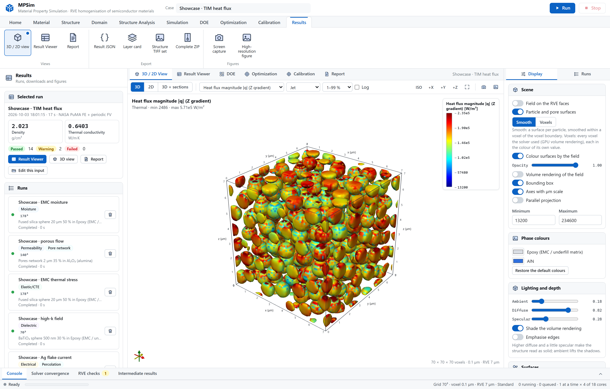
맨 위에는 현재 해석 중인 케이스 이름과 Run, Stop이 있습니다. 케이스 이름은 결과와 보고서에 그대로 남으므로 알아볼 수 있게 적어 두는 편이 좋습니다.
작업 순서대로 탭이 배열되어 있습니다.
| 탭 | 하는 일 |
|---|---|
| Home | 프리셋 고르기, 입력 저장·열기, 재료 데이터베이스, 머신 설정(§3.7) |
| Material | 기지 재료와 물성 |
| Structure | 필러·기공 추가와 편집, Generate structure |
| Domain | 복셀 크기, RVE 크기, 정확도 수준, Generate voxel grid |
| Structure Analysis | 기공률·압입·네트워크·관통경로·입자분석 켜고 끄기 |
| Simulation | 열·전기·전자기·역학·유동 해석 켜고 끄기 |
| DOE | 조건을 범위로 주어 여러 해석을 한 번에 큐에 넣기 |
| Optimization | 주요 인자 도출, 대리모델, 최적점 탐색 |
| Calibration | 측정한 유효 물성에서 미지의 재료 값(계면 열저항 등)을 거꾸로 찾기(30장) |
| Results | 화면 전환, 내려받기, 그림 저장 |
리본의 해석 아이콘은 켜짐/꺼짐 상태를 그대로 보여줍니다. 눌러서 바로 켜고 끌 수 있고, 왼쪽 패널의 카드에 있는 스위치와 같은 것입니다. 쓸 수 없는 해석은 흐리게 표시되며(예: 기공이 없으면 투과도), 이유를 함께 알려줍니다.
선택한 리본 탭에 해당하는 입력란이 나옵니다. 값을 고치면 즉시 반영되어, 아래쪽에 예상 격자 크기나 조성 같은 정보가 바로 갱신됩니다. 해석을 돌리기 전에 설정이 타당한지 여기서 확인할 수 있습니다.
| 탭 | 내용 |
|---|---|
| 3D / 2D View | 구조와 계산된 물리량을 3차원·단면으로 봅니다(26장). |
| Result Viewer | 모든 수치 결과가 항목별로 정리됩니다(25장). |
| DOE | 조건별 결과 표와 그래프(28장). |
| Optimization | 대리모델을 만들고(1단계) 그 모델로 최적점과 절충 전선을 찾습니다(2단계). 29장. |
| Calibration | 식별성 점검과 보정 결과: 미지수별 추정값, 사후분포, 다음 측정 제안(30장). |
| Report | 그림까지 포함된 보고서를 그대로 봅니다(27장). |
Display에서 3D 화면에 무엇을 표시할지 정합니다 — 표면, 단면, 화살표, 유선, 색 범위, 그리고 상(phase)별 색상과 조명입니다(26장). Runs에는 지금까지 돌린 해석 목록이 있어, 예전 결과를 눌러 다시 볼 수 있습니다. 각 줄에는 그 실행이 한 일이 표시됩니다 — 구조만 만들었으면 Structure, 해석을 했으면 해석마다 색 표식(Thermal, Elastic/CTE, Viscosity, Moisture …)과 격자 크기, 상 구성 한 줄. DOE 케이스는 구성 대신 그 케이스의 변수 값(예: "content 50 · d 5")이, Calibration은 보라색 표식이 나옵니다. DOE로 만든 해석은 스터디 한 줄로 묶여 있고, 그 줄을 누르면 개별 케이스가 펼쳐집니다 — 64개를 한꺼번에 돌려도 이전 결과가 묻히지 않습니다(28장).
| 탭 | 내용 |
|---|---|
| Console | 해석 진행 상황이 흐릅니다. 어느 단계에서 시간이 걸리는지 보입니다. |
| Solver convergence | 반복 해의 잔차가 줄어드는 그래프. 수렴이 정상인지 봅니다. |
| RVE checks | 해석 전 기준 점검 결과. 경고 개수가 배지로 표시됩니다. |
| Intermediate results | 해석이 끝나기 전에도 먼저 나온 값들을 보여줍니다. |
맨 아래 상태줄에는 격자 크기, 복셀 크기, RVE 크기, 실행·대기 중인 작업 수, 그리고 지금 쓰고 있는 코어 배분이 항상 표시됩니다.
Home 탭 왼쪽에 Machine 항목이 있습니다. 이 PC의 계산 자원을 어떻게 나눌지 정하는 곳입니다.
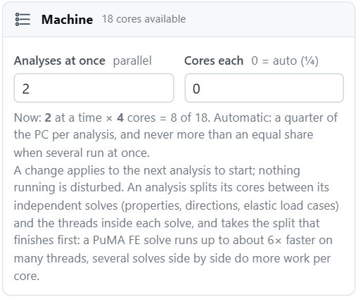
| 항목 | 의미 |
|---|---|
| Analyses at once | 동시에 돌릴 해석(작업)의 개수. 나머지는 대기열에서 차례를 기다립니다. |
| Cores each | 해석 하나가 쓸 코어 수. 0 = 자동: PC 코어의 ¼, 여러 해석을 동시에 돌리면 코어를 넘지 않게 나눕니다. |
PuMA의 FE 풀이는 원래 코어를 하나만 씁니다. 격자 번호표를 Python 반복문으로 만들고, scipy의 MINRES와 NumPy 행렬곱이 모두 single thread이기 때문입니다(측정: 112³ 열전도 한 번에 번호표 5.1 s, MINRES 벡터 연산 3.4 s, 행렬곱 2.0 s). v4는 PuMA의 같은 수식(요소 행렬, 주기 DOF 번호, 하중, MINRES)을 그대로 두고, 이 세 부분을 모든 코어에서 돌립니다. 같은 허용오차까지 풀면 PuMA 원래 경로와 결과가 1e-7 안에서 같고, 셀프테스트가 매번 확인합니다(31장).
| 풀이 하나 (14코어 PC, 끝까지 수렴) | 1 thread | 4 | 8 | 14 |
|---|---|---|---|---|
| 열전도 FV (112³) — 기본 | 1.4 s | 1.3 s | 1.4 s | 1.5 s |
| 열전도 PuMA FE (112³) — 선택 | 30.5 s | 11.7 s | 8.4 s | 7.8 s |
| 탄성 PuMA FE (64³, 하중 1개) | 36.0 s | 13.7 s | 10.0 s | 8.3 s |
FE 풀이는 14 thread에서 약 4배 빨라지고, 8 thread 근처부터 메모리 대역폭에 막혀 더디게 늘어납니다. 열전도의 기본인 FV는 FFT 전처리 덕분에 반복이 적어(39회) 한 thread로도 1.4 s이며, FE보다 20배 빠릅니다.
한 해석 안에서도 물성마다, 방향마다, 탄성 하중마다 풀이가 따로입니다. 열전도 + 유전 + 열팽창을 x·y·z로 풀면 3 + 3 + 7 = 13개의 독립 풀이입니다. 코어를 나누는 방법은 두 가지입니다 — 여러 풀이를 나란히 돌리거나, 풀이 하나에 thread를 여러 개 주거나. 코어당 일은 나란히 돌릴 때 더 많이 하지만(탄성 하중 하나: 1 thread 36 코어·초, 4 thread 55 코어·초), 탄성 하중처럼 긴 풀이가 몇 개뿐이면 thread를 주는 편이 빨리 끝납니다.
v4는 해석을 시작할 때 가능한 모든 나눔을 따져 가장 먼저 끝나는 것을 고릅니다. 각 나눔마다 풀이를 긴 것부터 배정해 끝나는 시각을 계산하는데, 풀이 하나의 속도 향상은 위 측정에 맞춘 식 S(t) = 1 / (0.15 + 0.85/t)을 씁니다. 동시에 도는 풀이 수는 남은 메모리로도 제한됩니다(Simulation 탭 Independent solves, 기본 켜짐).
| 해석에 준 코어 (13개 풀이) | 4 | 8 | 12 | 16 | 32 | 64 |
|---|---|---|---|---|---|---|
| 나란히 × thread | 4 × 1 | 8 × 1 | 4 × 3 | 8 × 2 | 8 × 4 | 7 × 9 |
실행 기록(run.log)에는 parallel solves: 13 independent problems on 8 workers × 2 thread(s)처럼 남습니다. 메모리가 모자라 나란히 둘 수 있는 수가 줄면, 그만큼 thread를 더 줍니다.
같은 해석(64³, 열전도·유전·열팽창 x·y·z, 풀이 13개)을 이 PC에서 잰 시간입니다.
| 코어 | 방식 | 시간 |
|---|---|---|
| 4 | v4 초기 — PuMA FE single thread, 차례로 | 708 s |
| 4 | v4 초기 — PuMA FE single thread, 4개 나란히 | 291 s |
| 4 | 현재 — 차례로 | 120 s |
| 4 | 현재 — 자동 배분 (4 × 1) | 115 s |
| 12 | 현재 — 차례로 | 73 s |
| 12 | 현재 — 자동 배분 (메모리 때문에 4 × 3) | 70 s |
현재 방식의 결과는 모두 자리수까지 같습니다(kx 0.462771 W/m·K, εx 5.19224, α = [36.128, 35.729, 35.965] ppm/K). v4 초기 두 줄은 열전도를 PuMA FE로, 입자 배치를 Allow contacts로 풀었으므로 값이 다릅니다. 지금은 시간의 대부분이 탄성 하중 7개입니다. 이 PC에서는 12코어부터 메모리 대역폭이 한계라 나누는 방식에 따른 차이가 작습니다. 메모리 채널이 많은 서버에서는 자동 배분의 이득이 커질 것으로 예상되며, 그 서버에서 Independent solves를 Off와 Auto로 한 번씩 돌려 확인하기를 권합니다 — 두 방식의 결과는 같고 시간만 다릅니다.
메모리는 또 다른 제약입니다. 병렬 수를 올리면 메모리도 그만큼 곱해집니다 — 16 GB가 필요한 해석을 3개 동시에 돌리면 48 GB가 필요합니다. 해석 하나가 얼마를 요구하는지는 Domain 탭이 알려줍니다(6장 7절).
그래서 대기열은 메모리도 보고 다음 해석을 시작합니다. 해석마다 Domain 탭의 예상 메모리에 실측 여유(×1.4 + 0.3 GB)를 더해 두고, 이미 돌고 있는 해석들과 합친 값이 PC 메모리의 70 %를 넘거나 지금 비어 있는 메모리가 모자라면, 병렬 자리가 남아 있어도 기다렸다가 시작합니다. 메모리가 넘쳐 디스크 스왑으로 번지면 모든 해석이 함께 수십 배 느려지기 때문입니다. 혼자 돌 때는 이 제한이 걸리지 않으므로, 큰 해석 하나가 영영 막히는 일은 없습니다.
Home 탭 왼쪽의 Work folder와 Case 두 칸이 결과가 어디에 쓰일지를 정합니다. 해석을 돌리기 전에 먼저 정하십시오.
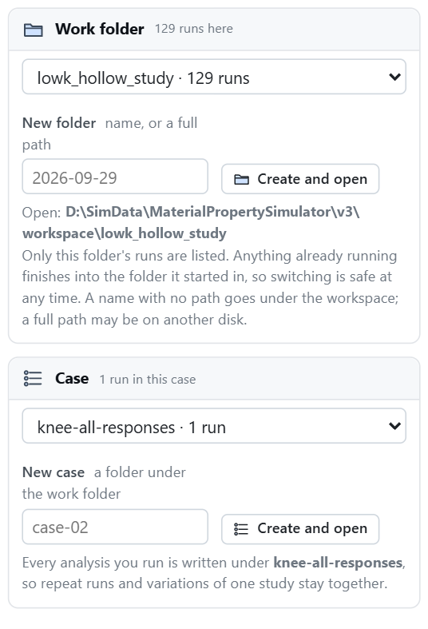
| 단계 | 하는 일 | 디스크에 생기는 것 |
|---|---|---|
| 작업 폴더 | 한 번의 작업(하루, 한 과제)을 담는 폴더. 새로 만들 때 이름을 비워 두면 오늘 날짜가 이름이 됩니다. 이름만 쓰면 workspace 아래에, 전체 경로를 쓰면 다른 디스크에도 만들 수 있습니다. | workspace/2026-09-29/ |
| 케이스 | 작업 폴더 안의 한 연구. New case로 만들 때마다 폴더가 하나 생기고, 이후의 모든 해석은 이 케이스 아래에 쌓입니다. | …/2026-09-29/hollow-sphere/ |
| 해석(run) | Run 한 번. 폴더 이름은 무엇을 해석했는지입니다 — 시각이 아닙니다. 같은 해석을 또 돌리면 -02, -03이 붙습니다. | …/hollow-sphere/thermal+dielectric/ |
저유전 중공 필러 연구의 실제 폴더는 이렇게 생겼습니다.
lowk_hollow_study/ ← 작업 폴더
knee-all-responses/ ← 케이스
thermal+dielectric+cte/ ← 해석: 열전도 + 유전 + 열팽창
size-distribution/
thermal+dielectric/
thermal+dielectric-02/ ← 같은 해석을 조건만 바꿔 다시
thermal+dielectric-03/
doe-hollow-sphere/
doe-HGM-t-0.526817-vf-29.1782/ ← DOE 케이스: 바꾼 인자 값이 이름
doe-HGM-knee-t-1.018-vf-45.0/
| 항목 | 내용 |
|---|---|
| Workspace(작업 공간) 지정 | Home 탭의 Workspace에서 모든 작업 폴더의 뿌리를 어느 디스크에나 정할 수 있습니다(예: D:\SimData\MPSim). 해석 프로젝트의 작업 디렉터리와 같은 개념입니다. 고른 위치는 다음 실행에도 기억되며, 진행 중인 해석은 시작한 위치에 그대로 끝까지 쓰입니다. |
| 해석마다 바로 보이는 결과 | 구조가 만들어진 뒤 해석 하나가 끝날 때마다 그 그림이 3D/2D View 위의 작은 창에 차례로 나타나고, Result Viewer도 끝난 해석까지 바로 갱신됩니다(제목 옆에 "provisional"). 그림은 별도 프로세스가 그리므로 해석을 늦추지 않습니다 — 측정에서 같은 해석이 오히려 9 % 빨랐습니다(그림을 끝에 몰아 그리지 않으므로). |
| Solver convergence | 동시에 풀리는 문제(방향별 전도, 탄성 하중 7개, Calibration의 설계점들)가 각자의 곡선으로 그려집니다. 한 곡선만 멈춰 있으면 그 문제가 느린 것입니다. |
| 구조 생성 | 입자 겹침 해소를 모든 코어에서 병렬로 하고, 시간이 아니라 단계 수로 끝을 정합니다. 그래서 같은 입력이면 RVE 크기나 PC 속도와 무관하게 같은 구조가 나옵니다(5장). |
| 3D 표시 | Voxels 표시는 해석에 쓴 복셀을 하나도 줄이지 않고 그대로 그립니다(GPU 볼륨 렌더링). Smooth는 입자마다 따로 만든 매끈한 표면입니다(26장). |
| 새 해석과 기능 | 점도와 유동성(13장), 수분 흡습·확산·팽윤과 Tg 위 물성(14장), Calibration(30장). |
이 탭은 재료 라이브러리입니다. 기지든 필러든 기공이든, 어떤 재료의 물성이든 여기서 고치고, 새 재료를 추가합니다. 어느 영역에 어떤 재료를 쓸지는 Structure 탭에서 고릅니다(5장).
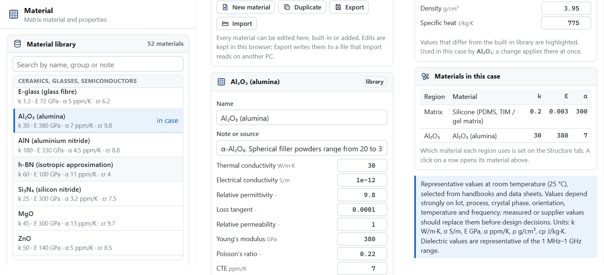
이 프로그램은 구조를 기지 하나 + 상 여러 개로 봅니다.
둘 다 Structure 탭에서 같은 방식으로 라이브러리의 재료를 골라 씁니다. 목록의 기지 행을 누르면 기지 편집기가 열리고, 상 행을 누르면 상 편집기가 열립니다 — 탭이 바뀌지 않습니다. 물성을 고치려면 편집기의 Edit this material을 누르거나 이 탭으로 옵니다.
기공도 "상"의 하나로 다룹니다. 공기나 진공을 재료로 고르면 되며, 프로그램은 탄성계수가 0 이하인 재료를 void(빈 공간)로 인식하여 유동·확산 해석에서 기공으로 취급합니다.
반도체 소재에서 자주 쓰는 52종이 미리 들어 있습니다. 고분자(에폭시, PI, PTFE, 실리콘…), 무기물(SiO₂, Al₂O₃, AlN, BN, SiC…), 금속(Cu, Ag, Al, 솔더…), 탄소계(CNT, 그래파이트, 카본블랙), 자성체(Ni, 카보닐 철, 페라이트), 그리고 공기·진공입니다. 전체 목록은 부록 A에 있습니다.
각 재료는 해석에 필요한 물성을 모두 갖고 있습니다.
| 물성 | 기호 / 단위 | 쓰이는 해석 |
|---|---|---|
| 열전도도 | k (W/m·K) | 열전도도, 흡음(간접), 복사(간접) |
| 밀도 | ρ (g/cm³) | 열확산율, 무게분율 환산 |
| 비열 | cp (J/kg·K) | 열확산율 |
| 전기전도도 | σ (S/m) | 전기전도도, EMI |
| 비유전율 / 손실 | εr, tanδ | 유전율·손실, EMI |
| 비투자율 | μr | 투자율, EMI |
| 영률 / 푸아송비 | E (GPa), ν | 탄성, 열응력 |
| 열팽창계수 | α (ppm/K) | CTE, 열응력 |
목록에서 재료를 누르면 아래에 이름, 설명(출처), 물성 열 가지가 열립니다. 값을 고치면 즉시 라이브러리에 반영되고, 지금 케이스에서 그 재료를 쓰는 모든 영역 (기지, 상, 코팅 껍질)에 같은 값이 적용됩니다. 적용된 곳은 편집기 아래에 이름으로 표시됩니다.
| 동작 | 버튼 | 설명 |
|---|---|---|
| 새 재료 | New material | 선택한 재료의 값을 출발점으로 새 재료를 만듭니다. 이름부터 바꾸십시오. 그룹을 정할 수 있습니다. |
| 복제 | Duplicate | 같은 값의 사본 — 예: "Al₂O₃ (supplier A)"처럼 변형을 따로 두고 싶을 때. |
| 기본값으로 | Restore library values | 고친 내장 재료를 원래 값으로 되돌리고, 케이스에도 다시 적용합니다. |
| 삭제 | Delete | 사용자가 추가한 재료만 지웁니다. 쓰고 있는 영역은 값을 그대로 유지합니다. |
| 내보내기 / 가져오기 | Export / Import | 고친 재료와 추가한 재료를 JSON 파일로 저장하고, 다른 PC·다른 브라우저에서 읽어 들입니다. |
물성은 열 가지이며 전부 필수입니다. 하나라도 비어 있거나 범위를 벗어나면 해석이 시작되지 않고, 잘못된 항목이 한꺼번에 모두 표시됩니다 — 하나씩 고쳐 가며 다시 누를 필요가 없도록 되어 있습니다.
| 물성 | 기호 (단위) | 허용 범위 | 하한·상한이 그런 이유 |
|---|---|---|---|
| 열전도도 | k (W/m·K) | 0 – 100,000 | |
| 전기전도도 | σ (S/m) | 0 – 109 | 절연체는 0이 아니라 아주 작은 값(예 10-14)을 넣습니다. |
| 비유전율 | εr (-) | 1 – 100,000 | 진공이 1이므로 그보다 작을 수 없습니다. |
| 손실 탄젠트 | tanδ (-) | 0 – 10 | |
| 비투자율 | μr (-) | 1 – 1,000,000 | 같은 이유로 1 미만은 받지 않습니다(반자성은 다루지 않습니다). |
| 영률 | E (GPa) | 0 – 5,000 | 0은 특별한 뜻을 갖습니다 — 아래를 보십시오. |
| 푸아송비 | ν (-) | 0 – 0.4999 | 0.5는 완전 비압축성이라 탄성 해가 발산합니다. |
| 열팽창계수 | α (ppm/K) | -100 – 1,000 | 유일하게 음수를 받습니다(ZrW2O8 같은 음의 팽창 재료). |
| 밀도 | ρ (g/cm³) | 0 – 30 | |
| 비열 | cp (J/kg·K) | 0 – 10,000 |
| 무엇 | 어디에 | 알아 둘 점 |
|---|---|---|
| 라이브러리의 수정·추가 | 이 브라우저 | 다른 PC로는 Export → Import로 옮깁니다. 브라우저 사이트 데이터를 지우면 사라지므로 중요한 재료는 내보내 두십시오. |
| 해석에 실제로 쓰인 값 | 그 런의 spec.json에 숫자 그대로 | 런은 그 자체로 완결됩니다. 라이브러리가 바뀌어도 이미 끝난 해석의 결과·보고서·재현에는 아무 영향이 없습니다. |
h-BN, 그래파이트, 탄소섬유처럼 그 자체가 방향에 따라 물성이 다른 재료가 있습니다. 라이브러리에는 이런 재료가 방향 평균값으로 들어 있습니다(이름에 "isotropic approximation" 또는 "orientation-averaged"라고 적혀 있습니다).
즉 입자가 정렬되어 생기는 이방성은 계산되지만(입자를 한 방향으로 눕히면 결과 텐서가 이방적으로 나옵니다), 입자 내부의 결정 이방성은 평균으로 뭉뚱그려집니다. 판상 BN의 면내/두께방향 차이가 매우 큰 경우에는 이 점이 과소평가로 이어질 수 있으니 결과를 보수적으로 해석하십시오.
패널 아래쪽에는 현재 케이스의 기지·상·껍질이 쓰는 재료와 그 k, E, α가 한눈에 보입니다. 줄을 누르면 그 재료가 위에서 열립니다. 기지와 필러의 물성 대비가 얼마나 큰지 미리 확인하는 용도이기도 합니다. 이 대비(contrast)가 클수록 해상도가 더 필요합니다 — 예를 들어 에폭시(0.2)와 AlN(150)은 약 750배 차이이며, 이런 경우 복셀이 거칠면 오차가 커집니다(6장).
이 탭에서 재료의 속을 실제로 만듭니다. 어떤 filler를 얼마나, 어떤 크기와 모양으로, 어떻게 놓을지 정하면 프로그램이 그 조건을 만족하는 3차원 구조(RVE)를 생성합니다. v4에서는 형상이 크게 늘었고, pore와 filler를 형상이 아니라 재료로 구분합니다.
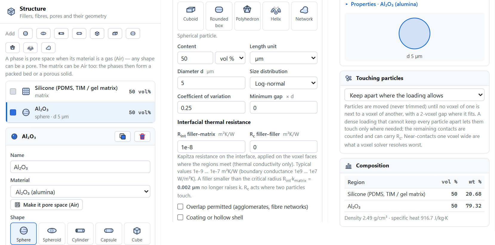
패널 맨 위의 Add 단추나 리본의 Add a phase에서 형상을 고릅니다. 모든 형상은 회전·배향·크기 분포·shell(코팅/중공)·겹침 허용을 똑같이 지원합니다.
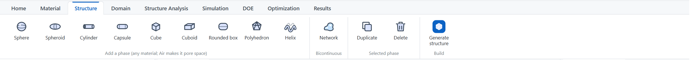
| 형상 | 치수 | 쓰는 경우 |
|---|---|---|
| Sphere | 지름 d | 구형 silica, alumina, AlN 분말, 중공 유리구 |
| Spheroid | d, 종횡비 c/a | 판상(c/a < 1, BN·graphite flake), 짧은 막대(c/a > 1) |
| Cylinder | d, 전체 길이 | 절단 fiber, rod, 원판(길이 < d) |
| Capsule | d, 전체 길이 | 끝이 둥근 fiber — 실제 fiber에 더 가깝습니다 |
| Cube | 모서리 d | 입방체 결정, 각진 filler |
| Cuboid | 모서리 a, b, c | 벽돌형, 사각 판상 입자 |
| Rounded box | a, b, c, blockiness n | 모서리가 둥근 각진 입자. superellipsoid |x/a|ⁿ+|y/b|ⁿ+|z/c|ⁿ ≤ 1로, n = 2면 타원체, n이 클수록 상자에 가까워집니다. DEM(이산요소법) 코드의 "meta-particle"과 같은 표현입니다. |
| Polyhedron | 외접 지름 d, 종류 | 정다면체(tetra·octa·dodeca·icosahedron), 또는 irregular grains — 분쇄 입자처럼 제각각인 볼록 다면체를 여러 변형(variants)으로 섞어 넣습니다 |
| Helix | 선 지름 d, 코일 지름, pitch, 감긴 수 | 감긴(curled) fiber, 스프링형 filler. 코일 지름은 선 중심 기준입니다 |
| Network | ligament 폭 | 서로 이어진 무작위 구조(아래 5.2) |
편집기 아래 미리보기가 현재 치수로 그려지므로 의도한 모양인지 먼저 확인하십시오.
목록 맨 위의 기지 행을 누르면 기지 편집기가 열립니다(탭은 바뀌지 않습니다). 상과 똑같이 Material 목록에서 라이브러리 재료를 고르며, 기지를 Air로 고르면 상들이 충전층이나 다공 고체를 이룹니다. 편집기의 Properties에는 그 재료의 물성이 읽기 전용으로 보이고, 물성을 고치려면 Edit this material을 눌러 Material 탭의 라이브러리에서 고칩니다(4장). 라이브러리에서 고친 값은 그 재료를 쓰는 모든 영역에 한 번에 적용됩니다.
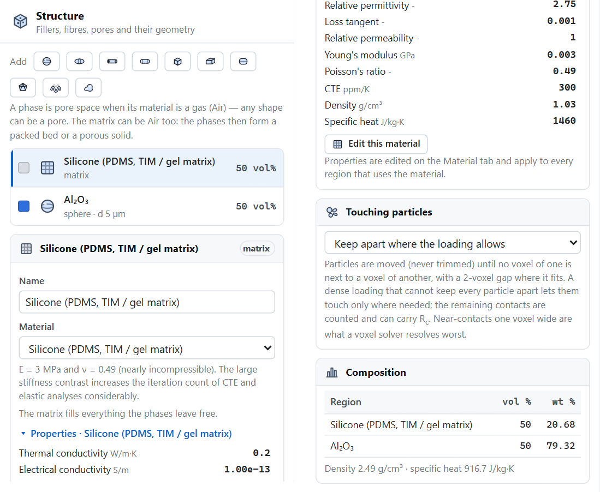
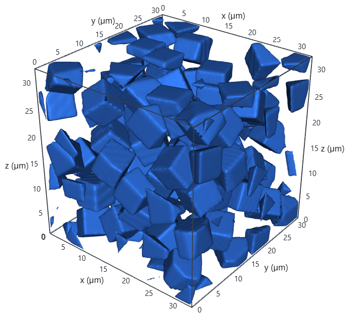
Cube · AlN 30 %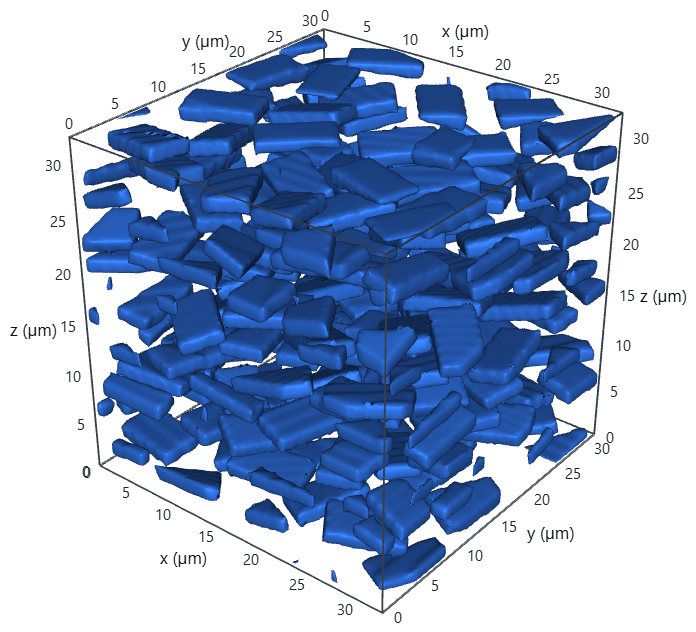
Cuboid 7×4×1.5 µm · z 정렬 20 %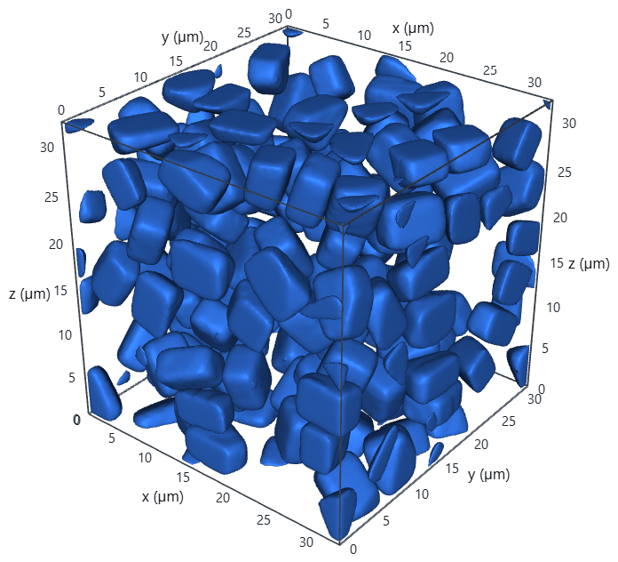
Rounded box (n = 5) 30 %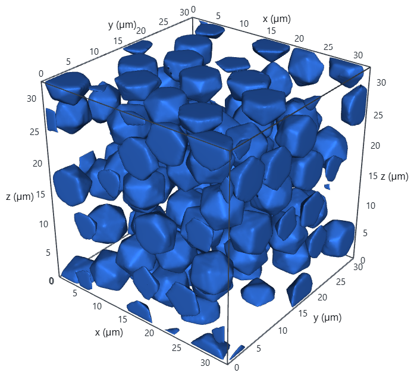
Polyhedron · icosahedron 30 %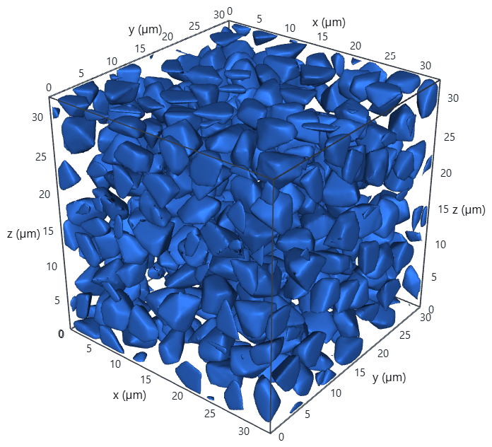
Polyhedron · irregular grains 30 %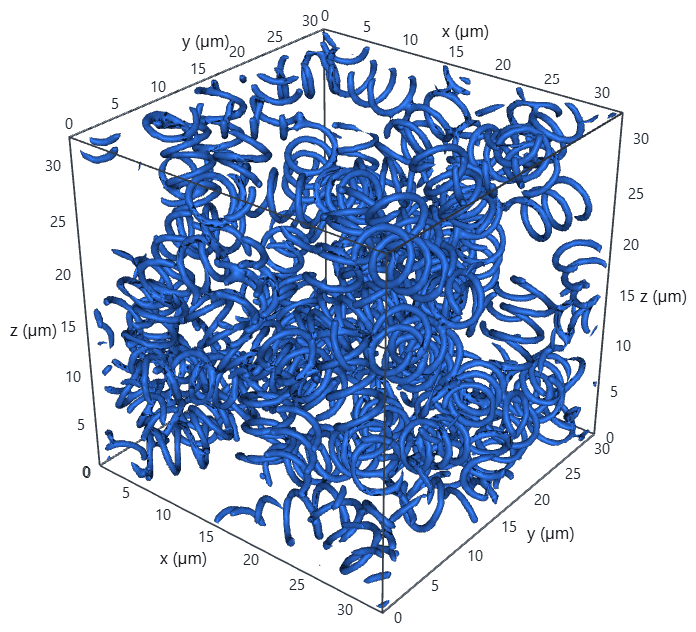
Helix · Cu 6 %v3까지는 "Spherical pores", "Pore network"라는 기공 전용 형상이 있었습니다. v4에서는 어떤 형상이든 재료가 기체(Air)이면 pore입니다. 편집기의 Make it pore space (Air) 단추를 누르거나 재료 목록에서 Air를 고르면 됩니다.
| 만들고 싶은 것 | 설정 |
|---|---|
| 독립 구형 기공 (closed-cell foam) | Sphere + Air |
| 납작한 기공, 균열 모양 void | Spheroid(c/a < 1) 또는 Cuboid + Air |
| 열린 연결 기공 (filter, membrane, 다공 세라믹) | Network + Air |
| 소결 금속·세라믹 skeleton, foam의 solid | Network + 해당 solid, matrix는 Air |
| 입자 충전층 (packed bed, 분말층) | Matrix를 Air로, 입자는 solid |
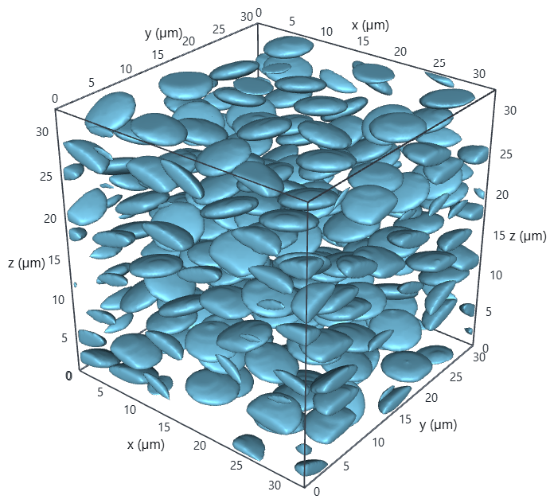
Spheroid(c/a 0.3) + Air · z 정렬 20 % — 납작한 독립 기공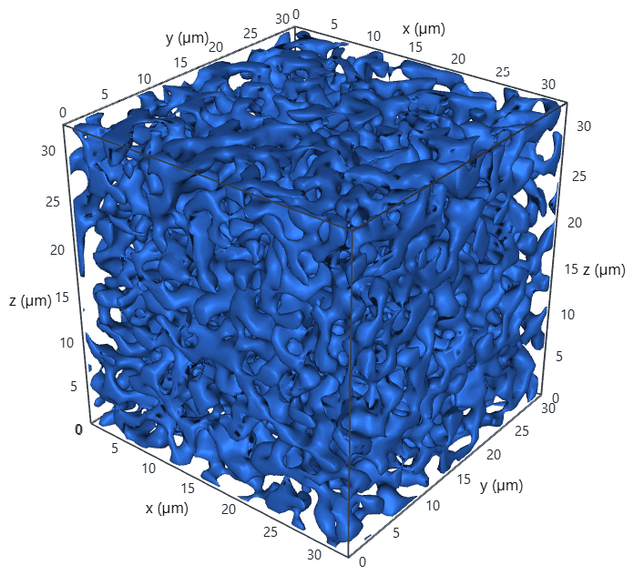
Network + Al, matrix Air — 소결 skeleton 35 %부피분율 vol %과 무게분율 wt % 중에서 고를 수 있습니다. wt%로 넣으면 각 재료의 밀도로 vol%로 환산하므로 밀도가 정확해야 합니다. 패널 맨 아래 Composition 표에 환산 결과와 전체 밀도, 비열이 표시됩니다.
Log-normal을 고르고 변동계수(CV)를 주면 모든 치수가 같은 비율로 분포합니다. 구가 아닌 형상에는 배향이 있습니다.
| 설정 | 결과 |
|---|---|
| Random 3D | 완전 무작위 회전. 결과가 등방성으로 나옵니다. |
| Aligned with x / y / z | 입자의 긴 축(국부 z축)을 해당 축으로 정렬하고, 그 축 둘레 회전은 무작위입니다. |
| Random in the xy plane | 면내에 눕되 면내 방향은 무작위. film·sheet에서 가장 흔한 상태입니다. |
Orientation spread(°)로 정렬의 완전함을 조절합니다. 0°면 완벽한 정렬이고, 실제 공정에서는 15~30°가 현실적입니다. 판상 입자(c/a < 1 spheroid, 얇은 cuboid)를 z로 정렬하면 판이 xy 면에 눕습니다.
입자는 겹치지 않게 배치됩니다. 프로그램은 조건에 따라 세 가지 방법을 자동으로 고릅니다.
| 방법 | 언제 | 원리 |
|---|---|---|
| Growth with overlap relaxation + Monte-Carlo | 모든 입자가 구 | 작은 구에서 시작해 크기를 키우며 겹침을 밀어내 풉니다(force-biased / collective rearrangement 계열). 목표 전에 멈추면 Monte-Carlo 압축(Metropolis 이동 후 첫 접촉까지 팽창)이 이어받습니다. 같은 크기 구 250개: 60 %를 3.5 s에, 무작위 최밀충전(64 %)에서 목표 크기의 0.997까지. |
| Voxel RSA | 구가 아닌 형상, 낮은~중간 함량 | 무작위 위치·방향으로 하나씩 넣되, 실제 격자에서 겹치면 다시 뽑습니다. 겹침 판정이 정확하지만 구는 약 38 %, 긴 입자는 그보다 훨씬 낮은 함량에서 더 들어가지 않습니다(jamming). |
| Rigid clump relaxation | RSA가 목표 전에 막힐 때 | 각 입자를 구 여러 개의 묶음(clump, DEM의 multi-sphere 방식)으로 근사해 작은 크기에서 시작하고, 겹침을 밀어내면서 입자를 이동·회전시켜 목표 크기까지 키웁니다. 배향 조건(정렬, 면내)은 유지됩니다. 마지막에 실제 형상으로 격자에 그리고, clump가 덮지 못한 모서리·가장자리에서 남은 겹침을 없앱니다. 겹친 voxel마다 두 입자를 중심을 잇는 방향으로 밀고, 그 voxel에서 생기는 토크로 돌립니다 — 모서리끼리 걸린 입자는 미는 것만으로는 빠지지 않지만 돌리면 빠집니다. 그래도 남으면 관련 입자만 모양과 방향을 유지한 채 2 %씩 줄입니다. 입자는 겹치지도, 깎이지도 않습니다. |
| 혼합 | 배치 방법 | 두 입자에 든 voxel |
|---|---|---|
| 구 10 + 2.5 µm, 55 vol% · 구 12 + 3 µm(거친 voxel), 55 vol% | Growth + Monte-Carlo | 0 |
| 구 8 + 3 + 1.2 µm, 60 vol% · 로그정규(CV 0.4), 58 vol% | Growth + Monte-Carlo | 0 |
| 구 + 큐브 40 % · 구 + 판상 30 % · 구 + 섬유 30 % | Clump relaxation | 0 |
| 큐브 + 판상(8 × 8 × 1.5 µm), 45 vol% | Clump relaxation | 0 (v5.0: 271, 입자 123개의 모서리가 잘림) |
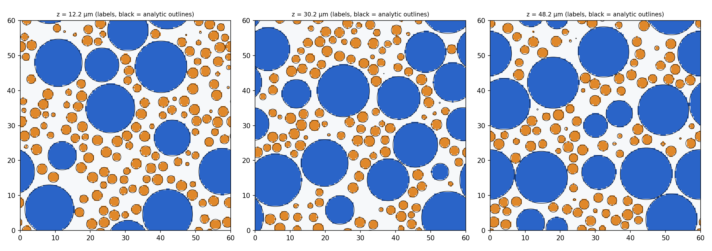
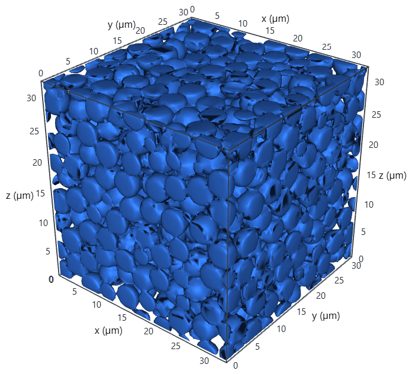
Sphere 62 % (무작위 최밀충전 근처)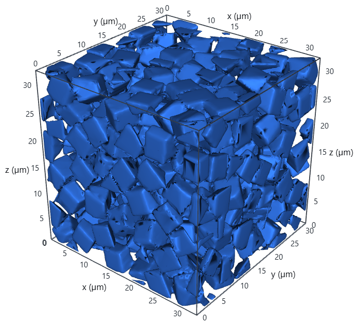
Cube 45 % (clump relaxation)연속 형상에서 겹치지 않는 두 입자라도, 표면 사이 간격이 voxel 하나보다 좁으면 격자에서는 이웃한 voxel이 되어 닿은 것처럼 보입니다. 이 "격자 위의 접촉"이 열전도 해석을 크게 흔듭니다. voxel FE(PuMA)는 모서리·꼭짓점만 맞닿은 voxel 사이로도 열을 흘리고, 면 기반 FV는 면을 공유할 때만 흘립니다. 입자 모양을 바꾸지 않고 이를 다루는 세 가지 방식이 있습니다.
| 설정 | 동작 |
|---|---|
| Keep apart where the loading allows (기본값) |
입자를 옮겨서(깎지 않고) 어느 방향(26 이웃)으로도 다른 입자의 voxel과 붙지 않게 합니다. RSA는 그런 위치를 거절하고, packing은 표면 간격 2 voxel(꼭짓점 이웃을 없애는 √3 voxel 이상)을 둡니다. clump packing 뒤에는 실제 형상으로 다시 그려, 남은 접촉 쌍을 반대쪽으로 밀어 없앱니다. 함량이 높아 간격이 들어가지 않으면 들어가는 만큼만 두고, 꼭 필요한 곳에서만 닿게 합니다. |
| Allow contacts | packing이 놓은 대로 둡니다. 입자는 서로 닿을 수 있습니다. 접촉 network를 의도할 때(Rc와 함께) 씁니다. |
| Trim contacts to matrix (v3) | 맞닿은 voxel을 matrix로 지웁니다. 접촉은 없어지지만 filler의 형상이 깎입니다. |
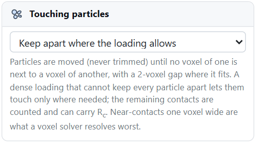
남은 접촉은 Touching particles 점검 항목에 voxel 이웃 쌍의 수(그중 면 접촉 수)로 보고되고, 면 접촉에는 5.7절의 contact resistance Rc를 줄 수 있습니다.
측정 예 — Al₂O₃ 구(6 µm, 30 W/m·K)를 epoxy(0.2 W/m·K)에 넣은 64³ RVE(입경 16 voxel)의 x 방향 열전도도입니다. 기본 계산(주기적 FV)과, 비교용 PuMA FE 값입니다.
| 함량 | 설정 | 닿은 voxel 쌍 (면) | FV (기본) | PuMA FE |
|---|---|---|---|---|
| 30 % | Keep apart | 0 | 0.463 | 0.508 |
| 30 % | Allow contacts | 592 (30) | 0.514 | 0.652 |
| 50 % | Keep apart (간격 1 voxel까지만 들어감) | 853 (0) | 0.891 | 1.96 |
| 50 % | Allow contacts | 4,458 (376) | 1.43 | 2.50 |
| 60 % | 둘 다 (간격이 들어갈 자리 없음) | 23,314 (2,535) | 5.52 | 8.09 |
| 30 % 정육면체 | Keep apart | 0 | 0.543 | 0.629 |
50 % Keep apart 구조를 그대로 두고 격자만 촘촘하게 다시 그려 푼 결과입니다. 입자 위치·크기는 연속 좌표로 저장되어 있어 같은 구조를 어떤 voxel 크기로도 다시 그릴 수 있습니다.
| 격자 (입경당 voxel) | 64³ (16) | 128³ (32) | 192³ (48) | 외삽값 |
|---|---|---|---|---|
| FV (기본) | 0.891 | 0.876 | 0.871 | 0.861 |
| PuMA FE | 1.960 | 0.971 | 0.930 | 0.848 |
Minimum gap(크기의 배수)을 주면 입자 사이에 실제 간격을 둡니다(분산제·코팅으로 떨어진 입자). Overlap permitted를 켜면 겹침을 허용합니다 — 응집체, fiber network, 소결 접촉을 만들 때 씁니다.
Coating or hollow shell을 켜면 모든 형상에 shell을 씌울 수 있습니다. Shell은 입자 표면을 법선 방향으로 두께만큼 바깥으로 옮긴 영역입니다(구·원기둥·상자·다면체·helix에서 정확한 offset).
얇은 shell은 해상도를 요구합니다. 자동 격자는 shell 두께에 voxel 2개(전도형 해석), 탄성·열팽창이 있으면 4개가 들어가도록 voxel 크기를 정합니다.
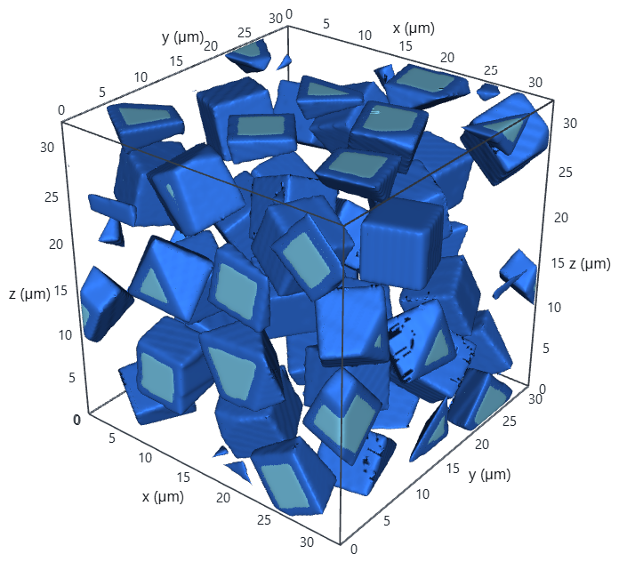
중공 cube(벽 SiO₂ 0.5 µm) 25 %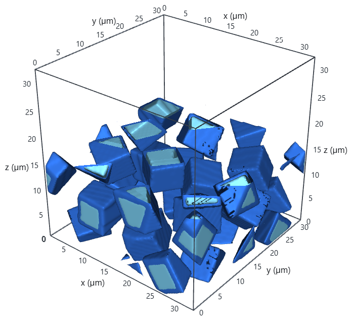
z 중간에서 자른 3D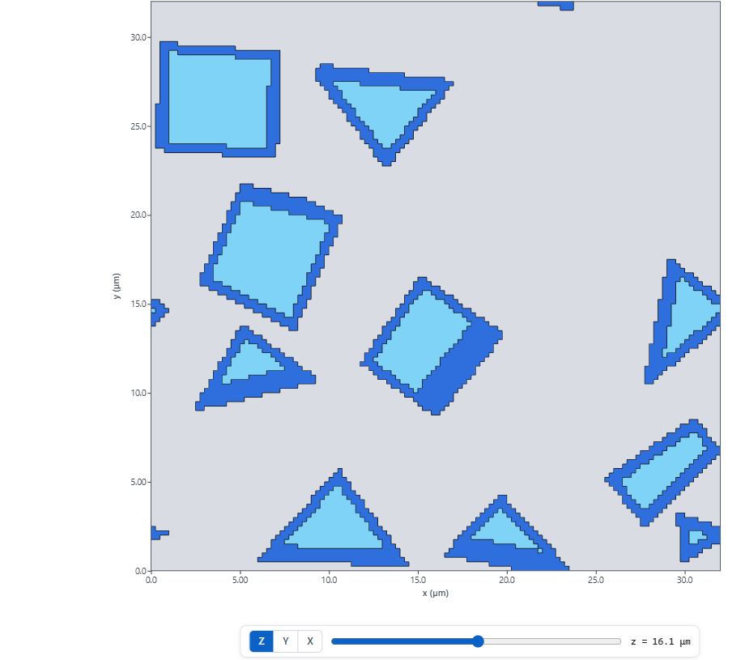
같은 위치의 voxel 단면실제 복합재에서 filler와 matrix 사이, 그리고 맞닿은 두 filler 사이에는 열이 건너갈 때 생기는 저항이 있습니다 (Kapitza 저항, 단위 m²K/W). 열전도도 계산에서 가장 중요한 보정 인자 가운데 하나이며, filler가 작을수록 영향이 큽니다.
| 입력 | 작용하는 곳 |
|---|---|
| Rint filler–matrix | 그 phase(shell이 있으면 shell)와 matrix가 만나는 모든 voxel 면 |
| Rc filler–filler contact | 서로 다른 두 입자가 맞닿은 voxel 면(5.5절에서 기록한 면) |
| Contact resistance between fillers (필러가 둘 이상일 때) | 서로 다른 필러끼리 맞닿은 면. 필러 쌍마다 따로 줄 수 있고(예: Al₂O₃–AlN), 비워 두면 두 필러 Rc의 평균을 씁니다. v4까지는 같은 필러끼리의 접촉에만 Rc가 들어가고 다른 필러끼리의 접촉면은 저항 없이 남았습니다. |
열전도도 결과에는 필러 쌍마다 적용된 Rc와 그 쌍이 맞닿은 voxel 면의 수가 표로 나옵니다. 예를 들어 Al₂O₃와 AlN을 섞은 고충진 구조에서는 서로 다른 필러 사이의 접촉면이 가장 많을 수 있으므로, 그 쌍의 값이 결과를 좌우합니다. 측정값에서 Rint나 Rc를 거꾸로 찾는 방법은 30장을 보십시오.
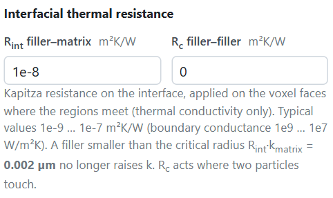
두 값 모두 열전도도 해석에만 쓰이며, 저항이 하나라도 있으면 열전도 해석은 내장 periodic finite-volume solver로 풀립니다. 이 solver는 voxel 면마다 1/k면 = 1/(2ka) + 1/(2kb) + R/h로 저항을 넣습니다. PuMA의 finite element는 이웃 요소가 절점을 공유해 면 저항을 담을 수 없기 때문입니다. 격자 표면은 계단 모양이라 실제 표면보다 면적이 넓으므로(구에서 약 1.5배), 프로그램이 해석적 표면적과 비교해 R을 보정합니다. v3는 matrix 한 층의 열전도도를 낮추는 근사를 썼는데, 이 방식은 층을 따라 흐르는 열까지 막는 오차가 있어 v4에서 바꾸었습니다.
리본의 Generate structure를 누르면 해석 없이 구조만 만들어 3D로 보여 줍니다. 함량, 입자 수, 뭉침, 맞닿은 면의 수, 도달한 크기를 여기서 먼저 확인하고 해석으로 넘어갑니다. 만든 구조는 그 런에 보관되어, 이어서 Run을 누르면 다시 생성하지 않고 같은 런에서 해석을 이어 갑니다(2.4절). 해석을 나중에 추가해도 마찬가지입니다.
해석 결과의 신뢰도는 대부분 이 탭에서 결정됩니다. 얼마나 큰 조각을, 얼마나 잘게 나누어 계산할 것인가의 문제입니다. 그리고 그 조각이 사방으로 반복되는 벌크인지, 두께가 정해진 박막인지도 여기서 정합니다.
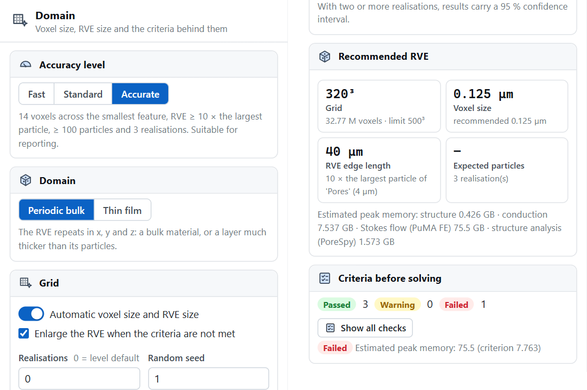
계산은 구조를 작은 정육면체(복셀, voxel)로 잘게 나누어 수행합니다. 사진의 픽셀과 같은 개념의 3차원판입니다. 복셀 하나가 계산 격자의 한 칸이 되므로,
그래서 "충분히 작되, 필요 이상으로 작지 않게"가 목표입니다.
실무에서 정하는 것은 RVE 한 변의 길이와 복셀 크기 두 가지입니다. 격자 수는 그 둘로 정해지므로 따로 입력하지 않습니다.
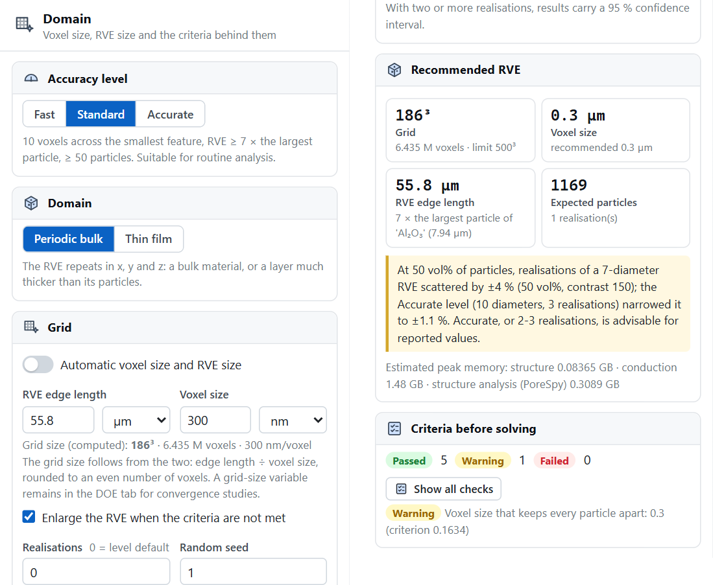
| 항목 | 뜻 |
|---|---|
| RVE edge length | 계산할 조각 한 변의 실제 길이. 크면 대표성이 좋아지고 계산이 무거워집니다. 단위 선택: nm · µm · mm · cm. |
| Voxel size | 복셀 한 변의 길이. 작을수록 형상이 정확합니다. 단위 선택은 위와 같습니다 (예: 300 nm = 0.3 µm). |
| Grid size (computed) | 위 둘에서 계산된 격자와 복셀 수. 격자는 짝수로 올리므로 실제 복셀 크기는 L ÷ N으로 아주 약간 달라질 수 있으며, 그 값이 함께 표시됩니다. |
단위는 표시에만 쓰이고, 입력 파일에는 항상 µm로 저장됩니다. 격자 수를 바꿔 가며 결과가 수렴하는지 보는 수렴성 연구는 DOE 탭의 Grid size 변수로 합니다(28장).
처음에는 Automatic voxel size and RVE size를 켜 두고 정확도 수준만 고르는 것이 편합니다. 세 수준은 아래 기준을 모두 만족하도록 크기를 잡습니다.
| 기준 | Fast | Standard | Accurate |
|---|---|---|---|
| 가장 얇은 특징을 가로지르는 복셀 수 (P10) | 6 | 10 | 14 |
| RVE 한 변 ÷ 가장 큰 입자 지름 | 4 | 7 | 10 |
| RVE 한 변 ÷ 가장 긴 입자 길이 (막대·판상) | 1.5 | 2 | 2.5 |
| 상(phase)당 입자 개수 | 20 | 50 | 100 |
| 기본 반복 횟수 (realisations) | 1 | 1 | 3 |
Fast는 경향을 보는 용도, Standard는 일상적인 해석, Accurate는 보고용 수치에 씁니다. 처음 조건을 잡을 때는 Fast로 여러 번 돌려보고, 방향이 정해지면 Standard 이상으로 다시 돌리는 방식을 권합니다.
"RVE로 인정받는 크기"에는 널리 쓰이는 정의가 있습니다. Kanit 등(2003, Int. J. Solids Struct. 40, 3647)은 RVE를 허용하는 오차로 정의합니다. 같은 크기 V의 RVE를 서로 다른 배치로 n번 만들어 계산하면 결과가 흩어지는데, 그 표준편차 D(V)로부터 평균의 95 % 오차는
이고, 크기가 너무 작으면 흩어짐뿐 아니라 평균 자체가 치우칩니다(bias). 즉 기준은 "몇 배"라는 숫자가 아니라 흩어짐과 치우침이 원하는 오차 안에 드는 크기입니다. 이 프로그램의 생성기와 솔버로 이를 직접 측정했습니다 — 단분산 구, 주기 경계, 크기마다 10개의 서로 다른 배치 (E는 6개), 지름당 8–10 복셀.
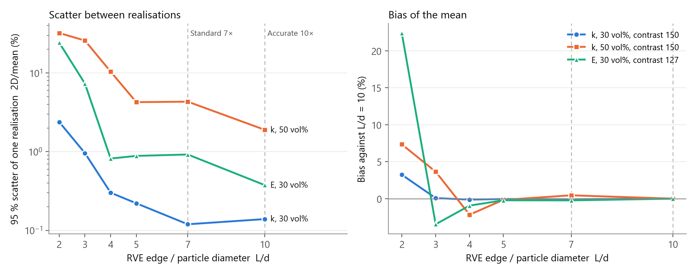
| 경우 | L/d = 4 | 5 | 7 (Standard) | 10 (Accurate) |
|---|---|---|---|---|
| k, 30 vol%, 대비 150 | ±0.30 % | ±0.22 % | ±0.12 % | ±0.14 % |
| k, 50 vol%, 대비 150 | ±10.4 % | ±4.3 % | ±4.3 % | ±1.9 % |
| E, 30 vol%, 대비 127 | ±0.82 % | ±0.88 % | ±0.92 % | ±0.38 % |
배치 하나로 계산했을 때의 95 % 흩어짐 2D/평균. 치우침은 5배부터 모두 흩어짐 범위 안이었고(4배에서 E −0.9 %), 2배에서는 +3 %(k)·+22 %(E)였습니다. α는 1.04 / 1.35 / 1.27 — 부피가 두 배면 분산이 대략 절반이 됩니다.
여기서 읽히는 것은 세 가지입니다.
매우 얇은 막처럼 두께 자체가 제약인 경우에는, 구조가 사방으로 반복된다고 보는 주기 RVE가 맞지 않습니다. Domain 섹션에서 Thin film을 고르면 x, y는 주기적으로 반복되지만 z는 실제 막 두께가 됩니다.
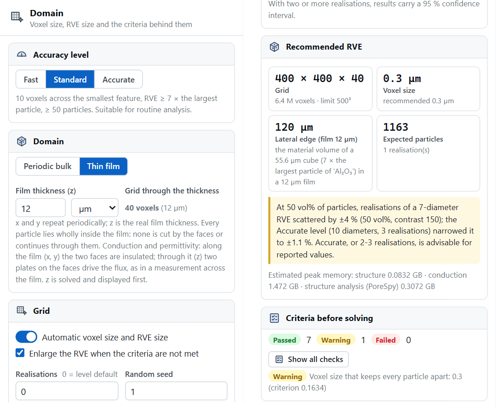
| 항목 | 박막에서 달라지는 점 |
|---|---|
| 입자 | 모든 입자가 막 안에서 끝납니다. 막의 윗면·아랫면에서 잘리지도, 반대편으로 넘어가지도 않습니다(x, y 방향으로는 평소처럼 넘어갑니다). 크기 분포 중 막보다 큰 입자는 막 두께에 맞춰지고, 같은 상의 나머지가 조금 커져 함량을 유지합니다. |
| 면의 기지 막 (skin) | 막의 윗면·아랫면에는 기본으로 복셀 한 개 두께의 기지가 남습니다(Matrix skin at each face, µm로 지정 가능, 0이면 입자가 면에 닿을 수 있음). 두께 방향 해석에서 막의 면은 전극판이므로, 면에 닿은 입자는 판과 직접 붙습니다. 그 접촉 면적은 복셀 크기가 정하므로(구가 평면에 닿는 점이 복셀 한 칸으로 부풀려짐) 결과가 해상도에 따라 흔들립니다 — 40 vol% 막에서 면 복셀의 0.6 %가 입자였을 뿐인데 kzz가 25 % 높게 나왔고, 1.5배 가는 격자에서는 그 접촉과 함께 사라졌습니다. 실제 코팅 막도 표면에 수지층이 남는 경우가 많습니다. |
| 두께 방향 입자 수 | 제한이 없습니다. 입자 2–3개만 들어가는 막도 그대로 풉니다 — 두께는 RVE 기준과 무관하게 입력한 값을 따릅니다. 점검 항목은 입자가 하나도 들어가지 않을 때만 실패로 표시합니다. 두 층 미만이면 결과가 벌크 값이 아니라 그 막 고유의 강한 이방성 값이라는 안내가 붙습니다. |
| 가로 길이 (자동) | RVE 기준(7배/10배)은 가로 방향에만 적용합니다. 그리고 막이 얇을수록 부피가 줄어 흩어짐이 커지므로(6.4절), 가로 길이를 같은 기준의 정육면체와 같은 부피가 되도록 키웁니다: L² T ≥ (7 d)³. 입자 수와 흩어짐이 정육면체와 같아지고, 복셀 수(계산량)도 같습니다. 예: d = 5 µm, 막 20 µm → 가로 47 µm(정육면체라면 35 µm). |
| 전도·유전 해석 | 막 방향(x, y)은 막의 두 면이 단열인 상태로, 두께 방향(z)은 윗면·아랫면에 전극판을 댄 상태로 풉니다 — 막을 가로질러 측정하는 실험과 같은 조건입니다. 두 층을 쌓은 막의 이론값(직렬·병렬)과 정확히 일치함을 자체검증에서 확인합니다. |
| 탄성·열팽창·유동·확산 | 같은 막이 두께 방향으로 붙어 쌓인 것(z 주기)으로 풉니다. Domain 탭이 이 사실을 안내합니다. |
| 두께 기반 값 | 면적당 열저항, 면저항, 정전용량은 막 두께를 기준으로 계산합니다(Simulation 탭의 Layer thickness 대신). |
| 기본 방향 | 박막에서 가장 궁금한 것은 두께 방향 물성이므로, 모든 해석은 z를 먼저 풀고 3D·2D의 장과 화살표도 z 방향 것을 보여 줍니다. |
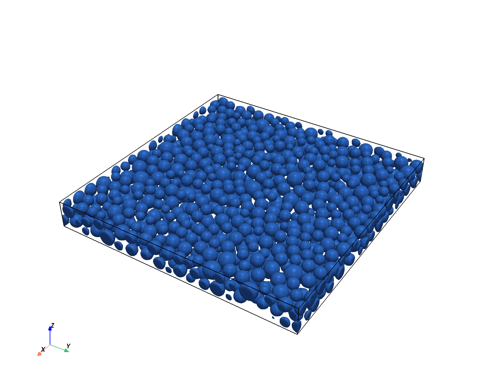
구조 — 105 × 105 µm, 두께 12 µm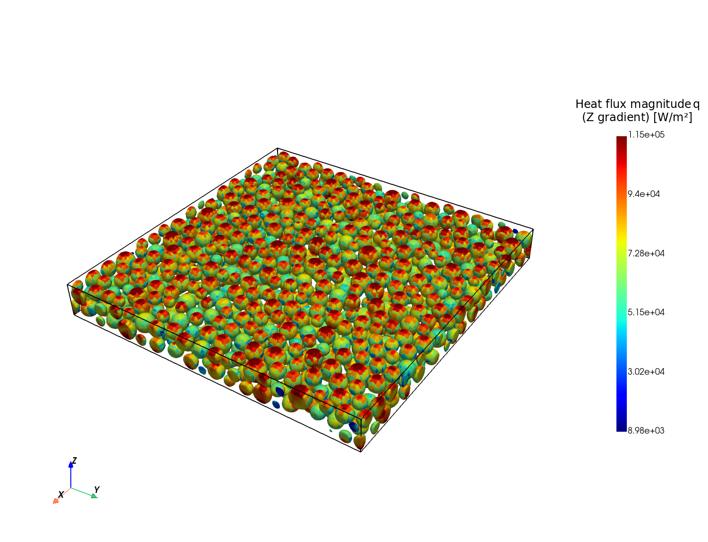
열유속 |q| (z 방향)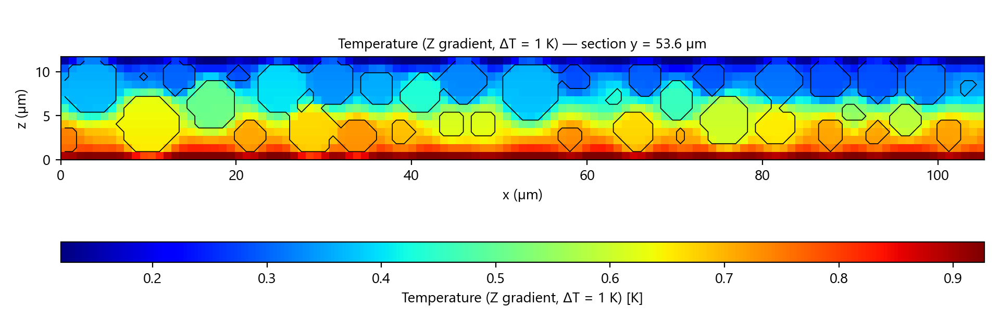
현재 설정으로 만들어질 격자, 복셀 크기, RVE(가로) 길이, 예상 입자 개수가 타일로 표시되고, 각 타일 아래에 그렇게 정해진 근거가 붙습니다 — 예를 들어 7 × the largest particle of 'Al₂O₃' (7.94 µm)는 크기 기준 가운데 가장 빡빡한 것이 "가장 큰 입자의 7배"였다는 뜻입니다. 그 아래 한 줄에 Estimated peak memory가 솔버별로 나옵니다.
해석을 시작하기 전에 위 기준들을 점검하여 통과·경고·실패 개수를 보여줍니다. 통과하지 못한 항목은 실제 값과 기준값이 함께 나열됩니다. 여기서 경고가 보이면 해석을 돌리기 전에 설정을 고치는 편이 시간을 아낍니다.
입자 배치는 난수로 만들어지므로, 같은 조건이라도 배치가 달라지면 결과가 조금씩 달라집니다. Realisations를 2 이상으로 두면 서로 다른 배치로 여러 번 계산하여 평균과 95 % 신뢰구간을 함께 보여줍니다.
신뢰구간이 넓다면 RVE가 작아 배치에 휘둘린다는 뜻입니다(6.4절). RVE를 키우거나 반복을 늘리십시오. Random seed를 고정하면 같은 배치를 다시 만들 수 있어 재현이 필요할 때 유용하며, 같은 seed의 구조는 런에 보관되어 다음 해석에 다시 쓰입니다(2.4절).
Enlarge the RVE when the criteria are not met를 켜 두면 기준을 만족하지 못할 때 프로그램이 RVE를 자동으로 키웁니다(박막에서는 가로 길이만). 편리하지만 계산 시간이 예상보다 늘어날 수 있으므로, 시간을 통제해야 할 때는 꺼 두고 직접 조정하십시오.
실수로 복셀 크기를 잘못 입력해 PC의 메모리를 모두 써 버리는 일을 막기 위해 격자에 상한이 걸려 있습니다. 물리적인 한계가 아니라 안전장치입니다.
v4의 기본 상한은 모든 해석에서 500 × 500 × 500 voxel입니다. 그 이상은 workstation에서 풀기 어려운 크기이고, 해석별 필요 메모리는 아래 추정값으로 알려 줍니다.
| 해석 | 기본 상한 | 500³에서의 부담 |
|---|---|---|
| 전도 (열·전기·유전·자기) | 500³ | 한 번에 하나의 장만 풀므로 가장 가볍습니다. |
| 유동 (투과도·흡음) | 500³ | Stokes 해석이 절점마다 네 개의 장을 다루므로 메모리를 많이 씁니다. |
| 탄성·열팽창 | 500³ | 하중 7개를 풀므로 가장 무겁습니다(12장). 이 크기에서는 수십 GB가 필요합니다. |
상한을 넘는 격자가 필요하면 먼저 voxel을 키워 맞추고, 그래도 넘으면 RVE를 줄이며 그 사실을 점검 항목에 남깁니다.
성능이 좋은 PC라면 상한 자체가 불필요할 수 있습니다. 서버를 실행할 때 0을 주면 해당 상한이 완전히 해제됩니다.
해제하면 화면의 Grid 타일에 no grid limit이라고 표시되며, 정확도 수준이 요구하는 격자가 그대로 사용됩니다.
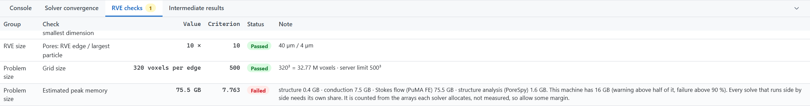
이 예에서 Stokes 유동이 가장 많은 메모리를 요구하며, 그림을 찍은 PC(RAM 16 GB)에서는 그 90 %를 넘어 실패로 표시됩니다. 실행을 막지는 않으며, 같은 해석이 512 GB 워크스테이션에서는 통과로 표시됩니다.
기본: 주기적 유한체적(FV) 한 번 계산 · 선택: NASA PuMA 주기적 유한요소(FE), 두 방법 비교
방열 소재에서 가장 많이 보는 항목입니다. 여기서는 k 하나만이 아니라 Result Viewer의 이 절에 나오는 모든 숫자를 하나씩 설명합니다.
시뮬레이션 값을 이해하려면 실험이 무엇을 재는지부터 맞춰두는 편이 빠릅니다. 실험실에서 열전도도를 얻는 방법은 크게 두 갈래입니다.
시료 양면에 온도차를 걸어 일정하게 흐르는 열량을 재고, 푸리에 법칙
로 역산합니다. 가드 핫플레이트(ASTM C177)나, TIM에서 흔히 쓰는 ASTM D5470이 여기에 속합니다. 이 방식의 어려움은 접촉열저항입니다. 측정기와 시료 사이의 미세한 틈이 만드는 저항이 시료 자체의 저항과 섞여 들어가므로, 두께를 바꿔가며 측정해 기울기에서 시료의 저항만 뽑아내는 절차를 씁니다.
실제 현장에서 더 흔한 쪽입니다. 시료 앞면을 순간적으로 가열하고 뒷면의 온도가 오르는 속도를 보아 열확산율 α를 먼저 얻습니다(ASTM E1461). 열전도도는 직접 재는 것이 아니라
로 계산해서 얻습니다. 즉 레이저 플래시로 k를 얻으려면 밀도 ρ와 비열 cp를 따로 알아야 합니다. 뒤에 나오는 Thermal diffusivity와 Volumetric heat capacity가 바로 이 관계에 대응하는 값들입니다.
실험에서 하는 일을 그대로 계산 안에서 재현합니다.
실험에서는 시료를 잘라 양면을 잡지만, 계산에서는 RVE의 마주보는 면을 서로 이어 붙입니다. 무한히 반복되는 재료의 한 조각을 보는 셈입니다. 이렇게 하면 잘린 단면이 만드는 인위적인 효과가 사라져, 작은 RVE로도 재료 내부의 값에 빨리 수렴합니다. PuMA 자체의 유한체적 계산은 두 면의 온도를 고정하는 방식이라 기본으로 쓰지 않습니다(Solver 선택지에만 있음).
같은 voxel 격자를 두 방법으로 풀 수 있습니다. 주기적 유한체적(FV)은 voxel마다 온도 하나를 두고, 이웃 voxel과 면으로 맞닿은 곳에서만 열이 오갑니다(두 전도도의 조화평균). NASA PuMA의 주기적 유한요소(FE)는 voxel 꼭짓점마다 온도를 두는데, 경계의 꼭짓점을 filler와 matrix가 함께 쓰므로 모서리·꼭짓점만 닿은 voxel 사이로도 열이 건너갑니다. 그래서 FE는 filler를 반 voxel쯤 키운 것처럼 좁은 틈과 접촉부를 쉽게 건너고, 격자가 거칠수록 높게 나옵니다.
어느 쪽이 맞는지는 정답이 있는 문제로 확인했습니다. 단순입방 배열(주기 셀에 구 하나)은 셀이 작아 입경당 256 voxel까지 풀 수 있고, 그 해상도에서 FE와 FV를 외삽하면 0.1 % 안에서 같은 값이 나옵니다. 이것을 기준값으로 보통 해상도의 오차를 쟀습니다.
| 단순입방 배열 | 기준값 | 셀당 24 voxel FE / FV | 64 voxel FE / FV | 128 voxel FE / FV |
|---|---|---|---|---|
| 45 %, 전도도 비 150, 틈 = 셀의 5 % | 3.90 | +6.4 % / −1.4 % | +4.0 % / +0.7 % | +2.8 % / +1.1 % |
| 45 %, 전도도 비 10, 같은 틈 | 2.681 | +1.9 % / −1.8 % | +1.2 % / −0.3 % | +0.8 % / +0.03 % |
| 59 %, 전도도 비 150, 입자가 겹쳐 목(neck)으로 연결 | 41.6 | +22 % / +14 % | +8.5 % / +5.1 % | +4.0 % / +2.3 % |
세 경우 모두 FV가 FE보다 2~3배 기준값에 가깝습니다. 무작위 50 vol% 구조(Al₂O₃/epoxy, 입경 16 voxel)에서는 차이가 더 커서, 같은 구조를 더 촘촘히 다시 그려 수렴시킨 값(약 0.86 W/m·K) 대비 FV +3.5 %, FE +130 %였습니다. 그래서 v4는 열전도·전기전도·유전율·투자율을 FV로 한 번만 풉니다. Simulation 탭의 Conduction에서 PuMA FE로 바꿀 수 있습니다.
Also solve with the other method and compare를 켜면 같은 문제를 다른 방법으로 한 번 더 풀어 함께 보여줍니다. 위 표처럼 두 값 사이에 참값이 있는 경우가 많으므로 이 차이가 이산화 오차의 크기입니다. 전도도 계열 계산 시간이 약 두 배가 되므로 기본은 꺼져 있습니다. 두 값이 5 % 넘게 벌어지면 점검 항목에 경고가 나오며, 대개 입자 사이 틈이나 접촉이 voxel 한두 개로만 그려진 경우입니다(5.5절).
입자 사이 틈이 격자에 다 그려지지 않아 격자에서 입자가 닿는 곳이 남으면, 해석이 끝난 뒤 같은 입자를 1.5배 촘촘한 격자에 다시 그려 첫 방향을 한 번 더 풉니다(입자 위치·크기·방향은 연속 좌표로 저장되어 있어 구조가 그대로입니다). 결과에는 두 격자의 값, 변화율, 그리고 오차가 voxel 크기에 비례한다고 보고 외삽한 값이 함께 나오고, 변화가 3 %를 넘으면 점검 항목에 경고가 뜹니다. FV는 빨라서 추가 시간은 대개 몇 초입니다.
| 예: Al₂O₃ 50 vol%, 입경 16 voxel | 64³ | 96³ (점검) | 외삽값 | 세 격자(64·128·192³)로 구한 수렴값 |
|---|---|---|---|---|
| 열전도도 (W/m·K) | 0.891 | 0.882 (−1.05 %) | 0.863 | 약 0.861 |
Simulation 탭의 Resolution check에서 항상 하거나(on) 끄도록(off) 바꿀 수 있습니다. network 상이 있는 구조는 다른 격자에 다시 그릴 수 없어 점검하지 않습니다.
PuMA가 쓰는 MINRES의 원래 정지 조건(‖r‖ / (‖A‖·‖x‖))은 격자가 커질수록 느슨해집니다. 50 vol% 구조에서 기본 허용오차로 64³은 +0.4 %, 128³은 +7.5 %, 192³은 +32 % 높은 값에서 멈췄습니다. v4는 격자와 단위에 무관한 상대 잔차 ‖r‖ / ‖b‖로 판정하고, 행렬 대각으로 나눈 전처리(Jacobi)로 반복 수를 줄였습니다(192³: 1418회 → 468회, 값은 같음). 셀프테스트가 두 격자에서 이것을 확인합니다(31장).
이 그림의 읽는 법은 25장에 자세히 있습니다. 요점만 적으면 — Wiener와 Hashin–Shtrikman은 물리적으로 넘을 수 없는 한계선이므로 계산값이 그 밖으로 나가면 오류입니다. Maxwell-Garnett이나 Bruggeman 같은 근사모델과의 차이는 오류가 아니라 미세구조의 영향입니다. 모델은 입자의 배향이나 접촉을 모르기 때문입니다.
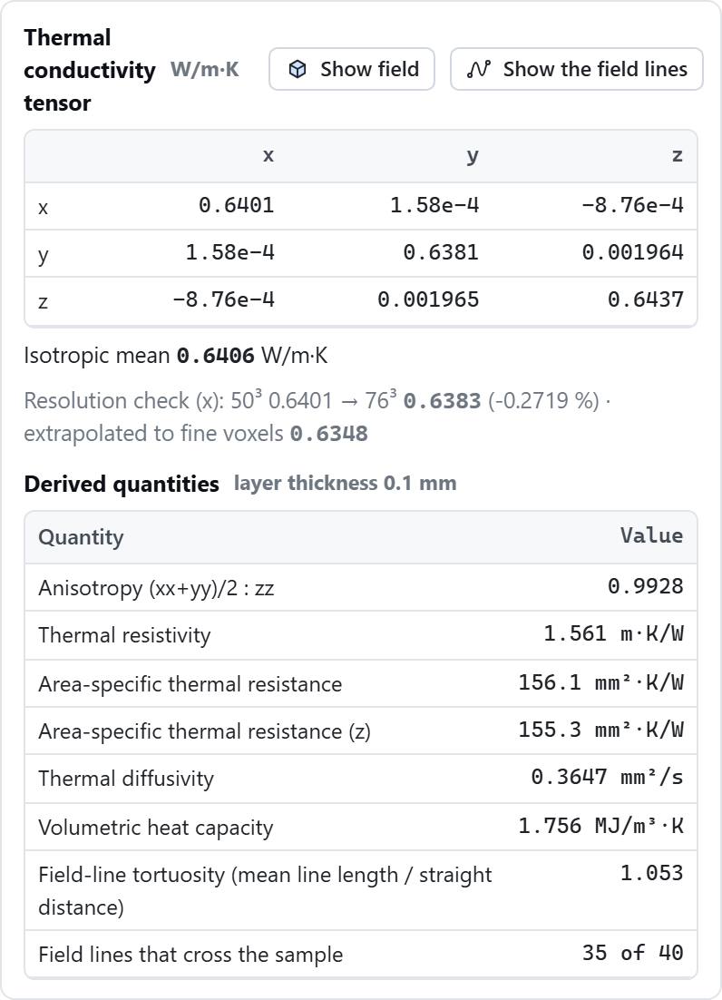
xx, yy, zz는 각각 x, y, z 방향으로 열을 흘렸을 때의 유효 열전도도입니다. 세 값이 비슷하면 등방성이고, 한 방향만 크면 그 방향으로 필러가 정렬되었거나 연결 경로가 생겼다는 뜻입니다. 아래의 Isotropic mean은 세 값의 평균으로, 실험에서 방향을 구분하지 않고 잰 값과 비교할 대상입니다.
열전도도의 역수입니다. 저항으로 생각하는 편이 편한 경우(직렬 적층 계산 등)에 씁니다.
TIM 규격에서 실제로 쓰는 값입니다. 두께 L인 층의 면적당 열저항으로
입니다. 화면 위쪽 Layer thickness에 넣은 두께가 그대로 쓰이므로, 두께를 바꾸면 이 값도 바뀝니다. ASTM D5470으로 얻는 값이 이것이며, 다만 실험값에는 접촉열저항이 포함되는 반면 여기 값은 재료 자체의 저항만입니다. 실험과 비교할 때 계산값이 더 작게 나오는 가장 흔한 이유가 이것입니다.
"열확산율"이라는 번역만으로는 와닿지 않는 값이므로 풀어 쓰면 — 열이 얼마나 빨리 퍼지는가를 나타냅니다. 정의는
이고, 프로그램은 앞에서 푼 k와, 각 상의 밀도·비열을 부피분율로 가중평균한 ρ·cp를 써서 계산합니다. 열전도도가 "정상상태에서 열을 얼마나 잘 통과시키는가"라면, 열확산율은 "온도 변화가 얼마나 빨리 전달되는가"입니다. 열을 잘 통과시켜도(k 큼) 열을 많이 담아두면(ρcp 큼) 온도 변화는 느리게 퍼집니다. 레이저 플래시로 측정한 α와 직접 비교할 수 있는 값입니다.
ρ·cp입니다. 위 관계식의 분모이며, 단위 부피가 1 K 오르는 데 필요한 열량입니다.
면내 평균과 두께방향의 비입니다. 1보다 크면 면내로 더 잘 흐릅니다. 판상 필러(h-BN, 그래파이트)를 넣으면 이 값이 크게 올라가며, 두께방향 방열이 목적이라면 오히려 불리합니다.
열유속의 유선을 실제로 그려 본 결과입니다. 시료를 관통한 유선의 평균 길이를 직선거리로 나눈 값이 굴곡도이며, 1에 가까울수록 곧게 흐릅니다. 관통한 개수가 적다면 열이 특정 통로로만 몰린다는 뜻입니다.
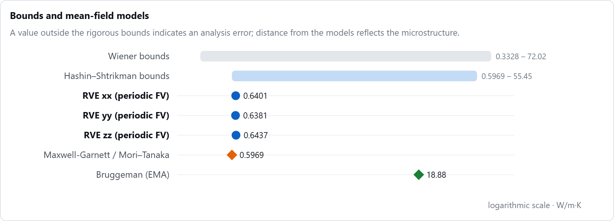
| 가정 | 실제와 다를 수 있는 지점 |
|---|---|
| 계면이 완전히 붙어 있다 (기본값) | Rint, Rc를 넣지 않으면 filler와 matrix 사이 열저항(Kapitza)을 0으로 둡니다. 실제로는 계면에서 온도가 튀며, filler가 작을수록 영향이 큽니다 — 7.6절처럼 phase마다 넣어 반영하십시오. |
| 물성이 온도에 무관하다 | 상온 물성으로 계산합니다. 고온에서 k가 변하는 재료라면 그 온도의 물성을 직접 넣어야 합니다. |
| 정상상태 | 시간에 따른 변화는 풀지 않습니다. 과도 응답은 α로 판단합니다. |
| 구조가 주기적으로 반복된다 | 실제 시료의 표면 근처는 다를 수 있습니다. 벌크 물성을 보는 관점입니다. |
| 복셀로 형상을 근사한다 | 곡면이 계단으로 표현됩니다. 가장 얇은 부분을 가로지르는 복셀이 6개 미만이면 Verification에서 경고가 뜹니다. |
filler와 matrix 사이, 그리고 맞닿은 두 filler 사이에는 phonon이 계면을 건너며 생기는 저항이 있습니다 (Kapitza resistance, m²K/W). 입력은 Structure 탭의 phase 편집기에서 합니다(5장 7절).
| 항목 | 의미 | 전형적인 값 |
|---|---|---|
| Rint filler–matrix | filler(또는 그 shell) 표면 전체 | 10⁻⁹~10⁻⁷ m²K/W (boundary conductance 10⁹~10⁷ W/m²K) |
| Rc filler–filler | 두 입자가 맞닿은 면 — 서로 다른 필러 사이는 쌍마다 따로(5.7절) | 계면보다 크게 잡는 경우가 많습니다(점 접촉, 표면 산화막) |
값을 모를 때는 Calibration 탭(30장)이 음향·확산 불일치 이론으로 완벽한 계면의 Rint(하한)를 보여 주고, 측정한 열전도도에서 Rint를 거꾸로 찾습니다.
저항은 voxel 면에 직접 들어갑니다. 서로 다른 재료 a, b가 만나는 면의 conductance는 1/k면 = 1/(2ka) + 1/(2kb) + R/h이고(h는 voxel 크기), 맞닿은 입자 면에는 Rc/h가 더해집니다. 면이 있어야 하므로 저항이 하나라도 있으면 열전도 해석은 내장 periodic finite-volume solver로 풀립니다(Result Viewer의 Solver record에 fv-interface로 표시). 격자의 계단 표면은 실제 표면보다 넓으므로(구는 약 1.5배) R에 실제/격자 면적비를 곱해 전체 계면 conductance Atrue/R을 맞춥니다. 계면에서 소모되는 열 에너지 비율은 Result Viewer의 energy share에 따로 나옵니다.
묽은 구 분산(지름 20 voxel, 3.8 vol%, kp/km = 20)을 Hasselman–Johnson 해석해와 비교했습니다. Biot 수 α = Rintkm/a = 0, 0.5, 2 모두에서 0.26 % 이내로 일치합니다(면적 보정비 1.51 — 구의 이론값 1.5). 맞닿은 면의 Rc는 직렬 법칙과 수치 오차 수준으로 같습니다. 두 검증은 셀프테스트에 들어 있습니다(31장).
예제 A(에폭시 + AlN 40 vol%, RVE 20 µm, z 방향 온도차 1 K)의 결과입니다. 열전도도 해석은 방향마다 온도장 T와 열유속 q를 남기며, 3D·2D 화면과 보고서 그림은 첫 방향(z)의 것입니다.
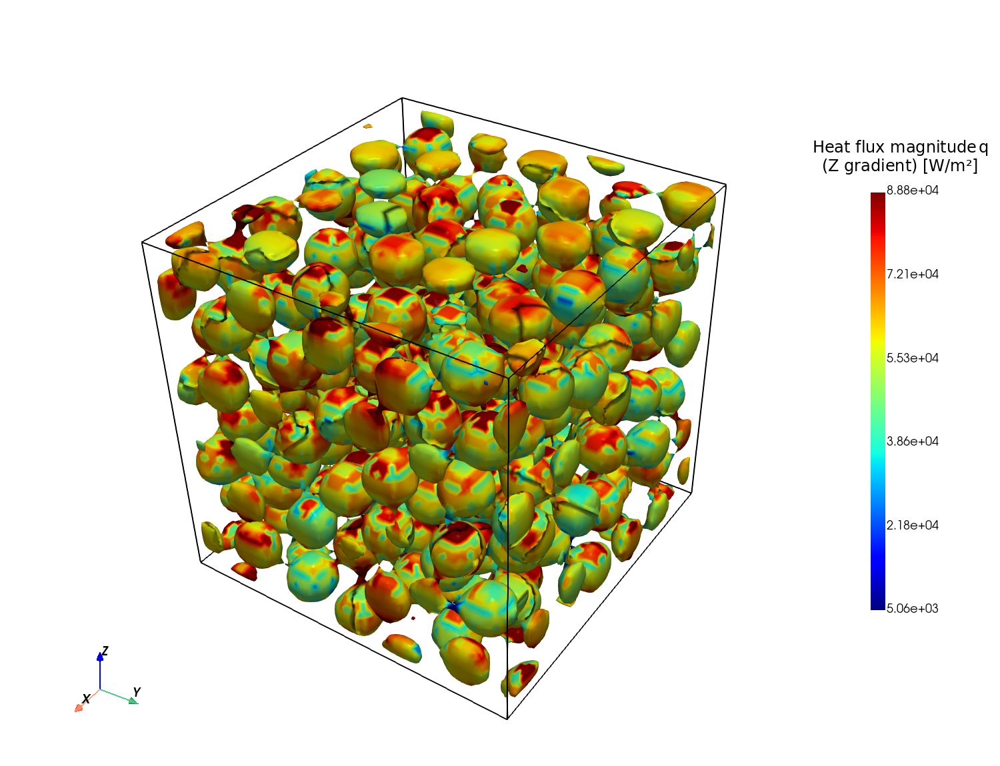
열유속 크기 |q| — 입자 표면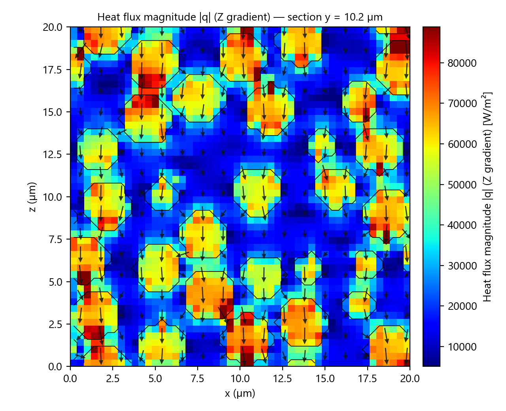
|q| 단면(y = 10 µm)과 화살표| 보이는 것 | 뜻 | 해석 |
|---|---|---|
| 입자 속 |q|가 평균의 2–3배(주황·빨강) | 열이 전도도가 높은 AlN으로 몰립니다. | 필러가 열을 얼마나 끌어모으는지가 보입니다. 필러 속 |q|가 기지와 비슷하면 필러가 거의 일하지 않는 것입니다. |
| 입자 사이 좁은 틈·접점의 빨간 점 | 두 입자 사이를 건너는 열이 짧은 기지 다리에 집중됩니다. | 전도 경로의 병목입니다. 이 자리가 k를 좌우하므로 계면 열저항 Rc·Rint에 민감합니다(7.6절). 빨간 점이 많을수록 접촉 저항을 넣었을 때 k가 크게 떨어집니다. |
| 기지 영역(파랑) | 열이 기지를 통과하는 부분. | 입자가 흐름 방향(z)으로 줄지어 있지 않은 곳은 기지가 열을 날라야 하므로 느립니다. |
| 화살표 | 면 안의 열 흐름 방향(뜨거운 위 → 차가운 아래). | 입자 쪽으로 꺾여 들어가는 화살표가 "입자가 열을 끌어당기는" 모습입니다. 길이는 크기의 제곱근을 따릅니다(26.2절). |
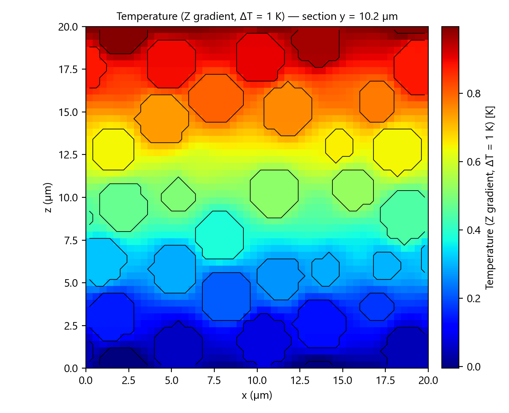
온도 단면(y = 10 µm)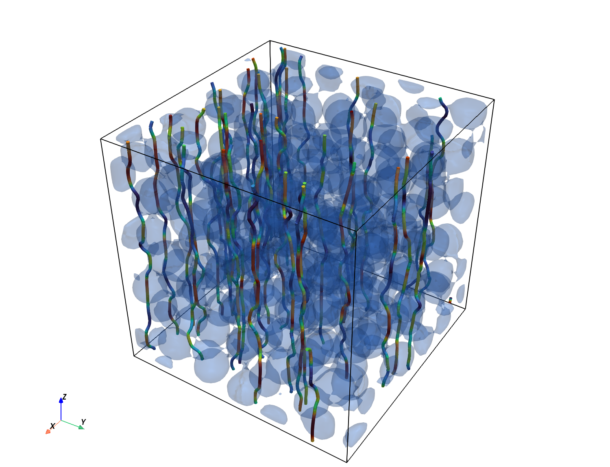
열유선(field lines) — 입자는 반투명기본: 주기적 유한체적(FV) · 선택: NASA PuMA 주기적 유한요소 — 열전도와 같은 방정식, 물성만 다릅니다
수학적으로는 열전도와 완전히 같은 문제입니다. 그런데 실제로는 전혀 다르게 행동합니다. 이유는 하나 — 물성 대비가 압도적으로 크기 때문입니다.
에폭시와 AlN의 열전도도 차이는 약 750배입니다. 큰 차이지만, 열은 기지를 통해서도 흐르므로 필러가 이어지지 않아도 어느 정도 성능이 나옵니다.
전기는 다릅니다. 에폭시(10⁻¹⁵ S/m)와 은(10⁷ S/m)의 차이는 10²² 배입니다. 이 정도면 기지를 통한 전도는 사실상 없습니다. 따라서
| 방법 | 내용 |
|---|---|
| 4점 프로브 | 네 개의 탐침을 일렬로 대고 바깥 두 개로 전류를, 안쪽 두 개로 전압을 잽니다. 접촉저항을 제거할 수 있어 표준적으로 쓰입니다. |
| 2단자 측정 | 시편 양 끝에 전극을 붙여 저항을 잽니다. 간단하지만 접촉저항이 섞입니다. 고저항 시료에는 충분합니다. |
| 면저항 (Ω/sq) | 필름에서는 두께로 나누지 않은 면저항을 그대로 씁니다. |
계산은 시편 양면에 1 V를 걸고 흐르는 전류를 구하는 것과 같으므로, 4점 프로브로 얻는 체적 전도도에 대응하는 값입니다.
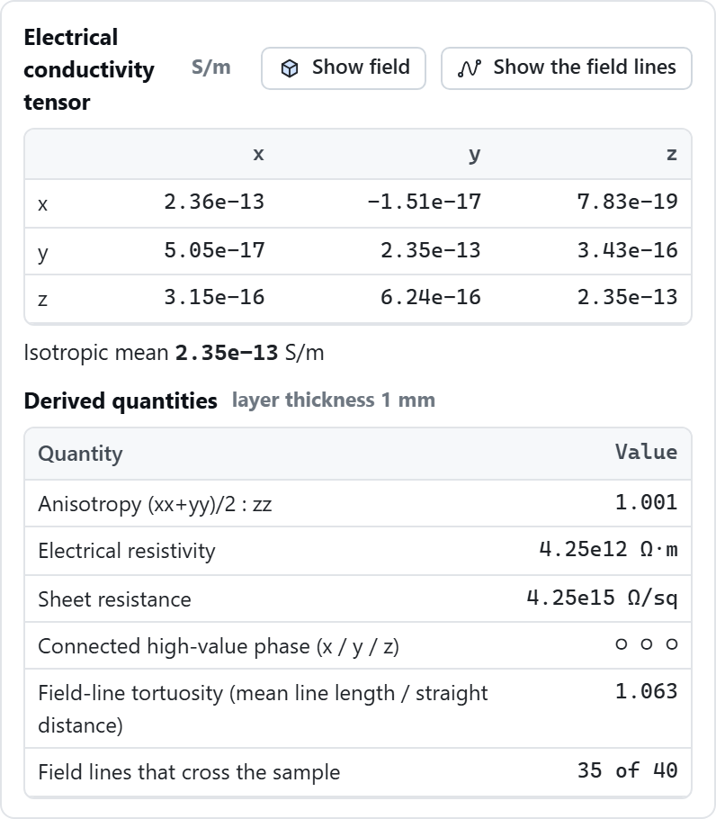
| 항목 | 의미와 활용 |
|---|---|
| σ tensor (S/m) | 유효 전기전도도. |
| Resistivity (Ω·m) | 비저항. σ의 역수입니다. |
| Sheet resistance (Ω/sq) | 지정한 층 두께에서의 면저항. 도전 필름·차폐 필름의 규격값입니다. |
| Connected high-value phase (x / y / z) | 이 줄이 가장 중요합니다. ● 이면 전도성 상이 그 방향으로 이어져 있고, ○ 이면 끊겨 있습니다. |
예시 C는 카보닐 철을 30 vol%나 넣었는데도 σ = 2.4×10⁻¹³ S/m — 사실상 절연체로 나왔습니다. 필러를 그만큼 넣고도 전기가 통하지 않은 것입니다.
이유는 입자가 서로 닿지 않았기 때문입니다. 구를 서로 떨어뜨려 채우면 30 vol% 정도로는 연결망이 생기지 않습니다. Percolation 점검에서도 "연결된 방향 0개"로 보고됩니다. 같은 철을 35 vol% 넣고 입자가 서로 닿도록 만든 예시 C2는 σ = 3.2×10⁵ S/m로, 18자리가 넘게 달라집니다.
| 방법 | 설정 | 실물에서의 대응 |
|---|---|---|
| 겹침 허용 | Structure 탭의 Overlap permitted | 입자가 서로 붙은 응집 상태, 소결, 가압 |
| 함량 올리기 | Content 증가 | 필러 증량 — 다만 점도가 올라 공정이 어려워집니다 |
| 고종횡비 필러 | Cylinder / Spherocylinder, CNT·섬유 | 적은 함량으로도 연결망이 생깁니다. 퍼콜레이션 임계값이 크게 낮아집니다. |
| 판상 필러 | Spheroid, c/a < 1 (플레이크) | 은 플레이크 페이스트 |
표시 물리량에서 Current density |J|를 고르면 전류가 실제로 지나간 길이 보입니다. 값의 범위가 매우 넓으므로 Log를 켜야 구조가 드러납니다.
연결된 경우, 전류는 입자가 맞닿은 좁은 목에 집중됩니다. 이 지점이 실제 소자에서 발열과 열화가 시작되는 곳이므로, 최댓값과 그 위치를 함께 보는 것이 의미가 있습니다.
| 가정 | 실제와 다를 수 있는 지점 |
|---|---|
| 접촉저항이 없다 | 입자끼리 닿기만 하면 완전히 통한다고 봅니다. 실제로는 접촉면의 산화막·계면저항이 크며, 계산값이 실험값보다 높게 나오는 주된 원인입니다. |
| 터널링이 없다 | 아주 가까이 있지만 닿지 않은 입자 사이로 전자가 넘어가는 현상(수 nm 규모)은 모사하지 않습니다. CNT 복합재에서는 이 효과가 실제로 전도를 만들어내므로, 계산이 과소평가할 수 있습니다. |
| 복셀 격자의 연결 | 입자 사이 틈이 voxel 하나보다 좁으면 격자 위에서는 닿은 것으로 그려집니다. 기본 배치는 함량이 허락하는 한 입자를 떼어 두고(5장 5절), 기본 계산(FV)은 면으로 닿은 곳으로만 전류를 흘립니다. 접촉이 있는 구조는 해상도에 민감하므로 해상도 점검 결과를 함께 보십시오 — 예시 C2는 1.5배 촘촘한 격자에서 σ가 16 % 달라졌습니다. |
| 직류(DC) | 주파수 의존성은 다루지 않습니다. 고주파 거동은 유전율·EMI 해석에서 봅니다. |
정리하면, 이 해석은 "연결되었는가, 연결되었다면 대략 어느 수준인가"를 판단하는 데 쓰는 것이 맞습니다. 절대값을 그대로 쓰기보다는 퍼콜레이션 여부와 조건 간 비교에 활용하십시오.
전기전도도 해석은 전위 V와 전류밀도 J를 남깁니다. 도전성 필러에서는 이 그림이 퍼콜레이션을 그대로 보여 줍니다. 아래는 에폭시 + 카보닐 철 두 예제를 같은 로그 색 척도로 그린 것입니다.
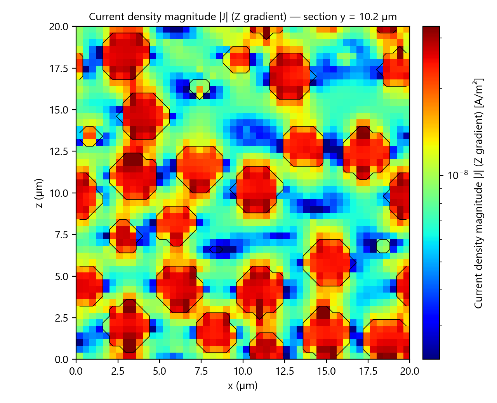
예제 C (30 vol%, 입자 분리) — σ ≈ 2 × 10⁻¹³ S/m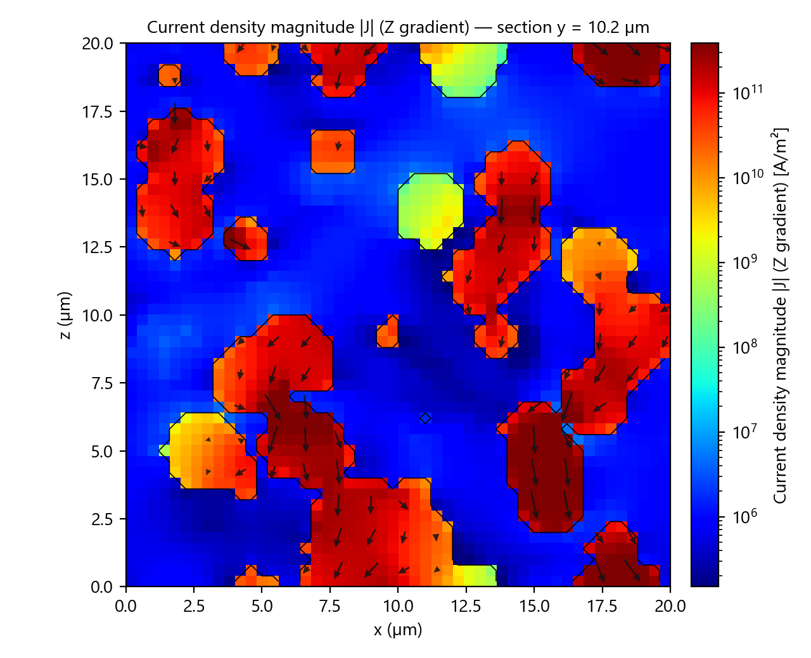
예제 C2 (35 vol%, 접촉 허용) — σ ≈ 3 × 10⁵ S/m| 보이는 것 | 뜻 |
|---|---|
| C: 모든 입자가 비슷하게 낮은 J(10⁻⁸ A/m² 수준) | 입자는 서로 떨어져 있고 전류가 기지를 건너야 합니다. 결과는 절연체인 기지가 정합니다. |
| C2: 빨간 입자 무리(10¹¹ A/m²)와 파란 입자 | 빨간 무리가 윗면에서 아랫면까지 이어진 도전 경로(spanning cluster)이고, 파란 입자는 그 경로에 붙지 않은 고립 입자입니다. 전류는 오직 빨간 경로로 흐릅니다. |
| C2의 화살표 | 경로를 따라 흐르는 전류 방향. 좁은 접점에서 방향이 꺾입니다. |
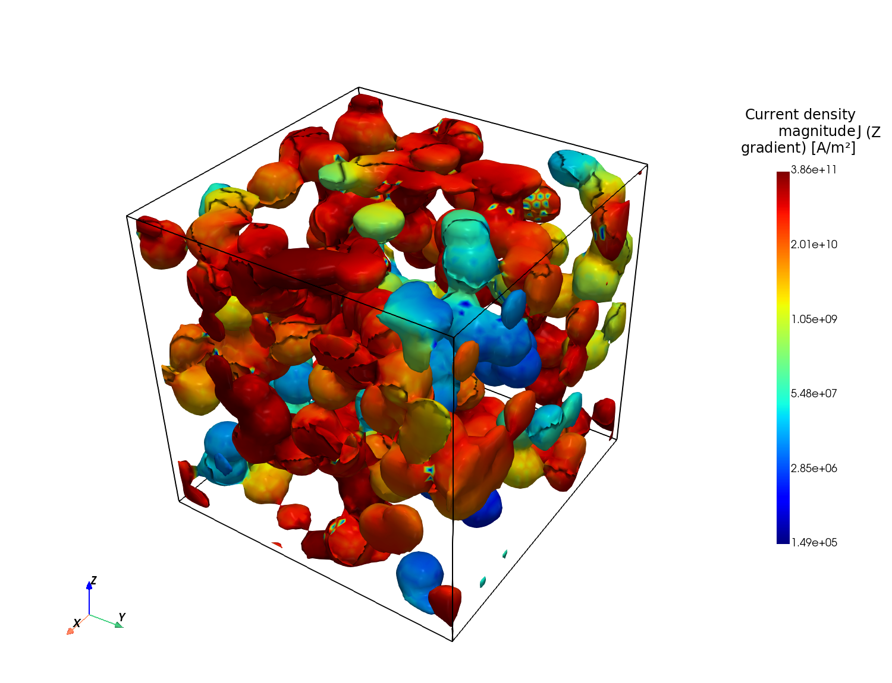
기본: 주기적 유한체적(FV) · 선택: NASA PuMA 주기적 유한요소 — 열전도와 같은 방정식, 물성만 유전율로 바뀝니다
이 재료를 절연층으로 썼을 때 신호가 얼마나 느려지고 얼마나 손실되는지를 결정하는 값입니다. 반도체 패키지 기판, 안테나 기판, 커패시터 설계의 기본 물성입니다.
| Dk가 하는 일 | Df가 하는 일 |
|---|---|
| 신호의 전파 속도를 정합니다. 지연은 √Dk에 비례하므로, Dk가 높으면 신호가 느려집니다. 고속 기판이 낮은 Dk를 찾는 이유입니다. | 신호가 열로 사라지는 비율입니다. 삽입손실은 대략 Df·√Dk·f 에 비례하므로, 주파수가 높을수록 Df가 결정적입니다. |
| 커패시터에서는 반대로 높을수록 좋습니다. 같은 넓이에서 용량이 커집니다. | 커패시터에서도 낮아야 합니다. 발열과 효율 손실이 됩니다. |
| 방법 | 내용 |
|---|---|
| 평행판 커패시터법 (ASTM D150) |
가장 기본입니다. 시편을 두 전극 사이에 끼워 커패시터를 만들고 LCR 미터·임피던스 분석기로 용량 C와 손실 tanδ를 잽니다. 진공일 때의 용량과 비교한 비가 곧 Dk입니다. 이 계산이 그대로 흉내 내는 실험입니다. |
| 유전 분광법 (BDS) |
주파수를 넓게 훑으며 Dk와 Df의 변화를 봅니다. 완화(relaxation) 거동을 보는 데 씁니다. |
| 공진기법 (SPDR, 공동공진) |
GHz 대역에서 씁니다. 공진 주파수와 Q값의 변화로 구하며, 고주파에서 가장 정확합니다. |
7장의 열전도와 완전히 같은 방식입니다. 온도 대신 전위를, 열전도도 대신 유전율을 넣습니다.
복합재의 손실은 각 상의 tanδ를 부피로 평균한 값이 아닙니다. 손실은 전기장의 에너지가 실제로 어디에 들어 있느냐에 따라 정해집니다. 유전율이 높은 상에는 전기장이 덜 들어가므로, 그 상의 손실은 부피 비율보다 적게 반영됩니다.
그래서 화면에는 Dissipation factor Df (energy-weighted) — 즉 에너지로 가중한 손실이라고 명시되어 있습니다. 계산된 장(field)이 각 상에 들어간 전기장 에너지를 정확히 알려주기 때문에 가능한 계산입니다.
예시 A의 5.426을 그림에서 확인해 보면,
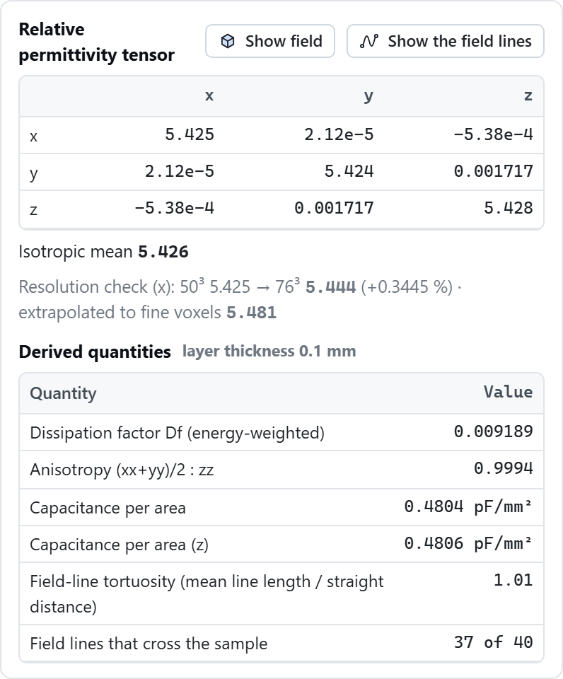
| 화면의 항목 | 예시 A의 값 | 의미와 활용 |
|---|---|---|
| Relative permittivity tensor | xx 5.425 / yy 5.424 / zz 5.428 | 방향별 비유전율. 세 값이 거의 같으므로 등방성입니다. 대각선 밖의 값(0.002 이하)은 0에 가까워야 정상이며, 크게 나오면 구조가 기울어져 있다는 뜻입니다. |
| Isotropic mean | 5.426 | 한 숫자로 보고할 때 쓰는 값. 데이터시트의 Dk에 해당합니다. |
| Resolution check | 50³ 5.425 → 76³ 5.444 (+0.34 %) 외삽 5.481 |
같은 구조를 1.5배 촘촘한 격자에 다시 그려 푼 값(7장 2절). 이 예시는 입자가 격자에서 닿는 곳이 있어 자동으로 실행되었습니다. 변화가 0.3 %로 작아 해상도는 충분합니다. |
| Dissipation factor Df (energy-weighted) | 0.009189 | 유전손실 tanδ. 에너지로 가중한 값입니다. 0.009는 범용 에폭시 복합재 수준이며, 고속 기판용 저손실 재료는 0.002 이하를 목표로 합니다. |
| Anisotropy (xx+yy)/2 : zz | 0.999 | 면내와 두께방향의 비. 1이면 등방입니다. 적층·배향 구조에서는 이 값이 1에서 멀어집니다. |
| Capacitance per area | 0.4804 pF/mm² | 바로 설계에 쓰는 값입니다. 함께 표시된 layer thickness(예시에서는 0.1 mm)에서의 단위면적당 용량입니다. 두께를 바꾸면 반비례해 변합니다. |
| Field-line tortuosity | 1.010 | 전기력선이 얼마나 돌아가는지. 1.010은 거의 직선이라는 뜻입니다. 에폭시(약 3.5)와 AlN(약 8.8)의 대비가 크지 않아 전기장이 굳이 피해 갈 이유가 없기 때문입니다. 10장의 자성 예시(1.243)와 비교해 보십시오. |
| Field lines that cross | 37 of 40 | 그린 역선 중 반대편까지 도달한 개수. 대부분이 관통했다는 것은 장이 고르게 퍼져 있다는 신호입니다. |
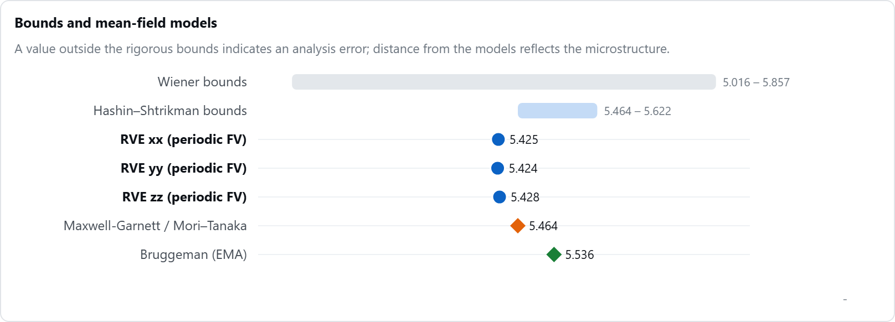
HS 하한 아래로 조금 내려간 것은 이 예시가 입경 3 µm에 voxel 0.4 µm(입경당 7.5 voxel, Fast 품질)인 거친 격자이기 때문입니다. FV는 거친 격자에서 값을 약간 낮게 잡는 경향이 있고(7장 2절의 표), 해상도 점검의 외삽값 5.481은 경계 안으로 들어옵니다. 프로그램은 Wiener 경계를 벗어나면 실패로, HS 경계를 1 % 넘게 벗어나면 경고로 기록하며, 그 이내의 이탈은 유한한 voxel RVE에서 생길 수 있는 차이로 보고 통과시킵니다. 보고용 값이 필요하면 Standard 이상의 품질로 다시 푸십시오.
| 가정 | 실제와 다를 수 있는 지점 |
|---|---|
| 준정적(quasi-static) | 전자파가 파동으로 전파하는 것이 아니라 정전기장처럼 계산합니다. 파장이 RVE보다 훨씬 길 때만 타당합니다. 수십 GHz 이상에서는 맞지 않습니다. |
| 물성이 주파수에 무관 | 완화(Debye) 거동이 없습니다. 입력한 값 그대로 한 점에서 계산합니다. |
| 계면 분극(Maxwell–Wagner) 없음 | 서로 다른 상의 경계에 전하가 쌓여 저주파에서 Dk를 크게 올리는 현상은 모사하지 않습니다. 실측 저주파 Dk가 계산보다 높게 나오는 흔한 원인입니다. |
| 전도에 의한 손실 없음 | Df는 각 상의 유전손실만 반영합니다. 누설 전류로 인한 손실은 별개입니다. |
| 계면이 완전함 | 필러와 수지 사이의 공극이나 계면층(interphase)이 없다고 봅니다. 실제로는 이 층이 Dk와 Df를 모두 바꿉니다. |
유전율 해석은 전위 φ와 국부 전기장 증폭 |E|/E₀를 남깁니다. 1보다 크면 그 자리의 전기장이 평균보다 강하다는 뜻입니다. 아래는 예제 A(에폭시 + AlN 40 vol%, z 방향 전기장)입니다.
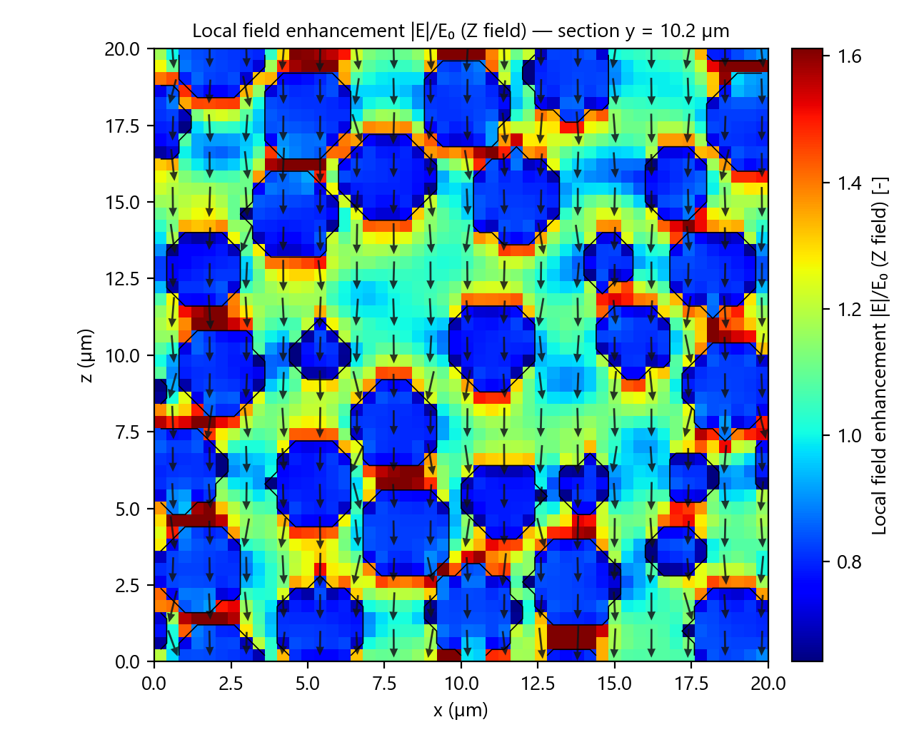
|E|/E₀ 단면(y = 10 µm)과 화살표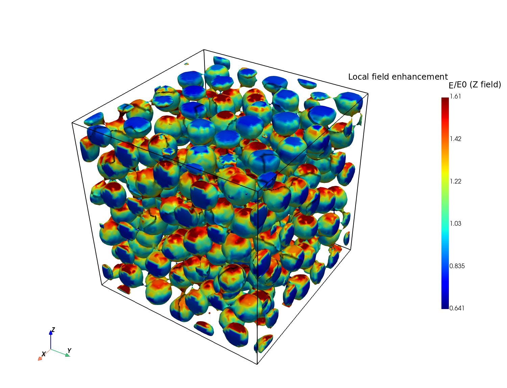
|E|/E₀ — 입자 표면(유전율이 낮은 쪽)| 보이는 것 | 뜻 | 해석 |
|---|---|---|
| 입자 안 |E|/E₀ ≈ 0.7 (파랑) | 유전율이 높은 AlN 안에서는 전기장이 약해집니다. | 경계에서 D = εE의 수직 성분이 이어지므로, ε가 큰 쪽은 E가 작아집니다. |
| 입자 위·아래 기지의 빨간 띠(최대 1.6배) | 전기장 방향(z)으로 마주 보는 입자 사이 틈에 전기장이 몰립니다. | 절연 파괴·부분 방전이 먼저 시작될 자리입니다. 틈이 좁을수록 증폭이 커지므로, 입자가 전기장 방향으로 가깝게 늘어선 구조는 유전율은 높지만 절연 내력에는 불리합니다. |
| 3D 표면의 극(위·아래) 부분이 빨강 | 입자를 둘러싼 기지 쪽 값을 칠했기 때문입니다(26.2절). | 입자 옆면(적도)은 파랑 — 전기장 방향에 나란한 쪽은 오히려 약해집니다. |
사용 오픈소스: scikit-rf 전송선 이론 — 앞서 구한 σ, εr, μr를 조합합니다
이 재료로 만든 판이 전자파를 몇 dB나 막아 주는지를 구합니다. 주의할 점이 하나 있습니다 — 이것은 별도의 전자기 해석이 아닙니다. 8·9·10장에서 구한 세 가지 물성을 가지고 판 하나의 차폐 성능을 환산한 것입니다.
| 방법 | 내용 |
|---|---|
| 동축 전송선법 (ASTM D4935) |
가장 표준적입니다. 원판 시편을 동축 치구에 끼우고 네트워크 분석기로 통과한 신호(S21)를 잽니다. SE = −20·log₁₀|S21| (dB). 시편이 작아도 되어 널리 쓰입니다. |
| 차폐실법 | 실제 함체에 재료를 붙이고 안팎의 전계 세기를 비교합니다. 실제 사용 조건에 가깝지만 시편이 커야 합니다. |
| 자유공간법 | 혼 안테나 사이에 시편을 두고 잽니다. 고주파(GHz)에 적합합니다. |
| 기구 | 원리 | 커지는 조건 |
|---|---|---|
| 반사 (R) | 재료와 공기의 임피던스가 다르면 표면에서 튕겨 나갑니다. 안으로 들어가지도 못합니다. | 전도도가 높을수록. 저주파에서 지배적입니다. |
| 흡수 (A) | 안으로 들어간 파가 열로 바뀌며 줄어듭니다. | 두꺼울수록, 그리고 σ·μ가 클수록. 고주파에서 지배적입니다. |
| 다중 반사 (M) | 안에서 앞뒤로 튕기며 일부가 되돌아 나옵니다. 음수(차폐를 깎는 항)가 될 수 있습니다. | 얇을 때만 의미가 있습니다. 두꺼우면 사라집니다. |
계산은 두 단계입니다. 먼저 미세구조(RVE)를 풀어 복합재의 유효 물성을 구하고, 그 물성을 가진 두께 t의 판에 평면파가 수직으로 들어올 때의 투과·반사를 정확한 식(전송선, Schelkunoff)으로 구합니다. v4에서는 첫 단계가 주파수마다 따로 이루어집니다.
정적 방식(v3까지, Method에서 선택 가능)은 직류 σ와 정적 ε를 따로 풀어 합쳤습니다. 그 방식은 두 전류가 서로 섞이는 효과를 놓칩니다.
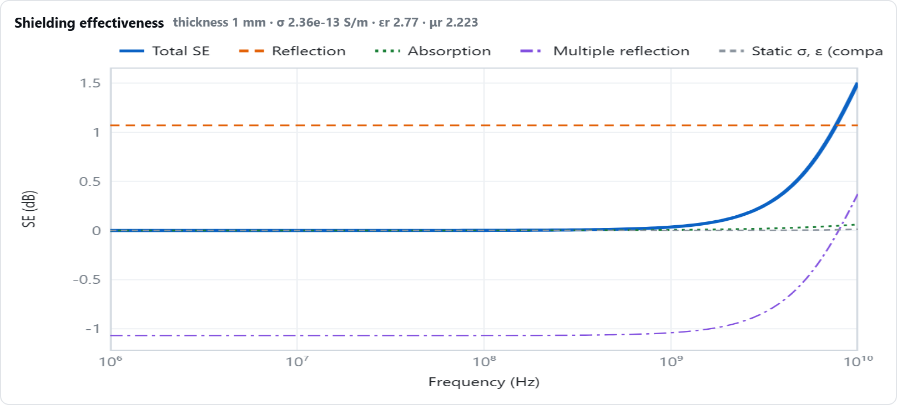
차폐 성능 — 회색 점선이 이전 정적 방식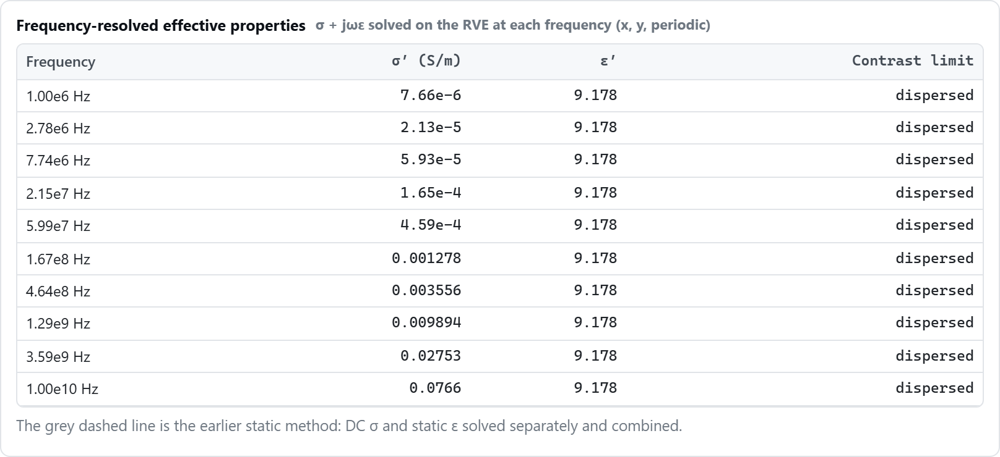
주파수별 유효 σ′, ε′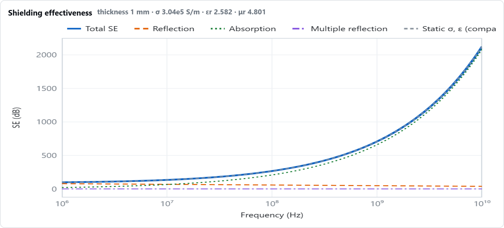
| 항목 | 의미와 활용 |
|---|---|
| SE total (dB) | 전체 차폐 성능. 20 dB = 99 % 차단, 30 dB = 99.9 %, 40 dB = 99.99 %입니다. 상용 차폐재의 실용 목표는 보통 30~60 dB입니다. |
| SE reflection (R) | 반사로 막은 몫. |
| SE absorption (A) | 흡수로 막은 몫. 두께에 비례해 커집니다. |
| Skin depth δ | 파가 표면에서 1/e로 줄어드는 깊이. 판 두께가 δ의 3배 이상이면 흡수로 충분히 막힙니다. 주파수가 오르면 δ는 급격히 작아집니다. |
| Impedance ratio | 재료와 공기의 임피던스 비. 차이가 클수록 반사가 큽니다. |
예시 C2는 1 MHz에서 99 dB가 나왔습니다. 같은 필러를 30 vol%만 넣고 입자를 서로 떨어뜨린 예시 C에서는 0 dB였습니다. 함량 차이는 5 vol%뿐인데 결과가 완전히 갈린 이유는 하나입니다 — C2는 필러가 이어졌고 C는 끊겼습니다. 차폐재 설계에서 연결성이 함량보다 중요하다는 것을 보여주는 예입니다. 다만 C2의 σ는 입자 접촉이 격자에 어떻게 그려지느냐에 민감해서(해상도 점검에서 16 % 변화, 방향 편차 46 %), dB 값도 그만큼 흔들린다고 보아야 합니다.
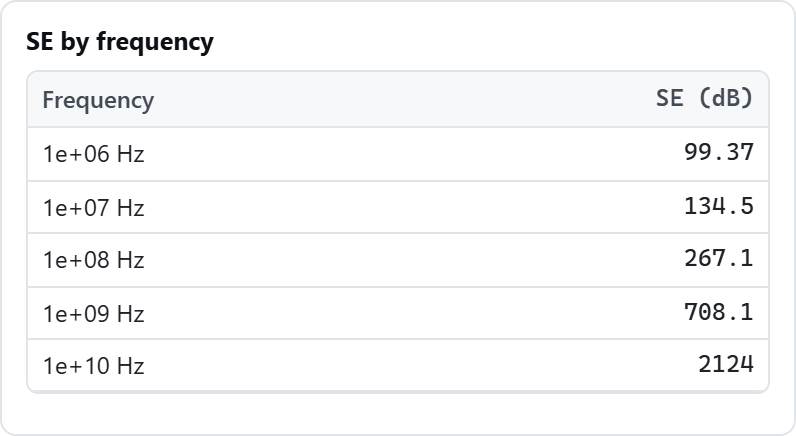
| 가정 | 실제와 다를 수 있는 지점 |
|---|---|
| 재료 자체의 물성은 주파수에 무관 | 복합재가 구조 때문에 갖는 주파수 의존성(계면 분극, 금속 입자의 도체 거동)은 11.3의 주파수별 해석이 담습니다. 그러나 각 재료 자체의 분산 — 자성 필러의 투자율이 수백 MHz 이상에서 급격히 떨어지는 현상(Snoek 한계), 유전체의 εr(f) — 은 라이브러리 값이 하나뿐이라 들어가지 않습니다. 자성 필러의 GHz 대역 값은 과대평가입니다. |
| 준정적 근사 | RVE가 파장보다 훨씬 작고, 도전성 입자가 자신의 표피 깊이보다 얇다고 봅니다. 입자 안의 와전류는 계산하지 않습니다. 결과 화면의 Validity가 이 조건이 깨지는 주파수를 알려 줍니다 — 예시 C2의 카보닐 철(σ 107 S/m, μr 50)은 수백 MHz부터 표피 깊이가 입자보다 작아집니다. |
| 무한히 넓은 평판 | 가장자리 효과, 곡면, 구멍과 이음새가 없습니다. 실제 차폐 실패의 대부분이 여기서 생깁니다. |
| 평면파·수직 입사 | 멀리서 오는 평면파를 전제합니다. 근거리 전자계(안테나 바로 옆 등)에서는 다르게 거동합니다. |
정리하면, 이 결과는 재료 후보를 비교하고 수준을 가늠하는 용도입니다. 규격 인증값을 대신할 수는 없으며, 최종 판단은 ASTM D4935 측정으로 하십시오.
Full-wave check with openEMS를 켜면, RVE 자체를 판으로 놓고 Maxwell 방정식을 시간 영역에서 복셀 그대로 풉니다(openEMS, FDTD). 균질화를 전혀 거치지 않은 이 결과를, 같은 판을 균질화해 구한 차폐와 10–100 GHz에서 비교합니다. openEMS는 오프라인 설치에 함께 들어 있으며(tools\openEMS), 한 번에 수 분이 걸려 기본으로는 꺼져 있습니다.
| 설정 | 내용 |
|---|---|
| 해석 영역 | RVE 가로 크기의 단위 셀. x면은 완전 도체(PEC), y면은 완전 자기 도체(PMC) 벽 — 수직 입사 평면파(E가 x 방향)의 대칭면입니다. 비교용 균질화 값도 같은 벽 조건으로 풉니다(주기 조건과 조금 다를 수 있음). |
| 격자 | 판 안은 복셀 하나 = FDTD 격자 하나. 판 밖은 1.3배씩 커지는 격자, 양 끝은 Mur 흡수 경계. |
| 추출 | 판 앞뒤의 전압 프로브, 판이 없는 기준 계산과의 비로 S21(차폐)과 S11(반사). |
| 구조 (판 두께 20 µm) | 최대 차이 (10–100 GHz) | 해석 |
|---|---|---|
| 균질한 판 (εr 4, σ 2000 S/m) | 0.001 dB, |S11| 1e-4 | openEMS 설정과 추출이 정확함(자체검증 항목). |
| 약한 도전성 필러 20 vol%, 입자 분리 (σ 1 S/m) | 0.003 dB, |S11| 2 % | 계면 분극을 포함한 주파수별 균질화가 전파 해석과 일치. |
| 도전성 필러 35 vol%, 입자 분리 (σ 104 S/m) | 0.3 dB, |S11| 0.32 대 0.21 | 차폐는 일치, 반사는 FDTD가 조금 큼 — 경계 복셀의 재료 평균 방식 차이. |
| 도전성 망 35 vol% (network) | 2.4 dB | FDTD가 조금 더 잘 통함. |
| 도전성 구 35 vol%, 접촉 허용 | 6.5 dB | FDTD는 모서리로만 닿은 복셀을 이어진 것으로 다루고(주변 네 격자의 평균), 면 기반 균질화는 끊긴 것으로 다룹니다 — FE와 FV의 차이(7.2절)와 같은 성질입니다. 이 차이가 크면 결과가 입자 접촉의 표현에 민감하다는 뜻입니다. |
| 카보닐 철 (σ 107 S/m, μr 50) | 비교 불가 | 표피 깊이(0.2 µm)가 복셀·입자보다 작아 두 해석 모두 유효 범위 밖이고, 80 dB 이상은 FDTD가 분해하지 못합니다. 프로그램이 이 경우를 안내합니다. |
EMI 차폐 효과는 전기전도·유전·투자율 해석에서 얻은 유효 물성(σ, ε, μ)으로 층의 투과를 계산하므로, EMI 자체의 3D 장은 없습니다. 대신 그 유효 물성이 왜 그 값인지를 전도·자기 해석의 그림으로 확인합니다.
기본: 주기적 유한체적(FV) · 선택: NASA PuMA 주기적 유한요소 — 자기 스칼라 퍼텐셜로 같은 방정식을 풉니다
자성 필러를 넣은 복합재가 자속을 얼마나 잘 통과시키는지를 구합니다. EMI 흡수 시트, 노이즈 억제 시트, 복합 인덕터 코어 설계에 쓰이며, 11장의 전자파 차폐 계산에 그대로 입력됩니다.
| 방법 | 내용 |
|---|---|
| 토로이달 코어법 | 가장 표준적입니다. 재료를 도넛 모양으로 만들어 코일을 감고, 임피던스 분석기로 인덕턴스를 잽니다. 같은 코일을 공심(코어 없음)으로 쟀을 때와의 비가 곧 μr입니다. 주파수를 훑으면 μ′와 μ″(손실)를 함께 얻습니다. |
| VSM (진동시료 자력계) |
시편을 자기장 안에서 진동시켜 자화를 잽니다. B–H 곡선 전체를 얻어 포화자화와 히스테리시스를 봅니다. |
| 투자율계 | 폐자로를 구성해 직류 투자율을 잽니다. |
열전도(7장)와 같은 방정식입니다. 온도 자리에 자기 스칼라 퍼텐셜을, 열전도도 자리에 투자율을 넣습니다.
카보닐 철 자체의 비투자율은 수백에서 수천에 이릅니다. 그런데 35 vol%나 넣은 복합재가 겨우 5입니다. 부피 비율만 생각하면 납득이 가지 않는 값입니다.
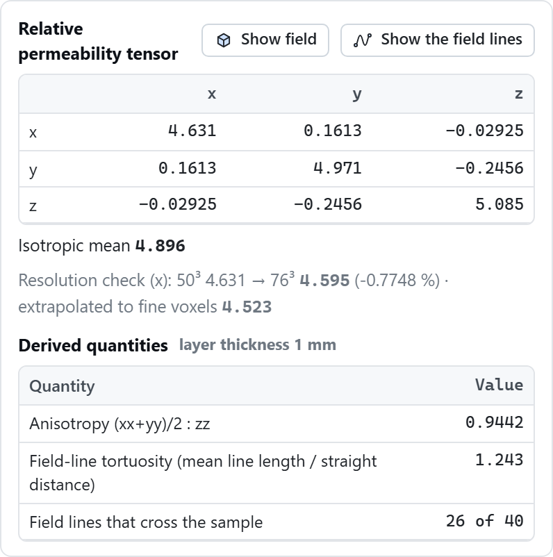
| 화면의 항목 | 예시 C2의 값 | 의미와 활용 |
|---|---|---|
| Relative permeability tensor | xx 4.631 / yy 4.971 / zz 5.085 | 방향별 비투자율. x가 다른 두 방향보다 7~9 % 낮습니다 — 아래 10.5절. |
| Isotropic mean | 4.896 | 한 숫자로 보고할 값. |
| Resolution check | 50³ 4.631 → 76³ 4.595 (−0.8 %) | 같은 구조를 1.5배 촘촘한 격자에 다시 그려 푼 x 방향 값. 변화가 1 % 이내라 해상도 때문에 흔들리는 값은 아닙니다. |
| Anisotropy (xx+yy)/2 : zz | 0.944 | 면내와 두께방향의 비. 구형 입자인데도 1에서 6 % 벗어난 것은 이 RVE에서 입자 사슬이 방향마다 다르게 이어졌기 때문입니다. |
| Field-line tortuosity | 1.243 | 자력선이 직선보다 24 % 길게 돌아갔다는 뜻입니다. 자속이 철 입자를 따라 이어 가려 하기 때문입니다. 유전율 예시의 1.010(거의 직선)과 비교하면 차이가 분명합니다. |
| Field lines that cross | 26 of 40 | 40개 중 26개만 반대편에 도달했습니다. 나머지는 도중에 돌아 나갔습니다. 자속이 고르게 퍼지지 않고 입자 사슬로 몰린다는 신호입니다. |
| layer thickness | 1 mm | 파생 수치를 계산할 때 가정한 층 두께. 11장의 차폐 계산에 그대로 쓰입니다. |
이유는 자속이 반드시 에폭시를 건너야 하기 때문입니다. 자기회로는 전기회로와 같아서, 직렬로 놓인 가장 나쁜 구간이 전체를 지배합니다. 입자 사이의 얇은 수지층이 자기적으로는 큰 저항(공극)이 되어, 필러가 아무리 좋아도 전체 투자율을 끌어내립니다. 이것을 반자장(demagnetisation) 효과라 합니다.
경계값도 이를 뒷받침합니다. Wiener 상한 18.2는 필러가 완벽히 이어졌을 때의 값이고, 하한은 1.52입니다. 계산값 4.896은 그 사이에 있으며, 상한에 한참 못 미칩니다. 입자가 서로 떨어져 있다고 보는 Maxwell-Garnett(2.48)보다는 높고, 입자끼리 이어지는 효과를 크게 보는 Bruggeman(5.94)보다는 낮습니다. 같은 함량으로 더 높이려면 연결성을 높이는 수밖에 없다는 뜻입니다.
이 예시는 입자끼리 겹칠 수 있게 만든 경우입니다(Structure 탭 Overlap permitted, 격자에서 서로 다른 입자가 닿은 voxel 쌍 66,340개, 그중 면 접촉 11,103개). 닿은 입자가 사슬로 이어지면 그 사슬이 어느 방향으로 뻗었느냐에 따라 방향별 값이 크게 달라집니다. 투자율은 x가 y·z보다 7~9 % 낮고(점검 항목 경고), 전기전도도는 방향 사이 차이가 46 %에 이르러 실패로 기록되었습니다(8장·31장).
| 가정 | 실제와 다를 수 있는 지점 |
|---|---|
| 선형 — 포화가 없다 | 가장 큰 한계입니다. 자성 재료는 자기장이 세지면 포화하여 투자율이 떨어집니다. 이 계산은 미소 신호(초기 투자율) 영역만 다루므로, 인덕터의 정격 전류에서의 거동은 알 수 없습니다. |
| 히스테리시스가 없다 | B–H 곡선의 이력과 그로 인한 손실(μ″)을 계산하지 않습니다. 코어 손실 평가에는 쓸 수 없습니다. |
| 직류·정적 | 주파수 의존성이 없습니다. 실제 자성 필러의 투자율은 수백 MHz 이상에서 급격히 떨어집니다(Snoek 한계). 11장의 고주파 차폐값이 과대평가되는 주된 원인입니다. |
| 와전류가 없다 | 도전성 자성 입자 안에 유도되는 와전류를 모사하지 않습니다. 고주파에서 실제 투자율을 더 떨어뜨립니다. |
| 자왜·응력 영향 없음 | 성형 응력으로 투자율이 변하는 현상은 없습니다. |
투자율 해석은 자기 퍼텐셜과 국부 자기장 증폭 |H|/H₀를 남깁니다. 아래는 예제 C2(에폭시 + 카보닐 철 35 vol%)입니다.
사용 풀이기: FANS(NASA PuMA와 같은 주기적 Q1 복셀 유한요소, FFT 전처리 켤레기울기법 — v5 기본) · NASA PuMA FE(선택). 변형 6가지 + 온도하중 1가지 = 하중 7개
반도체 패키지에서 신뢰성 문제의 상당수는 열팽창계수가 서로 다른 재료를 붙여 놓은 데서 생깁니다. 이 해석은 복합재의 탄성계수와 열팽창계수를 함께 구하고, 온도가 변할 때 내부에 생기는 응력까지 보여줍니다.
TMA(열기계분석)나 딜라토미터로 시편을 천천히 가열하며 길이 변화를 잽니다.
단위는 보통 ppm/K(= 10⁻⁶/K)입니다. 유리전이온도를 지나면 값이 크게 달라지므로 어느 온도 구간의 값인지가 항상 따라다닙니다.
인장·굽힘 시험(만능시험기)으로 응력–변형 곡선의 초기 기울기를 재거나, 초음파법으로 종파·횡파 속도를 재어 계산합니다. 초음파법이 미소변형 영역의 탄성계수를 얻는 데 유리합니다.
실험처럼 한 방향씩 당겨 보는 대신, 일곱 번의 계산으로 전체 거동을 한꺼번에 확정합니다.
탄성 해석은 v4까지 NASA PuMA의 유한요소를 MINRES 반복법으로 풀었습니다. 격자를 키우면 반복 횟수가 격자 크기에 비례해 늘어서, 500³ 격자에서 30시간이 넘도록 상대잔차 1e-5에 닿지 못하는 일이 있었습니다. v5는 같은 요소(주기적 Q1 복셀 유한요소)를 그대로 쓰되, 균질한 기준 재료의 강성 행렬을 FFT로 정확히 역산한 것을 전처리기로 쓰는 켤레기울기법 (FANS, Leuschner·Fritzen 2018)으로 풉니다. 기준 재료의 역행렬은 진동수마다 3×3 행렬 하나라서 거의 공짜이고, 그 덕에 반복 횟수가 격자 크기와 무관하게 하중당 수십 회로 일정합니다.
| 하중 7개 (18코어 PC, 상대잔차 1e-6) | 64³ | 96³ | 128³ | 192³ |
|---|---|---|---|---|
| FANS (v5 기본) — 반복 횟수/하중 | 18 s 72–75회 | 49 s 73–76회 | 175 s 73–76회 | 599 s 74–77회 |
| PuMA MINRES (Jacobi 전처리) — 같은 구조 | 107 s 605–675회 | 525 s 920–1039회 | — | — |
두 풀이기는 같은 이산화를 풀므로 결과가 같습니다(C11 차이 5e-8, 자체검증에서는 3.5e-9). 차이는 오직 속도이며, PuMA의 반복 횟수는 격자가 커질수록 늘지만 FANS는 일정하므로 큰 격자일수록 차이가 벌어집니다. 한 번 반복의 비용은 복셀 수에 비례하므로 위 측정에서 500³ 하중 7개를 비례로 추정하면 FANS는 약 3시간, PuMA는 반복 횟수가 64³의 약 8배로 늘어 약 100시간입니다(실측이 아니라 비례 추정; PuMA로 500³가 30시간 넘게 끝나지 않던 현상과 맞습니다). 96³에서 이미 FANS가 11배 빠릅니다.
반복은 상대잔차 1e-6(Fast 품질은 1e-5)까지 하며, 이 기준에서 C는 완전히 수렴한 값과 백만분의 2 안에서 같습니다. 자체검증은 균질 RVE와 적층판(정확해와 1e-15), 2상 복합재의 엄밀식(Levin 정리), 묽은 구의 Hashin–Shtrikman 한계, 반복 횟수가 격자에 따라 늘지 않음(24³과 48³), 그리고 PuMA와의 일치를 확인합니다(31장).
Elasticity and CTE 선택에는 FFT(Moulinec–Suquet) 풀이기도 있습니다. 이것은 다른 이산화라서 거친 격자에서 값이 다릅니다. 에폭시 + 강성 필러 29 vol% 구에서 영률은 FANS(복셀 유한요소)가 24³/32³/48³에서 8.16/7.62/7.16 GPa, FFT가 6.88/6.76/6.62 GPa였고, 둘 다 격자를 줄이면 약 6.3 GPa로 모입니다. 둘 다 위에서 내려오며 수렴하지만 복셀 유한요소는 거친 격자에서 훨씬 단단하게 나오고, FFT는 수렴값에 더 가깝습니다. 그래서 두 방법의 차이는 그 격자의 이산화 오차를 보여 주는 값이며, 보고할 값은 해상도 점검(6장)으로 충분히 고운 격자에서 구하십시오.
온도가 ΔT만큼 변할 때 내부에 실제로 생기는 응력을 상별로 보여줍니다. ΔT는 화면에서 지정하며, 보통 공정 온도에서 상온까지의 냉각 폭을 넣습니다.
여섯 성분(xx, yy, zz, yz, xz, xy)으로 나옵니다. 앞의 세 개가 각 방향의 선팽창계수이고, 등방성이면 세 값이 비슷합니다. 아래 Volumetric mean은 이들의 평균으로, TMA로 방향 구분 없이 잰 값과 비교할 대상입니다. 뒤의 세 개(yz, xz, xy)는 텐서 성분 αij로, 무작위 구조라면 0 근처입니다. layer_card.json에는 C*와 짝이 맞는 Voigt 벡터로 저장되므로 이 세 칸이 2αij입니다.
예시 A에서는 21.7 ppm/K가 나왔습니다(xx 22.0, yy 21.5, zz 21.7). 에폭시 단독은 보통 60 ppm/K 안팎이므로, AlN을 40 vol% 넣어 3분의 1 수준으로 낮춘 셈입니다. CTE 저감이 필러를 넣는 주된 이유 중 하나입니다. 이 값은 2상 복합재의 엄밀식(Levin 정리)과 백만분의 1 안에서 맞습니다.
영률 E(당길 때의 강성), 전단탄성계수 G, 푸아송비 ν가 방향별로 나옵니다. 이방성 재료라면 방향마다 다릅니다. 푸아송비는 νxy와 νyx가 서로 다를 수 있으며, 이는 오류가 아니라 이방성 재료의 정상적인 성질입니다.
이방성 결과를 등방성 하나의 값으로 요약하는 세 가지 방법입니다. Voigt는 상한, Reuss는 하한, Hill은 둘의 평균입니다. 다른 자료와 대략 비교하거나 한 숫자로 보고해야 할 때 Hill 값을 씁니다.
0이면 완전한 등방성이고, 클수록 방향성이 강합니다. 구형 필러를 무작위로 넣었다면 0에 가깝게 나와야 하며, 크게 벗어나면 RVE가 작거나 입자가 치우쳐 있다는 신호입니다.
6×6 행렬 전체입니다. 다른 해석 프로그램(구조 FEA 등)에 이 재료의 물성으로 그대로 넣을 수 있는 형태이므로, 멀티스케일 해석의 연결고리로 쓰입니다.
| 항목 | 의미 |
|---|---|
| von Mises | 재료가 항복·손상될지 판단할 때 쓰는 등가응력. 최댓값이 중요합니다. |
| Hydrostatic | 정수압 성분. 양수면 인장, 음수면 압축입니다. 계면 박리는 인장에서 잘 생깁니다. |
| 99th percentile | 가장 극단적인 한 점이 아니라 상위 1 % 수준의 값. 실무 판단에는 최댓값보다 안정적입니다. |
열팽창계수에도 고전 모델이 있습니다. Turner는 각 상이 같은 변형을 겪는다고 보는 모델이라 낮게 나오고, Kerner는 전단을 고려해 더 높게 나옵니다. Schapery 경계는 엄밀한 상·하한입니다. 계산값이 이 경계 밖으로 나가면 오류입니다.
| 가정 | 실제와 다를 수 있는 지점 |
|---|---|
| 선형 탄성 | 소성변형, 크리프, 점탄성을 풀지 않습니다. 에폭시는 유리전이 근처에서 점탄성이 강하므로, 그 영역의 거동은 이 해석으로 알 수 없습니다. |
| 계면이 완전히 붙어 있다 | 필러와 기지가 떨어지지 않는다고 봅니다. 실제로 박리가 일어나면 강성과 응력이 모두 달라집니다. |
| 물성이 온도에 무관하다 | ΔT 구간에서 E와 α가 일정하다고 봅니다. 넓은 온도 구간에는 맞지 않습니다. |
| 잔류응력이 없는 상태에서 시작 | 경화 수축으로 이미 들어 있는 응력은 고려하지 않습니다. |
| 기공의 강성 | 기공은 완전한 0이 아니라 아주 작은 값으로 처리합니다(수치 안정을 위해). 화면에 그 비율이 표시됩니다. |
열팽창 해석은 온도 하중(ΔT) 아래의 열응력을 남깁니다 — von Mises 응력, 정수압 응력 σm, 그리고 σzz, τxz 성분입니다. 아래는 예제 A(에폭시 + AlN 40 vol%, ΔT = 100 K, constrained)입니다.
| 보이는 것 | 뜻 | 해석 |
|---|---|---|
| 대부분의 입자 표면이 파랑, 군데군데 빨간 점(최대 약 87 MPa) | 입자끼리 맞닿거나 아주 가까운 곳에 응력이 집중됩니다. | 균열·계면 박리가 시작될 후보 지점입니다. 기지(에폭시)의 강도와 비교하십시오. 접점이 많을수록(함량이 높을수록) 이런 점이 늘어납니다. |
| σm이 거의 모든 곳에서 −60 ~ −70 MPa | constrained 조건은 RVE가 팽창하지 못하게 막은 상태이므로, 가열하면 전체가 압축됩니다. | 이 값은 "주변에 꽉 끼인 층을 가열했을 때"의 응력입니다. 입자와 기지의 팽창 불일치만 보려면 free 조건으로 계산하십시오 — 평균 응력이 0이 되고, 입자와 기지 사이의 부호가 반대인 응력만 남습니다. |
사용 풀이기: 자체 FANS 복셀 유한요소(크리핑 흐름, B-bar 요소) · Krieger–Dougherty · Farr–Groot 최밀충진 · Chateau–Ovarlez–Trung 비뉴턴 균질화
경화하기 전의 언더필(MUF), 몰딩 컴파운드(EMC), 접착제, 페이스트는 액체입니다. 필러를 넣으면 점도가 얼마나 오르는지, 좁은 틈을 얼마나 빨리 채우는지, 필러가 가라앉지는 않는지를 구합니다. 열·기계 물성을 올리려고 필러를 늘릴수록 흐름이 나빠지므로, 두 가지를 같은 구조에서 함께 보는 것이 이 해석의 목적입니다.
필러가 들어간 액체의 점도를 수지(기지)만의 점도로 나눈 값, 상대점도 μr를 구합니다.
μr은 수지의 점도와 무관하게 필러의 양·모양·크기 분포·배치만으로 정해집니다. 그래서 한 번 구해 두면 온도가 바뀌어 수지 점도가 바뀌어도 그대로 곱해 쓸 수 있습니다. 필러가 적을 때는 Einstein의 1 + 2.5φ로 천천히 오르다가, 입자가 더 이상 움직일 수 없는 최대 충진율 φm에 가까워지면 급격히 발산합니다. 실무에서 필러 함량을 정하는 일은 대부분 이 발산 직전에서 얼마나 떨어져 있느냐의 문제입니다.
| 방법 | 내용 |
|---|---|
| 회전 레오미터 (평판, 콘-평판) |
시료를 두 판 사이에 넣고 돌리며 토크를 잽니다. 전단속도를 바꿔 가며 유동곡선(점도–전단속도)을 얻습니다. 수지만 잰 값으로 나누면 μr입니다. 이 해석의 결과와 가장 직접 비교되는 측정입니다. |
| 모세관 점도계 | 가는 관으로 밀어내며 압력강하를 잽니다. 높은 전단속도(사출·디스펜싱 조건)에 맞습니다. |
| 스파이럴 플로 (EMC) |
나선형 금형에 컴파운드를 밀어 넣어 경화하기 전까지 흘러간 길이를 잽니다. 점도와 경화속도가 함께 들어간 실무 지표입니다. |
| 언더필 흐름 시험 | 유리판 두 장 사이의 일정한 틈에 언더필을 흘려 일정 거리를 채우는 시간을 잽니다. 13.4의 Washburn 시간과 비교됩니다. |
느린 점성 흐름(크리핑 흐름, Stokes 흐름)은 비압축 탄성체와 같은 방정식을 따릅니다. 변위 대신 속도, 변형률 대신 변형률속도, 전단탄성률 대신 점도를 넣으면 됩니다. 그래서 탄성 해석에 쓰는 FANS 복셀 유한요소로 그대로 풉니다. 비압축에서 생기는 잠김(locking)은 B-bar 요소로 막고, 필러는 수지보다 1000배 점성이 큰 유체로 두어 사실상 강체로 만듭니다(1000배와 10000배에서 고유점도의 차이는 0.4 % — 자체검증 항목). RVE 전체에 단위 전단속도를 yz, xz, xy 세 면에서 걸고 평균 응력에서 점도를 얻으며, 일축 신장도 한 번 더 풉니다.
구는 2.5(Einstein), 가늘고 긴 섬유와 얇은 판은 Simha의 극한식을 씁니다. 그 밖의 모양은 같은 입자를 4 vol%로 묽게 넣은 RVE를 따로 풀어 [η] = (μr − 1)/φ로 구합니다.
입자 사이의 수지막이 복셀 한두 개보다 얇아지면 격자는 그 윤활막을 풀지 못하고 RVE 값은 실제보다 작아집니다. 그래서 필러 35 vol% 이하이고 입자가 서로 닿지 않으면 RVE 흐름 풀이를, 그 이상이면 φm을 쓴 Krieger–Dougherty를 최선값(Best estimate)으로 씁니다.
예시: 에폭시(2 Pa·s, 뉴턴)에 용융 실리카 3 µm 구 30 vol%, RVE 18 µm(54³).
| 항목 | 의미와 활용 |
|---|---|
| Best estimate | 보고에 쓸 μr. 옆에 어느 방법에서 왔는지 적힙니다. 예시는 2.989 — 컴파운드가 수지보다 약 3배 끈끈합니다. |
| Shear yz / xz / xy, Extension | 방향별 전단점도(2.972 / 2.977 / 3.018)와 신장점도. 세 값이 1–2 % 안에서 같으면 등방 구조입니다. 판상·섬유 필러가 정렬되면 크게 갈라집니다. |
| Maximum packing fraction φm | 예시는 Farr–Groot로 0.6435(같은 크기의 공). 크기 분포를 넓히거나 큰 입자와 작은 입자를 섞으면 이 값이 올라가고, 같은 함량에서 점도가 내려갑니다 — 고충진 EMC가 이중·삼중 분포를 쓰는 이유입니다. |
| Desmond–Weeks φRCP | 입자 반경의 분산 δ와 왜도 S로 쓴 실험식(Phys. Rev. E 90, 022204). δ ≤ 0.4에서 ±0.002로 맞습니다. Farr–Groot와의 교차 확인용입니다. |
| Krieger–Dougherty, frictional particles | 마찰 있는 입자라면 φm = 0.588, μr = 2.857. 두 값의 차이가 이 함량에서 입자 표면 상태가 만드는 불확실성입니다. 함량이 높아질수록 차이가 급격히 커집니다. |
| φm that puts Krieger–Dougherty through the RVE value | RVE 값을 Krieger–Dougherty로 그대로 재현하는 φm(예시 0.540). 이 φm으로 함량을 바꿔 외삽하면 RVE와 같은 경향의 곡선을 얻습니다. |
이 그래프가 실무에서 가장 쓸모 있습니다. 현재 함량에서 곡선이 얼마나 가파른지를 보십시오. 곡선이 이미 세로로 서기 시작한 함량이라면, 몇 vol%를 더 넣을 때 점도는 몇 배가 됩니다. Einstein·Batchelor는 묽은 극한식이라 30 vol%에서 이미 크게 낮고(1.75, 2.31), Hashin–Shtrikman 하한(2.07)은 어떤 배치도 그 아래로 내려갈 수 없는 값입니다 — RVE 값이 그 아래로 나오면 풀이를 의심해야 합니다(자동 점검 항목).
3D/2D 화면의 Local shear rate / applied shear rate는 수지가 실제로 얼마나 빠르게 전단되는지를 보여 줍니다. 입자가 가까운 곳이 빨갛게 나오는 것이 정상입니다. 이 증폭 때문에 전단묽어짐 수지는 컴파운드 안에서 더 묽어지고, 평균 증폭률(예시 2.07)이 위의 Chateau 식의 A입니다.
| 항목 | 의미와 활용 |
|---|---|
| Filling time, compound | 점도가 3배가 되면 충진 시간도 3배입니다. 다이 크기(흐름 길이)의 제곱에 비례하고 틈 높이에 반비례하므로, 범프 높이를 줄이는 설계 변경이 충진에 미치는 영향을 바로 계산할 수 있습니다. 범프 배열과 디스펜싱 경로, 흐르는 동안의 경화는 들어 있지 않으므로 절대값보다 비교에 쓰십시오. |
| Filler settling | 젤화 전 60분 동안 가라앉는 거리. 예시는 1.8 µm로 무시할 만합니다. 큰 입자(침강 속도 ∝ d²)나 밀도가 높은 필러(Al₂O₃, 금속)는 수십 µm가 되어 바닥 쪽 필러 농도가 달라집니다. |
| 화면 | 보여 주는 것 |
|---|---|
| Flow front under the die | 같은 틈에서 수지만과 컴파운드의 흐름 앞면을 나란히 움직입니다(Play 또는 시간 막대). 컴파운드가 얼마나 늦게 채우는지가 바로 보입니다. |
| Animated resin flow | 3D 화면에서 수지 유선 위의 추적자가 그 자리의 속도대로 움직입니다. 층이 미끄러지고, 필러가 돌고, 필러 사이 틈에서 수지가 빨라지는 모습입니다. 선의 색이 속도(벽 속도 대비)라서 멈춘 화면에서도 빠른 층과 느린 층이 구분됩니다. |
| Local shear rate | 필러 사이에서 수지가 평균보다 몇 배 세게 전단되는 곳(빨강) — 점도를 올리는 자리입니다. 3D와 단면 모두 볼 수 있습니다. |
| Resin speed / arrows | 단순 전단의 수지 속도 크기와 방향. 2D 화면에서 화살표로 보면 필러를 돌아가는 흐름이 보입니다. |
각 화면의 실제 예와 읽는 법은 32.1절에 있습니다.
MUF(molded underfill)는 칩 위를 덮는 몰딩과 범프 사이를 채우는 언더필을 한 번에 하므로, 열팽창계수를 낮추려고 필러를 많이 넣어야 하는 요구와 좁은 범프 사이를 흘러 들어가야 하는 요구가 정면으로 부딪힙니다. 다음 순서로 점검합니다.
| 점검 항목 | 어디서 보는가 | 판단 |
|---|---|---|
| ① 컴파운드 점도 | Flow curve 상자의 "Compound at 10 1/s" | 공정(성형기, 디스펜서)이 감당하는 점도 이하인가 |
| ② 막힘까지의 여유 | φ와 φm의 비, 함량–점도 곡선의 기울기 | φ/φm이 0.85를 넘으면 1 vol% 변동에 점도가 15 % 이상 흔들립니다(로트 산포에 민감) |
| ③ 틈 채우기 | Capillary underfill 상자 | 범프 사이 모세관 충진 시간(CUF 기준값, MUF는 압력 충진이지만 점도에 비례하므로 비교 지표) |
| ④ 침강 | Filler settling 표 | 젤화 전 침강 거리가 범프 높이에 비해 작은가 |
같은 순서로 실제 MUF 설계 두 개(단일 5 µm와 이중 15 + 3 µm, 55 vol%)를 끝까지 풀고, 수지가 필러 사이에서 어떻게 흐르는지를 단면 유선, 염료 선, 움직이는 3D 유선, 다이 밑 흐름 앞면으로 보여 주는 예시는 32.1절에 있습니다.
사용 풀이기: 주기 유한체적 확산 풀이(수분 활동도 기준) · FANS 열탄성 풀이(흡습 고유변형) · Crank 판 확산해
패키지 수지는 공기 중의 수분을 흡수합니다. 흡수된 수분은 리플로우 때 증기압으로 박리와 팝콘 크랙을 만들고, 수지를 부풀려 휨과 계면 응력을 만듭니다. 필러가 들어간 컴파운드가 수분을 얼마나 먹는지, 얼마나 빨리 먹는지, 먹으면 얼마나 부푸는지를 구합니다.
| 값 | 의미 |
|---|---|
| 유효 확산계수 Deff | 컴파운드 안에서 수분이 퍼지는 빠르기 [m²/s]. 두께와 함께 흡습 시간을 정합니다. |
| 포화 흡습률 | 충분히 오래 두었을 때 먹는 수분의 양 [wt%]. 리플로우 증기압의 원천입니다. |
| 흡습 곡선 | 주어진 두께의 부품이 시간에 따라 먹는 수분. JEDEC 수준 1(85 °C/85 % RH, 168 h) 등과 바로 비교됩니다. |
| 흡습 팽윤, CME | 포화 시 부풀어 오르는 변형과, 수분 질량분율당 변형(CME, coefficient of moisture expansion). |
| 방법 | 내용 |
|---|---|
| 흡습 무게 측정 (JESD22-A120) |
건조한 판 시편을 85 °C/85 % RH 등에 두고 시간마다 무게를 잽니다. 포화 무게에서 포화 흡습률을, 초기 기울기(√t에 비례하는 구간)에서 D를 얻습니다. 이 해석의 흡습 곡선과 같은 실험입니다. |
| TMA/DIL + 습도 | 습도를 바꾸며 길이 변화를 재어 CME를 얻습니다. 흡습량 측정과 같이 해야 합니다. |
| 모아레·디지털 영상 상관 | 부품 단위의 흡습 휨을 봅니다. 재료 값(CME, D)은 위 두 측정으로 따로 얻습니다. |
재료마다 세 가지 선택 물성을 씁니다(Material 탭의 Moisture and glass transition): 수분 확산계수 Dw, 포화 흡습률 csat(wt %), 흡습 팽윤계수 CME. 이 값이 없는 재료는 수분을 먹지 않는 것으로 봅니다(실리카, 알루미나 같은 무기 필러). 라이브러리의 수지 값은 85 °C/85 % RH의 전형적인 값이므로, 실제 재료는 데이터시트나 14.2의 측정값으로 바꾸십시오.
수분은 농도가 아니라 활동도 a = c/csat(상대습도와 같은 값)의 차이로 움직입니다. 두 재료가 맞닿은 계면에서 농도는 끊기지만(각자 먹는 양이 다르므로) 활동도는 이어집니다. 그래서 전도 해석과 같은 방정식을 활동도에 대해 풀고, 그때의 "전도도"는 투과도 P = Dw·csat입니다. 컴파운드의 유효 확산계수는 그 유효 투과도를 평균 포화 농도로 나눈 값입니다.
수분을 먹지 않는 필러는 이 식에서 저절로 통과할 수 없는 장애물이 됩니다. 구형 필러를 묽게 넣으면 Deff/Dresin = 2/(2+φ)(Maxwell)이고, 자체검증이 이 값을 확인합니다.
예시: 에폭시(Dw 3×10⁻¹² m²/s, 2.5 wt %, CME 0.30)에 용융 실리카 4 µm 구 40 vol%, 두께 0.5 mm 판.
| 항목 | 의미와 활용 |
|---|---|
| Effective diffusivity Deff (x / y / z) | 예시는 2.22×10⁻¹² m²/s(z). 풀지 않은 방향은 "—"입니다. 판상 필러가 누워 있으면 z가 x, y보다 훨씬 작아져 두께 방향 흡습이 느려집니다 — 방습 필러 설계의 핵심입니다. |
| Deff / Dmatrix | 0.741. 묽은 구의 Maxwell 값 0.833보다 낮은 것은 40 vol%에서 입자가 서로 가까워 길이 더 구불구불하기 때문입니다. |
| Saturated uptake | 1.125 wt %. 필러가 수분을 먹지 않으면 수지 흡습률 × 수지의 질량분율과 정확히 같습니다(참조값 줄). 필러를 늘리면 줄어들지만 수지 한 단위가 먹는 양은 그대로이므로 계면에 모이는 수분은 줄지 않을 수 있습니다. |
| Half / 95 % saturation, Uptake after … h | 0.5 mm 판의 t50 1.54 h, t95 8.8 h. 168 h 뒤에는 완전히 포화됩니다. 두께가 2배면 시간은 4배입니다. |
| 항목 | 의미와 활용 |
|---|---|
| Swelling strain | 포화했을 때 컴파운드가 부푸는 변형(예시 3.53 ‰). 수지만이면 2.5 % × 0.30 = 7.5 ‰입니다. 단단한 마른 필러가 수지를 붙잡아 절반 이하로 줄었습니다. |
| Effective CME | 컴파운드의 흡습 질량분율당 변형(0.31). 부품 해석(휨, 계면 응력)에 열팽창계수와 나란히 넣는 값입니다. |
| Same strain as a temperature rise of | 흡습 팽윤을 열팽창으로 환산한 값(124 K). 같은 실행에 CTE 해석이 있을 때 나옵니다. 흡습만으로 100 K 넘는 온도 변화만큼 부푼다는 뜻이므로, 흡습 휨이 열 휨과 같은 크기임을 바로 알 수 있습니다. |
리플로우(260 °C)는 대부분 수지의 Tg 위에서 일어납니다. 탄성/CTE 해석에서 Also above Tg를 켜면, Tg 물성(E above Tg, CTE above Tg)이 있는 재료를 고무 상태(ν 0.45, B-bar 요소)로 바꿔 한 번 더 풉니다. EMC 데이터시트의 α1/α2와 상온·고온 탄성률에 해당합니다.
수지 자체의 α2는 180 ppm/K이지만 컴파운드의 α2는 95.5 ppm/K입니다. Tg 위에서 부드러워진 수지를 단단한 필러가 붙잡기 때문입니다. 탄성률은 66배 떨어지므로, 리플로우 중의 응력과 휨은 상온 물성으로 계산한 것과 전혀 다릅니다.
사용 오픈소스: NASA PuMA Stokes 유동 유한요소 해석 — 연결된 기공에 대해서만
다공 재료에 유체가 얼마나 잘 통과하는지를 나타내는 값입니다. 필터, 멤브레인, 소결 금속, 다공 세라믹의 기본 물성입니다.
시편 양쪽에 압력차 Δp를 걸고 흘러나오는 유량 Q를 잽니다. 다르시(Darcy) 법칙으로 투과도를 구합니다.
여기서 A는 단면적, L은 두께, μ는 유체의 점도입니다. 투과도 K는 면적의 단위(m²)를 가지며, 유체의 종류와 무관한 구조만의 성질입니다. 석유공학에서 유래한 darcy 단위도 흔히 쓰며 1 darcy ≈ 9.87×10⁻¹³ m²입니다.
| 항목 | 의미와 활용 |
|---|---|
| K tensor (m², darcy) | 방향별 투과도. 예시 B에서는 약 3.7×10⁻¹⁴ m²(0.038 darcy)가 나왔습니다. |
| Connected (x / y / z) | 그 방향으로 기공이 관통하는지. ○ 이면 K = 0입니다. 기공률이 높아도 서로 이어지지 않으면 유체는 통하지 않습니다. |
| 항목 | 의미와 활용 |
|---|---|
| Static flow resistivity | σ = μ / K. 흡음재 설계의 핵심 입력값입니다(18장). 단위는 Pa·s/m². |
| Kozeny–Carman constant | φ³/(K·Sv²). 기공률과 비표면적으로 투과도를 설명하는 고전식의 상수로, 단순한 구조에서는 4~5입니다. 예시 B는 8.03이 나왔는데, 이는 기공이 단순한 관 다발보다 구불구불하고 목이 좁다는 뜻입니다. |
| Hydraulic tortuosity | ⟨|u|⟩/⟨u∥⟩ — 유체가 흐른 실제 거리와 직선거리의 비. 클수록 돌아갑니다. |
| Open-pore specific surface | 열린 기공의 단위 부피당 표면적. 압력손실과 흡착 성능에 직결됩니다. |
| Forchheimer coefficient β | 유속이 빨라져 다르시 법칙이 깨지는 지점을 알려줍니다. 함께 표시되는 "관성이 10 % 기여하는 유속"보다 느리게 쓰면 다르시 영역입니다. 상관식이며 별도의 해석이 아닙니다. |
| Klinkenberg slip factor b | 기체는 기공 벽에서 미끄러지므로 액체보다 더 잘 통과합니다. 기체로 측정한 투과도가 액체보다 높게 나오는 이유이며, 그 보정값입니다. |
| Field-line tortuosity | 유선을 실제로 그려 관통한 것들의 평균 길이로 구한 굴곡도입니다. |
Streamlines 단추를 누르면 3D 화면에서 유체가 실제로 지나간 경로를 볼 수 있습니다. 여기서 보이는 것이 숫자보다 많은 것을 말해 줍니다.
| 가정 | 실제와 다를 수 있는 지점 |
|---|---|
| 느린 층류 (Stokes) | 관성을 무시합니다. 유속이 빠르면 실제 압력손실이 더 큽니다. Forchheimer 계수로 그 한계를 확인하십시오. |
| 뉴턴 유체, 비압축성 | 점도가 일정한 유체입니다. 고분자 용액 같은 비뉴턴 유체에는 맞지 않습니다. |
| 벽면 미끄럼 없음 | 희박 기체(기공이 아주 작거나 저압)에서는 미끄러집니다. Klinkenberg 보정이 그 크기를 알려줍니다. |
| 구조가 변하지 않는다 | 압력으로 기공이 찌그러지거나, 입자가 쌓여 막히는 현상은 없습니다. |
| 단상 유동 | 물과 공기가 함께 흐르는 2상 유동은 풀지 않습니다. |
투과도 해석은 기공 안의 속도장 u를 남깁니다. 압력 구배 1 Pa/m, 점도 1 Pa·s의 단위 조건으로 풀므로, 부피 전체에 대한 평균 속도가 곧 투과도 K(m²)와 같은 숫자입니다. 아래는 예제 B(다공 Al₂O₃, 기공 45 %, Kzz ≈ 3.5 × 10⁻¹⁴ m²)입니다.
사용 오픈소스: PuMA가 푼 Stokes 속도장 위에서의 입자 추적(Lagrangian particle tracking)
필터가 어느 크기의 입자를 얼마나 잡아내는지를 구합니다. 앞 장에서 푼 유동장을 그대로 이용하여, 입자를 하나씩 띄워 따라가는 방식입니다.
필터 앞뒤에서 입자 개수를 세어 비교합니다. 단분산 에어로졸(보통 DEHS, PSL 라텍스, NaCl)을 발생시켜 필터에 통과시키고, 광학 입자계수기(OPC)나 응축핵계수기(CPC)로 상류·하류 농도를 재어
를 구합니다. 입경을 바꿔가며 반복하면 입경별 효율 곡선이 나옵니다. HEPA 등급(EN 1822)이 바로 이 곡선의 최저점으로 정의됩니다.
처음 접하면 의외인 사실이 있습니다 — 작은 입자가 더 잘 잡힙니다. 포집 기구가 크기에 따라 다르기 때문입니다.
| 기구 | 작동 방식 | 잘 잡는 크기 |
|---|---|---|
| 확산 (Brownian) | 아주 작은 입자는 기체 분자와 부딪혀 마구 흔들립니다. 그러다 벽에 닿아 붙습니다. | ~0.1 µm 이하 |
| 차단 (Interception) | 유선을 따라가더라도 입자의 반지름만큼 벽에 먼저 닿습니다. | ~0.5 µm 이상 |
| 관성 충돌 (Impaction) | 무겁거나 빠른 입자는 유선이 꺾일 때 못 따라가고 직진해 부딪힙니다. | ~1 µm 이상 |
확산은 크기가 커질수록 약해지고, 차단·충돌은 커질수록 강해집니다. 그래서 그 사이 어딘가에 가장 안 잡히는 크기가 생깁니다. 이것을 MPPS(Most Penetrating Particle Size)라 하며, 필터의 성능은 이 지점으로 규정됩니다.
실험과 같은 일을 계산 안에서 합니다.
| 항목 | 의미와 활용 |
|---|---|
| Most penetrating size | 가장 안 잡히는 입경. 필터 등급을 정하는 값입니다. 예시 B는 0.143 µm. |
| Efficiency at that size | 그 크기에서의 효율. 예시 B는 70 %로, HEPA(99.97 %)에는 한참 못 미치는 조립 필터입니다. |
| Pressure drop | 앞서 구한 투과도로부터 계산한 압력손실. 효율과 맞바꿔야 하는 비용입니다. |
| Quality factor | −ln(투과율) / 압력손실. 효율과 압력손실을 함께 본 지표로, 필터를 서로 비교할 때 가장 공정한 값입니다. 클수록 좋습니다. |
| Stokes number | 관성의 척도. 1보다 훨씬 작으면 입자가 유선을 잘 따라갑니다(충돌 없음). |
| Péclet number | 대류 대 확산의 비. 작을수록 브라운 운동이 우세합니다. |
| Returned to the inlet | 확산으로 입구 쪽으로 되돌아 나간 입자 수. 이 입자들은 필터를 통과한 것이 아니므로 효율 계산에서 제외합니다. 가장 작은 입경에서 이 수가 커집니다. |
Show the particle tracks를 누르면 입자가 실제로 지나간 길을 3D로 볼 수 있습니다. 가장 안 잡히는 크기의 궤적이 열리므로, 그 입자들이 어떻게 구조를 빠져나가는지 직접 확인할 수 있습니다.
| 가정 | 실제와 다를 수 있는 지점 |
|---|---|
| 정전기 포집이 없다 | 가장 큰 차이입니다. 실제 부직포 필터는 대전시켜 효율을 크게 올립니다(일렉트릿). 이 효과가 빠져 있으므로 계산값이 실제보다 낮게 나옵니다. |
| 닿으면 무조건 붙는다 | 큰 입자가 빠른 속도로 부딪히면 튕겨 나오기도 합니다(rebound). 이 경우 계산이 과대평가합니다. |
| 구조가 변하지 않는다 | 입자가 쌓여 필터가 막히는 현상(loading)은 없습니다. 새 필터(clean filter)의 초기 성능만 계산합니다. 실제 필터는 사용하면서 효율이 오르고 압력손실도 오릅니다. |
| 중력 무시 | 필터 성능을 좌우하는 서브마이크론 영역에서는 무시할 만합니다. |
| 입자가 구형 | 섬유상·응집 입자는 거동이 다릅니다. |
여과 해석의 경로는 투과도 해석의 유동장 위에서 입자를 흘려 보낸 궤적입니다. 큰 입자는 좁은 목(throat)에서 차단되고, 아주 작은 입자는 브라운 운동으로 벽에 확산해 걸립니다. 궤적이 짧게 끝나는 크기가 잘 걸리는 크기이고, 끝까지 빠져나가는 궤적이 많은 크기가 결과 그래프의 가장 투과가 잘 되는 크기(MPPS)입니다.
사용 오픈소스: NASA PuMA 연속체 굴곡도 — 기공 안의 정상확산 방정식을 풉니다
물질(이온, 기체, 수분)이 다공 구조를 얼마나 느리게 통과하는지를 구합니다. 배터리 전극, 연료전지 기체확산층, 촉매 담체, 방습층 설계의 핵심 값입니다.
기공이 뚫려 있어도 물질은 직선으로 가지 못합니다. 돌아가야 하고, 좁은 목을 지나야 합니다. 그래서 겉보기 확산은 자유공간보다 느려집니다. 이 느려짐을 두 가지가 만듭니다.
| 방법 | 내용 |
|---|---|
| 투과확산 셀 (Wicke–Kallenbach) |
시편을 사이에 두고 한쪽에 추적 기체를, 반대쪽에 운반 기체를 흘리며 넘어온 농도를 잽니다. 정상상태에서의 유속으로 Deff를 직접 구합니다. |
| 시간지연법 (time-lag) |
한쪽에 갑자기 농도를 걸고 반대쪽에서 나오기 시작하는 시간을 잽니다. 그 지연시간이 확산계수와 두께로 결정됩니다. |
| 전도도법 (formation factor) |
가장 널리 쓰입니다. 시편에 전해질을 채우고 전기저항을 잽니다. 이온의 확산과 전도는 같은 방정식을 따르므로, 저항비 F = σ전해질/σ시편가 곧 τ/ε입니다. 배터리 전극 평가의 표준 방법입니다. |
| NMR·추적자법 | 분자의 실제 이동거리를 직접 관측합니다. |
기체 분자는 보통 서로 부딪히며 퍼져 나갑니다. 그런데 기공이 분자의 평균자유행로 (상온·상압 공기에서 약 68 nm)보다 작아지면, 분자끼리보다 벽에 먼저 부딪힙니다. 이때는 확산이 기공 크기에 비례하게 되며, 이를 Knudsen 확산이라 합니다.
| 항목 | 의미와 활용 |
|---|---|
| Tortuosity factor τ (x / y / z) | 방향별 굴곡도. 1이면 직선 통로이고, 클수록 돌아갑니다. 예시 B의 2.078은 다공 세라믹으로 평범한 값입니다. 5를 넘으면 매우 구불구불한 구조입니다. |
| Open porosity ε | 확산에 실제로 기여하는 기공만 센 값입니다. 전체 기공률보다 작을 수 있습니다. |
| Deff / Dbulk | 자유공간 대비 확산이 몇 배로 줄었는지. ε/τ와 같습니다. 다른 계산에 그대로 넣을 수 있는 무차원 값입니다. |
| Formation factor F | τ/ε. 실험의 전도도법으로 얻는 값과 직접 비교되는 양입니다. 측정값이 있다면 이 줄과 맞춰 보십시오. |
| MacMullin number | 전해질을 채운 다공체의 저항이 순수 전해질의 몇 배인지. 배터리 분리막·전극 규격에 쓰입니다. F와 같은 값입니다. |
| 항목 | 의미 |
|---|---|
| Knudsen number Kn | 평균자유행로 / 기공 크기. Kn < 0.01이면 보통 확산, Kn > 10이면 Knudsen 확산, 그 사이는 중간 영역입니다. |
| Knudsen diffusivity | 벽 충돌만으로 결정되는 확산계수. |
| Combined (Bosanquet) | 두 기구를 합친 값. 1/D = 1/D분자 + 1/DKnudsen. 느린 쪽이 지배합니다. |
| 가정 | 실제와 다를 수 있는 지점 |
|---|---|
| 순수한 확산만 | 압력차로 밀려가는 유동(대류)은 없습니다. 둘이 함께 일어나는 경우는 투과도(15장)와 나누어 보십시오. |
| 벽에 붙지 않는다 | 흡착·표면확산은 없습니다. 실제 촉매 담체에서는 큰 차이를 만들 수 있습니다. |
| 고체는 완전히 막는다 | 고체 상을 통한 확산(예: 고분자막 속 수분)은 고려하지 않습니다. |
| 희박 용액·이상기체 | 농도에 따라 확산계수가 변하는 경우는 다루지 않습니다. |
| 정상상태 | 시간에 따라 변하는 과도 확산이 아니라 정상상태의 값입니다. |
사용 오픈소스: 구조 해석 결과를 Johnson–Champoux–Allard(JCA) 등가유체 모델에 넣어 계산
다공 재료가 소리를 얼마나 흡수하는지를 주파수별로 구합니다. 앞선 해석들(투과도·굴곡도·기공 크기)의 결과가 그대로 입력이 되는, 여러 해석이 합쳐지는 대표적인 예입니다.
| 방법 | 내용 |
|---|---|
| 임피던스관 (ISO 10534-2, ASTM E1050) |
가장 표준적입니다. 원통형 관 끝에 시편을 대고 스피커로 소리를 보낸 뒤, 마이크 두 개로 들어간 파와 되돌아온 파를 분리합니다. 그 비에서 흡음률 α를 구합니다. 수직 입사 조건이며, 이 계산과 직접 비교되는 값입니다. |
| 잔향실법 (ISO 354) |
큰 방에 시편을 깔고 잔향시간의 변화로 구합니다. 모든 방향에서 오는 소리에 대한 값이라 임피던스관보다 크게 나오며, 건축 자재의 규격값이 보통 이것입니다. |
| 유동저항 측정 (ISO 9053) |
아주 느린 공기를 통과시켜 압력차를 잽니다. 흡음 성능을 좌우하는 가장 중요한 단일 물성이며, 이 프로그램은 투과도에서 이 값을 계산합니다(15장). |
소리가 기공 안으로 들어가면, 공기가 좁은 통로를 드나들며 벽과의 마찰로 에너지를 잃습니다. 또 압축·팽창하며 생긴 열이 벽으로 빠져나가 열로도 잃습니다. 그래서 흡음재는 반드시 열린 기공이어야 합니다 — 닫힌 기공 폼(스티로폼)은 단열은 되어도 흡음은 거의 되지 않습니다.
JCA 모델은 다공 재료를 "점성과 열손실이 있는 등가 유체"로 바꾸어 다룹니다. 그 유체를 정의하는 데 다섯 개의 값이 필요한데, 모두 앞선 해석에서 나옵니다.
| JCA 입력 | 어디서 오는가 | 역할 |
|---|---|---|
| 유동저항 σ | 투과도 해석(15장) | 점성 손실의 크기 |
| 기공률 φ | 구조 분석(20장) | 소리가 들어갈 수 있는 부피 |
| 굴곡도 α∞ | 굴곡도 해석(17장) | 돌아가는 정도 |
| 점성 특성길이 Λ | 기공 형태 | 좁은 목에서의 마찰 |
| 열 특성길이 Λ′ | 비표면적 | 벽으로의 열손실 |
이 다섯 값으로 유효 밀도와 유효 체적탄성률을 구하고, 지정한 두께의 층을 단단한 벽 앞에 놓았을 때의 표면 임피던스를 계산하여 흡음률을 얻습니다.
흡음 해석은 투과도·확산 해석의 유동장에서 유동 저항 σ, 굴곡도 α∞, 점성·열 특성 길이 Λ, Λ′를 얻습니다. 유선이 곧고 고르면 α∞가 1에 가깝고, 흐름이 좁은 창(window)을 지날 때 빨라지는 곳이 Λ(점성 특성 길이)를 정합니다. 흡음 성능을 바꾸려면 이 창의 크기(골격 두께·기공 크기)를 바꾸는 것이 가장 직접적입니다.
| 항목 | 의미와 활용 |
|---|---|
| α (흡음률) | 0이면 전부 반사, 1이면 전부 흡수. 주파수별로 나옵니다. 예시 D는 125 Hz에서 0.02, 4 kHz에서 0.82입니다. |
| NRC | 250·500·1000·2000 Hz 네 값의 평균을 0.05 단위로 반올림한 값. 건축 자재 규격에서 가장 널리 쓰이는 한 숫자입니다. 예시 D는 0.2. |
| SAA | 200~2500 Hz의 12개 값을 평균한 것으로, NRC보다 촘촘합니다. |
| Surface impedance | 표면에서 본 음향 임피던스. 실수부가 공기(415 Pa·s/m)에 가까울수록 잘 흡수합니다. |
| Layer thickness | 계산에 쓴 층 두께. 이 값이 결과를 크게 좌우합니다 — 아래를 보십시오. |
예시 D는 4 kHz에서 0.82로 잘 흡수하지만 125 Hz에서는 0.02로 거의 못 잡습니다. NRC가 0.2로 낮게 나온 것도 이 때문입니다. 재료가 나빠서가 아니라 두께 때문입니다.
흡음이 잘 되려면 재료 안에서 공기 입자가 빠르게 움직이는 지점이 층 안에 들어와야 합니다. 그 지점은 벽에서 파장의 1/4 떨어진 곳입니다.
| 주파수 | 파장 | 필요한 두께(λ/4) |
|---|---|---|
| 125 Hz | 2.7 m | 약 69 cm |
| 500 Hz | 69 cm | 약 17 cm |
| 2000 Hz | 17 cm | 약 4 cm |
| 4000 Hz | 8.6 cm | 약 2 cm |
| 가정 | 실제와 다를 수 있는 지점 |
|---|---|
| 골격이 움직이지 않는다 (rigid frame) |
고체 뼈대는 진동하지 않는다고 봅니다. 부드러운 폼·섬유는 실제로 함께 진동하며, 그 공진 근처에서 흡음이 달라집니다. 이 경우 Biot 이론이 필요하며 이 프로그램은 다루지 않습니다. |
| 수직 입사 | 임피던스관 측정값에 대응합니다. 잔향실 값(ISO 354)은 이보다 크게 나옵니다 — 규격값과 비교할 때 주의하십시오. |
| 뒤가 단단한 벽 | 공기층이나 다른 층이 뒤에 있으면 결과가 달라집니다. |
| 표면에 막이 없다 | 실제 흡음재에 흔히 붙는 부직포·타공판·필름은 고려하지 않습니다. 이들은 저주파를 개선하고 고주파를 떨어뜨립니다. |
| 선형 음향 | 보통의 음압 수준에서는 타당합니다. |
| JCA 모델 자체 | 다섯 개 값으로 구조를 요약하는 근사 모델입니다. 구조가 매우 불균일하면 정확도가 떨어집니다. |
사용 오픈소스: NASA PuMA 광선추적(ray casting) — 기공 안에서 빛이 얼마나 가다 막히는지를 셉니다
다공 재료가 뜨거워지면 기공을 가로지르는 복사가 전체 열전달의 큰 몫을 차지합니다. 단열재의 성능이 고온에서 급격히 나빠지는 주된 이유이며, 이 해석은 그 몫을 따로 떼어 계산합니다.
복사 열전달은 온도의 4제곱에 비례합니다. 그래서 등가 열전도도로 환산하면 온도의 3제곱에 비례해 커집니다.
σ는 슈테판–볼츠만 상수, n은 굴절률, β는 소광계수(extinction coefficient)입니다. 상온에서는 무시할 만하지만, 500 °C만 되어도 무시할 수 없고, 1000 °C를 넘으면 고체 전도보다 커지기도 합니다.
| 방법 | 내용 |
|---|---|
| 고온 열전도도 측정 | 보호열판법(guarded hot plate)이나 레이저 플래시로 온도를 올려가며 열전도도를 잽니다. 값이 T³에 비례해 휘어 오르는 부분이 복사 몫입니다. 복사를 직접 재는 것이 아니라, 전체에서 분리해 내는 방식입니다. |
| FT-IR 투과·반사 | 얇게 자른 시편에 적외선을 쏘아 투과율을 잽니다. 두께에 따른 감쇠에서 소광계수 β를 직접 얻습니다. 이 해석의 결과와 가장 직접 비교되는 측정입니다. |
| 방사율 측정 | 표면의 방사율을 재어 경계에서의 복사량을 구합니다. |
구조 안에서 광선을 무수히 쏘아 봅니다.
| 항목 | 의미와 활용 |
|---|---|
| Extinction coefficient β (1/m) | 빛이 얼마나 빨리 막히는지. 클수록 복사가 적게 통과합니다. FT-IR로 측정한 값과 비교할 수 있습니다. |
| Mean free path | 광선이 막히기 전까지 평균적으로 간 거리. β의 역수이며, 기공 크기와 비슷한 값이 나오는 것이 정상입니다. 훨씬 크게 나오면 기공이 뚫려 있다는 뜻이고, 그만큼 복사가 잘 통과합니다. |
| Radiative conductivity krad | 복사를 열전도도로 환산한 값. 온도별로 표시되며, T³에 비례해 커지는 것을 확인할 수 있습니다. |
| ksolid + krad (total) | 고체 전도(7장)와 복사를 합한 실제로 측정될 값입니다. 고온 열전도도 측정값과 비교할 대상은 이 줄입니다. |
| 가정 | 실제와 다를 수 있는 지점 |
|---|---|
| 회색체 (gray) | 파장에 따라 흡수가 달라지는 것을 무시합니다. 실제 재료는 파장 선택성이 있으며, 오팩시파이어는 바로 그 선택성을 이용합니다. |
| Rosseland 근사 (광학적으로 두꺼움) |
위 식은 시편이 충분히 두꺼워 복사가 확산처럼 행동할 때 성립합니다. 얇은 시편이나 β가 작은 경우에는 맞지 않으며, 이때는 값이 과대평가됩니다. |
| 고체가 불투명 | 고체 상은 빛을 통과시키지 않는다고 봅니다. 유리·투명 세라믹에는 맞지 않습니다. |
| 산란을 단순화 | 부딪히면 막힌 것으로 셉니다. 실제로는 방향을 바꿔 계속 나아가는 산란이 있으며, 이 경우 실제 β는 더 작습니다. |
| 기체는 투명 | 기공 안의 기체가 복사를 흡수하지 않는다고 봅니다. 공기에는 타당합니다. |
사용 오픈소스: scikit-image 라벨링·거리변환, NASA PuMA 구조 텐서
물성을 풀기 전에, 만들어진 구조가 어떤 구조인지부터 봅니다. 기공률, 비표면적, 입자 개수, 방향성 — 모든 물성 결과를 해석할 때 근거가 되는 값들입니다.
| 양 | 실험 방법 |
|---|---|
| 기공률 | 아르키메데스법(물에 담가 무게 변화로 열린 기공을 구함), 기체 비중계(헬륨으로 진밀도를 재어 전체 기공률), 그리고 단면 이미지 분석. |
| 비표면적 | BET 흡착법. 질소를 표면에 한 층 붙여 그 양으로 면적을 구합니다. 단위는 보통 m²/g입니다. |
| 입자 크기·개수 | 레이저 회절 입도분석, SEM 이미지 분석, 침강법. |
| 방향성 | X선 CT나 SEM 단면에서 구조 텐서를 계산하거나, 편광·X선 회절로 배향을 봅니다. |
| 항목 | 의미와 활용 |
|---|---|
| Phase volume fractions | 각 상이 실제로 차지한 부피 비율. 가장 먼저 확인할 값입니다. 입력한 목표 함량과 다르면 구조 생성이 끝까지 가지 못한 것이므로(입자를 다 넣지 못함), 함량을 낮추거나 겹침을 허용해야 합니다. |
| Open / closed porosity | 바깥과 통하는 기공과 갇힌 기공. 투과도·확산·흡음은 열린 기공만 쓰고, 열전도·탄성은 둘 다 영향을 받습니다. 두 값이 크게 다르면 그 이유부터 확인하십시오. |
| Specific surface area | 단위 부피당 계면 넓이(1/m). 열저항·압력손실·반응 속도와 직결됩니다. 상 사이 계면별로도 표시됩니다. |
| Interface area per phase pair | 어느 상과 어느 상이 얼마나 맞닿아 있는지. 계면 열저항을 다룰 때의 기준량입니다. |
| 항목 | 의미와 활용 |
|---|---|
| Particle count | RVE 안에 실제로 들어간 입자 수. 통계적 대표성의 근거입니다. 수십 개뿐이라면 결과가 시드에 따라 흔들립니다. 예시 A는 226개로, 구형 필러 복합재로는 충분한 편입니다. |
| Equivalent diameter | 같은 부피의 구로 환산한 지름. 입도분석 결과와 비교할 값입니다. |
| Structure tensor / orientation | 구조가 어느 방향으로 늘어서 있는지. 구형 입자를 무작위로 넣었다면 세 고윳값이 비슷해야 합니다. 한 값이 크면 그 방향으로 배향된 것이고, 물성의 이방성이 그 방향과 일치해야 합니다. |
| Anisotropy index | 0에 가까우면 등방성. 물성 텐서의 이방성과 비교하여 서로 모순되지 않는지 확인하는 데 씁니다. |
| 상황 | 확인할 것 |
|---|---|
| 물성이 예상보다 낮다 | 실제 함량이 목표에 미치지 못했는지 먼저 봅니다. |
| 투과도가 0이다 | 열린 기공률을 봅니다. 기공은 많아도 전부 갇혀 있을 수 있습니다. |
| 방향마다 값이 다르다 | 구조 텐서가 그 방향성을 뒷받침하는지 봅니다. 뒷받침하지 않는다면 RVE가 작아 생긴 통계적 요동입니다. |
| 시드마다 결과가 흔들린다 | 입자 개수를 봅니다. 적으면 RVE를 키우십시오. |
| 항목 | 내용 |
|---|---|
| 복셀 해상도가 표면적을 정합니다 | 해상도를 높이면 표면적이 계속 커집니다(계단 모양이 세밀해지므로). 절대값보다 같은 해상도끼리의 비교가 의미 있습니다. |
| 계단 효과 | 복셀로 표현한 구의 표면적은 매끈한 구보다 큽니다. 프로그램은 마칭큐브로 매끄럽게 하여 이를 줄이지만 완전히 없애지는 못합니다. |
| 경계에 걸린 입자 | 주기 구조이므로 반대쪽 면으로 이어집니다. 개수를 셀 때 하나로 셉니다. |
사용 오픈소스: scikit-image 거리변환과 최단경로(MCP_Geometric) — 자체 구현
"이 구조를 얼마나 큰 입자가 통과할 수 있는가"에 답합니다. 필터의 최대 통과 입경, 멤브레인의 차단 성능, 분말 유동성 판단에 쓰입니다. 결과를 숫자로만 주지 않고, 그 입자가 실제로 지나가는 길을 3D로 보여줍니다.
대응하는 실험이 분명히 있습니다. 기포점 시험(bubble point test, ASTM F316)입니다.
압력을 더 올리며 유량을 기록하면 관통 기공의 크기 분포까지 얻습니다 (capillary flow porometry). 이 해석이 계산으로 구하는 것이 바로 그 값입니다.
"반지름 r인 공이 기공 안을 굴러 반대편까지 갈 수 있는가"를 묻는 방식입니다.
| 항목 | 의미와 활용 |
|---|---|
| Phase | 어느 상을 보는지. 기공과 필러 양쪽을 모두 검사합니다. |
| Connected (x / y / z) | 그 상이 그 방향으로 이어져 있는지. 기공이 ○ 이면 투과도와 확산이 0이고, 필러가 ○ 이면 전기가 통하지 않습니다(8장). |
| Spanning fraction | 전체 중 관통 덩어리에 속한 비율. 1에 가까우면 거의 전부가 하나로 이어진 것이고, 작으면 상당 부분이 고립되어 있습니다. |
| Largest cluster | 가장 큰 덩어리의 크기. 퍼콜레이션 문턱 근처에서는 이 값이 급격히 변합니다. |
| 항목 | 의미와 활용 |
|---|---|
| Sphere diameter | 검사한 입자 지름. 맨 위가 통과 가능한 최대 크기이며, 기포점 시험값과 비교할 대상입니다. |
| Passes | 통과 여부. 아래로 갈수록(작아질수록) 당연히 통과합니다. |
| Path length | 그 입자가 지나간 실제 거리. |
| Path tortuosity | 실제 거리 / 직선 거리. 큰 입자일수록 더 많이 돌아갑니다 — 좁은 지름길을 못 쓰기 때문입니다. 이 경향이 표에 그대로 나타납니다. |
표에서 Show the path를 누르면 3D 화면으로 넘어가고, 그 크기의 공이 실제 경로를 따라 움직이는 모습이 재생됩니다. 공은 실제 지름으로 그려지므로, 어느 틈을 간신히 빠져나가는지 직접 보입니다.
예시 B(열린 기공 45 %)에서 수은압입법의 중앙 기공 지름은 2.46 µm였습니다. 그런데 통과 가능한 최대 구는 그보다 작게 나옵니다. 모순이 아닙니다 —
즉 방은 넓어도 문이 좁으면 못 지나갑니다. 여과 성능을 판단할 때는 기공 크기 분포가 아니라 이 값을 봐야 하는 이유입니다.
| 가정 | 실제와 다를 수 있는 지점 |
|---|---|
| 입자가 단단한 구 | 변형되는 입자(세포, 에멀전 액적, 연질 고분자)는 더 작은 목도 지납니다. |
| 구조가 변하지 않는다 | 입자가 밀고 지나가며 구조를 넓히거나, 걸려서 막히는 현상은 없습니다. |
| 표면장력·젖음 없음 | 순수한 기하 문제로 풉니다. 기포점 실험의 압력–지름 환산에 쓰이는 접촉각 같은 요소는 들어가지 않습니다. |
| 복셀 해상도 | 가장 주의할 점입니다. 가장 좁은 목이 복셀 두세 개로만 표현되면 통과 여부가 갈립니다. 해상도를 높여 값이 변하지 않는지 확인하십시오(29장). |
| RVE 크기 | 관통 경로는 전체 구조에서 가장 좋은 길을 찾는 문제입니다. RVE가 작으면 운 좋게 뚫린 길이 있거나 없거나 하여 값이 흔들립니다. 여러 시드로 반복해 보십시오. |
사용 오픈소스: PoreSpy 형태학적 배수 시뮬레이션(morphological drainage)
기공이 얼마나 크고, 어떤 크기가 얼마나 많은지를 구합니다. 수은압입법(MIP)이라는 표준 실험을 계산으로 그대로 흉내 낸 것이라, 측정 결과와 같은 형식으로 나옵니다.
수은은 대부분의 재료를 적시지 않습니다. 그래서 밀어 넣지 않으면 들어가지 않습니다. 이 성질을 이용합니다.
압력 p에서 들어간 기공의 지름이 d이므로, 압력–부피 곡선이 곧 기공 크기 분포가 됩니다. γ는 수은의 표면장력, θ는 접촉각(보통 130~140°)입니다.
실제로 압력을 계산하는 것이 아니라, 기하학적으로 같은 일을 합니다.
즉 "밖에서부터 들어갈 수 있는가"를 따지므로, 실험의 침입 과정과 같은 결과를 줍니다.
이 곡선을 읽는 법은 실험과 같습니다.
| 항목 | 의미와 활용 |
|---|---|
| d10 / d50 / d90 | 누적 분포의 10 %, 50 %, 90 % 지점. d50이 중앙 기공 지름으로 가장 널리 인용됩니다. 예시 B는 2.46 µm. |
| Mean pore diameter | 부피로 가중한 평균 지름. |
| Critical / threshold diameter | 수은이 시편을 관통하기 시작하는 지름. 투과도와 가장 상관이 높은 값이며, 기포점 시험값과 가까운 의미입니다(21장). |
| Distribution width | d90/d10 등으로 표현한 분포의 넓이. 좁으면 균일한 기공, 넓으면 크기가 제각각입니다. |
| 비교 대상 | 관계 |
|---|---|
| 통과 입자 크기(21장) | 이쪽은 들어갈 수 있는 기공, 저쪽은 끝까지 뚫린 통로. 통과 입자 크기가 항상 더 작습니다. |
| 기공 망(23장) | 기공 망은 방(pore)과 목(throat)을 따로 구합니다. 잉크병 효과에 영향받지 않은 방의 크기를 보고 싶을 때 그쪽을 보십시오. |
| 투과도(15장) | 임계 지름의 제곱에 대략 비례합니다. 두 값이 어긋나면 어느 한쪽을 의심할 근거가 됩니다. |
| 가정 | 실제와 다를 수 있는 지점 |
|---|---|
| 기공을 원통으로 봄 | Washburn 식이 원통을 전제합니다. 실험도 같은 가정을 쓰므로 비교에는 문제가 없지만, 둘 다 실제 형상과는 다릅니다. |
| 잉크병 효과를 그대로 가짐 | 한계가 아니라 실험과 맞추기 위한 선택입니다. 진짜 방 크기가 필요하면 기공 망을 보십시오. |
| 구조가 변하지 않음 | 실제 수은압입은 고압(최대 400 MPa)이라 약한 시편을 찌그러뜨립니다. 계산에는 그 효과가 없으므로, 연질 재료에서는 계산이 더 정확할 수도 있습니다. |
| 복셀 해상도 | 복셀 두세 개보다 작은 기공은 잡히지 않습니다. 분포의 작은 쪽 끝은 항상 의심하십시오. |
| 접촉각·표면장력 없음 | 순수한 기하 계산이므로 수은의 물성값이 들어가지 않습니다. 실험값과 비교할 때, 실험 쪽이 가정한 접촉각에 따라 지름이 달라진다는 점을 감안하십시오. |
국부 두께(20장)와 비교해 보십시오. 넓은 방이라도 좁은 목 뒤에 있으면 목의 지름에서야 채워집니다 — 그래서 이 지도의 값은 국부 두께보다 작거나 같습니다. 두 지도의 차이가 큰 방이 잉크병 기공이며, 실험 압입 곡선에서 실제보다 작은 기공 크기로 읽히는 부분입니다.
사용 오픈소스: PoreSpy SNOW2 알고리즘 — 기공 공간을 방과 목으로 나눕니다
복잡한 기공 공간을 "방(pore)"과 그 사이를 잇는 "목(throat)"의 연결망으로 단순화합니다. 22장의 기공 크기 분포가 알려주지 못하는 연결 구조를 보여주는 것이 이 항목의 목적입니다.
기공 공간은 대개 넓은 방들이 좁은 목으로 이어진 형태입니다. 이를 그래프로 바꾸면 다음을 알 수 있습니다.
추출한 망은 기공망 모델링(PNM)의 입력이 됩니다. 복셀 해석으로는 너무 무거운 2상 유동(물과 공기가 함께 흐르는 문제)이나 건조·모세관 침입 같은 현상을, 이 망 위에서는 훨씬 빠르게 풀 수 있습니다.
기공 망 자체를 직접 재는 실험은 없습니다. 이것은 관측이 아니라 해석입니다. 다만 각 요소에 대응하는 측정은 있습니다.
| 망의 요소 | 대응하는 측정 |
|---|---|
| 목 크기 | 수은압입법(22장)과 기포점 시험(21장)이 재는 것이 바로 목입니다. |
| 방 크기 | 기체 흡착이나 X선 CT 이미지 분석으로 추정합니다. |
| 배위수 | 직접 측정이 어렵습니다. CT 영상에서 이 분석과 같은 방법으로 구하는 것이 일반적입니다. |
큰 공이 많이 이어진 영역이 흐름·확산의 주 통로이고, 막대가 하나뿐인 공은 막다른 기공입니다. 배위수(한 기공에 붙은 막대 수)가 작을수록 기공이 막혔을 때 흐름이 끊기기 쉽습니다. 이 망은 더 큰 규모의 기공망 모델(투과·흡착 시뮬레이션)의 입력으로 내보낼 수 있습니다.
| 화면의 항목 | 예시 B의 값 | 의미와 활용 |
|---|---|---|
| Pores | 90 | RVE 안의 방 개수. 통계적 대표성의 근거입니다. 수십 개뿐이라면 RVE를 키우는 편이 좋습니다. |
| Throats | 194 | 방과 방을 잇는 목의 개수. |
| Mean coordination | 4.311 | 가장 중요한 값입니다. 방 하나가 평균 몇 개의 이웃과 이어져 있는지. 클수록 길이 여러 갈래여서 물질이 잘 통합니다. 2 아래면 막다른 길이 많아 수송이 나쁩니다. 4.3은 잘 이어진 구조입니다. |
| Isolated pores | 2 | 어디와도 이어지지 않은 방. 수송에 전혀 기여하지 않습니다. 이 수가 많으면 열린 기공률과 전체 기공률의 차이가 커집니다(20장). |
| Pore density | 1.54e7 1/mm³ | 단위 부피당 방의 개수. 구조가 얼마나 잘게 나뉘어 있는지를 나타냅니다. |
| Mean throat length | 4.965 µm | 방 중심 사이의 평균 거리. 굴곡도(17장)와 함께 수송 경로의 길이를 가늠하는 값입니다. |
| 그림 | 읽는 법 |
|---|---|
| Pore sizes (방의 내접 지름) |
방이 어느 크기에 몰려 있는지. 예시 B는 1~3.5 µm에 넓게 퍼져 있습니다. 봉우리가 둘 이상이면 크기가 다른 두 무리의 기공이 있다는 뜻입니다. |
| Throat sizes (목의 내접 지름) |
방보다 작은 쪽으로 치우쳐 있는 것이 정상입니다. 예시 B에서도 목의 분포가 방보다 왼쪽에 있습니다. 이 차이가 바로 22장에서 설명한 잉크병 구조이며, 수은압입법이 기공을 실제보다 작게 보고하는 이유입니다. |
| Coordination numbers | 배위수의 분포. 예시 B는 3~5에 몰려 있고 꼬리가 12까지 있습니다. 0인 막대가 고립된 방이고, 1인 막대가 막다른 골목입니다. 이 둘이 많으면 기공률에 비해 수송 성능이 나쁩니다. |
| 항목 | 내용 |
|---|---|
| 방과 목은 실재하지 않습니다 | 기공 공간에는 "여기까지가 방"이라는 경계가 없습니다. 이는 계산이 정한 구획이며, 알고리즘의 설정에 따라 개수가 달라집니다. 절대적인 값으로 다루지 마십시오. |
| 과분할(over-segmentation) | 길쭉하거나 울퉁불퉁한 기공 하나가 여러 개의 방으로 쪼개질 수 있습니다. SNOW2는 이를 줄이도록 설계되었지만 완전히 없애지는 못합니다. 방의 개수가 비정상적으로 많다면 의심하십시오. |
| 복셀 해상도 | 복셀 두세 개보다 좁은 목은 아예 잡히지 않아, 실제로는 이어진 두 방이 끊어져 보일 수 있습니다. 배위수가 낮게 나오는 흔한 원인입니다. |
| 경계에 걸친 방 | RVE 면에 잘린 방은 실제보다 작게 기록됩니다. RVE가 작을수록 영향이 큽니다. |
| 기하 정보만 | 망 자체에는 유동 정보가 없습니다. 실제 투과도는 15장의 Stokes 해석으로 구합니다. |
사용 오픈소스: scikit-image 라벨링·거리변환 — 입자 하나하나를 개별적으로 셉니다
만들어진 구조 안의 입자를 한 알씩 세어 크기·모양·배치를 통계로 냅니다. 그리고 입자 사이에 남은 기지의 두께까지 구합니다. 물성 결과가 왜 그렇게 나왔는지를 설명해 주는, 이 프로그램에서 가장 진단적인 항목입니다.
| 방법 | 내용 |
|---|---|
| SEM·광학 단면 분석 | 시편을 잘라 연마한 뒤 촬영하여 이미지 분석으로 입자를 셉니다. 2차원 단면에서 3차원 크기를 추정하므로 보정(stereology)이 필요합니다. 이 계산은 처음부터 3차원이라 그 보정이 불필요합니다. |
| 레이저 회절 입도분석 | 분말 상태의 입도 분포를 잽니다. 복합재에 넣기 전의 값이며, 혼련 중 응집·파쇄로 달라질 수 있습니다. |
| X선 CT | 실물의 3차원 구조를 얻어 이 분석과 같은 방식으로 처리합니다. 가장 직접적인 비교 대상입니다. |
| EBSD | 금속·세라믹의 결정립 크기와 방위를 잽니다. |
화면의 설명대로 "입자를 갈라놓는 기지 막과 다리의 폭"입니다. 이 값이 왜 중요한지는 열전도로 생각하면 분명합니다 — 열은 결국 이 얇은 수지층을 건너야 하고, 그 두께가 전체 열저항을 지배합니다.
| 화면의 항목 | 예시 A의 값 | 의미와 활용 |
|---|---|---|
| Particles in the RVE | 226 | 실제로 들어간 입자 수. 통계적 대표성의 근거입니다. 수십 개뿐이면 시드마다 결과가 흔들립니다. 226개는 구형 필러로 충분한 수준입니다. |
| Number density | 2.82e7 1/mm³ | 단위 부피당 입자 수. |
| D10 / D50 / D90 (number) | 3.002 / 3.002 / 3.002 µm | 개수 기준 입도 분포. 세 값이 같다는 것은 완전한 단분산이라는 뜻입니다 — 설계한 대로입니다. 실제 분말은 이렇지 않으므로, 실물과 맞추려면 Structure 탭에서 크기 분포를 주어야 합니다. |
| D50 (volume) | 3.002 µm | 부피 기준 중앙값. 레이저 회절 결과는 보통 부피 기준이므로 이 값과 비교하십시오. 분포가 넓으면 개수 기준보다 크게 나옵니다. |
| Sphericity (Wadell) / aspect ratio | 1 / 1 | 완전한 구. 실린더나 편평 입자를 쓰면 1에서 멀어지며, 물성의 이방성과 연결됩니다. |
| Nearest-neighbour distance (CV) | 3.435 µm (0.0005) | 가장 가까운 이웃 입자 중심까지의 평균 거리와 그 변동계수. CV가 거의 0인 것은 모든 입자가 바로 옆 입자와 같은 간격으로 붙어 있다는 뜻입니다 — 아래 표면 틈 참고. |
| Mean / minimum surface gap | 0.434 / 0.433 µm | 표면과 표면 사이의 틈입니다. 기본 배치(Keep apart where the loading allows)는 2 voxel(0.8 µm) 간격을 목표로 하지만, 40 vol%에서는 약 1 voxel(0.43 µm)까지만 들어가므로 그만큼 띄워 채웠습니다(5장 5절). 입자들이 이 간격까지 서로 밀려 있어서 최솟값과 평균이 거의 같습니다. 이 틈이 열과 전기가 반드시 건너야 하는 구간입니다. |
| Clark–Evans index (1 = random, > 1 regular) | 1.889 | 배치가 무작위인지 규칙적인지. 1.889는 무작위보다 훨씬 규칙적이라는 뜻입니다. 간격을 두고 서로 밀어냈기 때문입니다. 실제 복합재는 응집 때문에 대개 1보다 작게 나오므로, 실물의 뭉침을 모사하려면 겹침을 허용해야 합니다. |
| Clusters / particles per cluster | 226 / 1 | 서로 닿아 한 덩어리가 된 무리의 수와 평균 크기. 226덩어리에 각 1개는 서로 닿은 입자가 하나도 없다는 뜻입니다. |
| Percolating x / y / z | ○ ○ ○ | 필러가 관통하는지. 세 방향 모두 끊겨 있습니다. 8장에서 전기가 통하지 않은 이유가 바로 이 한 줄입니다. |
| 항목 | 예시 A의 값 | 의미 |
|---|---|---|
| D10 / D50 / D90 | 1.357 / 2.124 / 2.780 µm | 기지 두께의 분포. D10(얇은 쪽)이 전도 경로를 결정합니다 — 가장 얇은 곳으로 열과 전류가 몰리기 때문입니다. |
| Mean | 2.189 µm | 평균 두께. |
Ligament field를 누르면 이 두께를 3D 화면에 색으로 칠해 어디가 두껍고 어디가 얇은지 위치까지 확인할 수 있습니다.
| 항목 | 내용 |
|---|---|
| 닿은 입자는 하나로 셉니다 | 겹침을 허용했거나 응집된 구조에서는 여러 입자가 한 덩어리로 인식되어, 입자 수는 줄고 크기는 커집니다. 이는 오류가 아니라 연결된 덩어리를 보는 것이며, Clusters 항목이 그 사실을 알려줍니다. |
| 복셀 해상도 | 입자 하나가 복셀 몇 개로만 표현되면 구형도와 크기가 부정확해집니다. 구 지름이 복셀 8개 이상이 되도록 잡는 것이 좋습니다. |
| 경계에 걸친 입자 | 주기 구조이므로 반대 면으로 이어 붙여 하나로 셉니다. |
| 생성된 구조의 통계입니다 | 입력한 설계값이 아니라 실제로 만들어진 결과를 잰 값입니다. 둘이 다르면 구조 생성이 목표에 도달하지 못한 것이므로, 이 표가 그 사실을 알려주는 역할을 합니다. |
입자 사이에 남은 기지의 두께 지도입니다. 얇은 다리(청록·파랑)는 열·전기가 가장 쉽게 건너는 곳이자, 절연 파괴와 열응력 집중(9장·12장)이 먼저 나타나는 곳입니다. 입자 분산 공정을 비교할 때, 같은 함량이라도 이 지도의 얇은 다리 비율이 높은 구조가 뭉침이 많은 구조입니다.
해석이 끝나면 모든 결과가 이 화면에 정리됩니다. 항목이 많아 보이지만 구조는 항상 같습니다. 이 장에서 그 구조를 익히면 처음 보는 해석도 읽을 수 있습니다.
왼쪽 목차는 네 묶음입니다.
항목을 누르면 해당 절로 이동합니다. 켠 해석만 표시되므로, 화면에 없는 항목은 그 해석을 켜지 않았다는 뜻입니다.
맨 위 타일에는 가장 중요한 값들만 골라 표시됩니다. 밀도, 열전도도, 유전율처럼 켠 해석에 따라 달라집니다. 여러 조건을 비교할 때는 이 줄만 봐도 충분한 경우가 많습니다.
그 아래에는 해석에 걸린 시간, 사용한 솔버, 라이브러리 버전이 기록됩니다. 나중에 결과를 다시 볼 때 어떤 조건으로 계산했는지 알 수 있도록 남겨 두는 정보입니다.
물성은 방향에 따라 다를 수 있으므로 3×3 텐서로 나옵니다. 화면에는 대각 성분 xx, yy, zz가 표시됩니다.
텐서 아래에는 그 물성에서 유도되는 실무 값들이 나옵니다. 열전도도라면 열저항·열확산율, 전기전도도라면 비저항·면저항 같은 것입니다. 층 두께가 필요한 값들은 화면에서 입력한 두께를 씁니다.
계산된 물리량이 각 상(기지·필러) 안에서 평균 얼마였고, 최대 얼마였는지 표로 나옵니다. 최댓값이 평균보다 훨씬 크면 국부 집중이 있다는 뜻이며, 절연파괴나 크랙의 출발점을 찾는 단서가 됩니다.
이 그림 하나로 결과가 물리적으로 말이 되는지를 판단할 수 있습니다.
| 항목 | 뜻 |
|---|---|
| Wiener bounds | 부피분율만으로 정해지는 가장 느슨한 상·하한. 직렬·병렬 배치에 해당합니다. |
| Hashin–Shtrikman bounds | 등방성 2상 복합재의 가장 좁은 엄밀 경계. 실제 값은 대개 여기 안에 있습니다. |
| RVE xx / yy / zz (periodic FV) | 실제로 푼 값. 방향별로 표시되며, 괄호 안이 계산 방법입니다. |
| RVE mean (PuMA FE check) | Simulation 탭에서 두 방법 비교를 켰을 때만 나오는, 다른 방법으로 푼 값. |
| Maxwell-Garnett / Mori–Tanaka | 입자가 드문 경우에 잘 맞는 고전 모델. |
| Bruggeman (EMA) | 함량이 높아 입자가 맞닿기 시작할 때 더 적합한 모델. |
| 그래프 | 나오는 곳 | 읽는 법 |
|---|---|---|
| Directional value n·K·n | 전도 계열 | 모든 방향의 물성을 원형으로. 원에 가까우면 등방성입니다. |
| Energy share by region | 전도 계열 | 어느 상을 통해 흐르는지의 비율. 필러가 경로를 만들었는지 확인합니다. |
| 분포 히스토그램 | 구조 해석 | 기공·입자 크기 분포. 막대는 분포, 선은 누적입니다. |
| 스펙트럼 | EMI, 흡음 | 주파수에 따른 변화. 가로축이 로그입니다. |
각 절의 오른쪽 위에는 Show field, Streamlines, Show the particle and its path 같은 단추가 있습니다. 누르면 그 결과에 해당하는 3D 화면으로 바로 이동합니다. 숫자만으로 이해가 안 될 때 구조 안에서 무슨 일이 일어났는지 보는 가장 빠른 길입니다(26장).
숫자만으로는 "왜 그런 값이 나왔는지"를 알기 어렵습니다. 이 화면은 구조 안에서 실제로 무슨 일이 일어났는지 보여줍니다.
| 항목 | 설명 |
|---|---|
| 표시 물리량 (목록) | 구조(상 색깔)와 계산된 모든 필드가 나옵니다. 해석한 모든 방향이 각각 들어 있어, 예를 들어 X 가압과 Z 가압의 열유속을 번갈아 볼 수 있습니다. |
| 색 지도 (Jet / Turbo / Viridis …) | 보기 좋은 것으로 고르면 됩니다. 보고서에는 Viridis가 흑백 인쇄에도 유리합니다. |
| 색 범위 (1–99 % / Min–max / Manual) | 기본은 1–99 %로, 극단값에 색이 몰리는 것을 막습니다. 여러 조건을 나란히 비교할 때는 Manual로 같은 범위를 지정하십시오.
두 가지 예외가 자동으로 적용됩니다. 클래스 번호(퍼콜레이션 등)는 측정값이 아니므로 전 범위를 씁니다 — 한 클래스가 대부분을 차지하면 백분위 창이 그 값으로 붕괴해 화면이 단색이 되기 때문입니다. 그리고 부호가 갈리는 양(응력 등)은 0을 중심으로 대칭인 색을 쓰되, 데이터가 실제로 0을 가로지를 때만 그렇게 합니다. 열응력처럼 전 구간이 압축(음수)이면 대칭 범위는 색의 절반을 버리게 되므로 데이터 범위에 맞춥니다. |
| Log | 값의 범위가 수십 배 이상일 때(전류밀도 등) 켜면 구조가 드러납니다. |
| ISO / +X / +Y / +Z | 시점을 정해진 방향으로 맞춥니다. |
| 스위치 | 언제 쓰는가 |
|---|---|
| Particle and pore surfaces | 입자·기공의 표면을 그립니다. 기본으로 켜져 있습니다. 구조를 보는 가장 자연스러운 방식입니다. |
| Smooth / Voxels | 표면을 그리는 방식. Smooth는 입자마다 매끈하게 다듬은 표면, Voxels는 솔버가 계산한 복셀 면 그대로입니다. 아래를 보십시오. |
| Colour surfaces by the field | 그 표면을 계산값으로 칠합니다. 입자 표면의 온도나 응력 분포를 볼 때 씁니다. |
| Field on the RVE faces | 정육면체 여섯 면에 필드를 그립니다. 전체 분포를 볼 때 좋지만 내부가 가려집니다. |
| Opacity | 표면을 반투명하게 만들어 속을 들여다봅니다. |
| Section planes (X/Y/Z) | 단면을 잘라 내부를 봅니다. 슬라이더로 위치를 옮깁니다. |
| Vector arrows | 화살표로 흐름의 방향을 표시합니다. 밀도와 길이를 조절할 수 있습니다(아래 "화살표"). |
| Field lines / paths | 유선이나 입자의 이동 경로를 그립니다. 유선은 그 자리의 크기(수지 속도, 열유속)로 칠해지고 오른쪽 위에 그 색 막대가 나옵니다. Animate를 켜면 선마다 검은 점(추적자)이 그 자리의 속도대로 움직입니다 — 수지 흐름에서는 층이 미끄러지고 필러 사이 틈에서 빨라지는 모습이, 열유속에서는 열이 빨리 지나가는 통로가 움직임으로 보입니다(32.1절). |
| Volume rendering | 반투명 안개처럼 전체 분포를 봅니다. |
| Pore network | 기공 망을 공과 막대로 표시합니다. |
| Phase colours | 상마다 색을 직접 고릅니다. 아래를 보십시오. |
| Lighting and depth | 입체감을 조절합니다. 아래를 보십시오. |
| 방식 | 어떻게 만드는가 | 언제 쓰는가 |
|---|---|---|
| Smooth (기본) | 입자마다 따로 표면을 만들고(VTK SurfaceNets), 복셀 경계에서 한 복셀 이내로만 다듬습니다. 서로 맞닿은 입자도 각자의 표면을 가지므로 한 덩어리로 뭉개지지 않습니다. | 구조와 장의 분포를 보는 대부분의 경우, 보고서 그림. |
| Voxels | 솔버가 실제로 계산한 복셀의 면 그대로입니다. 면마다 그 복셀의 값으로 칠합니다(보간 없음). | 입자가 정말 맞닿았는지, 틈이 몇 복셀인지, 경계의 계단 모양이 결과에 영향을 주는지 확인할 때. |
표면은 두 상의 경계입니다. 온도나 응력처럼 상마다 값이 다른 양은 경계에서 값이 끊기므로, 어느 쪽을 읽느냐에 따라 그림이 완전히 달라집니다. 프로그램은 다음 규칙으로 읽습니다.
| 양 | 읽는 쪽 | 이유 |
|---|---|---|
| 대부분의 양 (온도, 응력, 유속, 전류밀도 …) |
표면 바로 안쪽 — 그 상 자신 | 입자 표면에는 입자의 값이 칠해져야 합니다. 기지 값이 섞이면 어느 상의 값인지 알 수 없습니다. |
| 기지 막 두께 | 표면 바로 바깥쪽 — 기지 | 입자 안에서는 0이므로 기지 쪽에서 읽어야 뜻이 통합니다. |
| 전기장·자기장 증폭 (|E|/E₀, |H|/H₀) |
양쪽 중 유전율(투자율)이 낮은 쪽 | 경계에서는 법선 방향 D(B)가 이어지므로 장은 늘 낮은 쪽에 몰립니다. 고유전·고투자율 입자는 자기 안의 장을 오히려 떨어뜨리고 틈으로 밀어내므로 기지 쪽을, 중공 입자·기공처럼 입자 쪽이 낮으면 입자 안쪽을 읽습니다. 반대쪽을 읽으면 정작 보려던 집중이 사라집니다. |
기지와 필러의 색을 직접 정할 수 있습니다. 목록은 불러온 해석의 상 이름으로 만들어지므로, 케이스마다 그 케이스의 상이 나옵니다.
| 항목 | 무엇이 달라지는가 |
|---|---|
| Ambient | 어느 방향에서도 똑같이 닿는 빛. 올리면 그늘이 밝아지고 평평해 보입니다. |
| Diffuse | 면이 빛을 향한 정도에 따라 밝기가 달라지는 성분. 입체감의 주된 출처입니다. |
| Specular | 반짝이는 하이라이트. 조금 주면 표면이 단단해 보이고, 많이 주면 플라스틱처럼 보입니다. |
| Shade the volume rendering | 볼륨 렌더링에도 음영을 줍니다. 끄면 평평한 안개처럼 보입니다. |
| Emphasise edges | 각 상의 표면에 윤곽선을 그립니다. 맞닿은 입자를 구분하는 데 효과적입니다 — 매끄럽게 음영만 준 표면에서는 경계가 모호해집니다. |
| 모드 | 쓰임 |
|---|---|
| 3D | 전체 형상과 분포를 봅니다. |
| 2D | 단면 하나를 크게 봅니다. 값을 정확히 읽을 때 가장 좋습니다. |
| 3D + sections | 둘을 동시에. 3차원 형상과 내부 단면을 함께 확인합니다. |
도구막대 오른쪽에 두 가지가 있습니다.
| 궁금한 것 | 보는 방법 |
|---|---|
| 필러가 실제로 이어졌는가 | 전류밀도나 열유속을 Log로 보고, 유선을 켭니다. 이어졌다면 경로가 필러를 따라갑니다. |
| 어디에 응력이 몰리는가 | von Mises 필드를 표면에 칠해 봅니다. 입자 사이 좁은 곳이 붉게 나옵니다. |
| 유체가 어느 통로로 지나는가 | 속도 필드 + 유선. 정체 구역과 주 통로가 구분됩니다. |
| 얼마나 큰 입자가 통과하는가 | Percolation의 경로를 켜면 그 입자가 실제 크기로 경로를 따라 움직입니다. |
| 구조가 의도대로 만들어졌는가 | 구조(상 색깔)만 보고 단면을 훑습니다. 뭉침이나 빈 곳이 보입니다. |
해석이 끝나면 프로그램이 보고서를 자동으로 만들어 둡니다. 따로 정리할 필요 없이, 그대로 보내거나 인쇄할 수 있는 형태입니다.
보고서는 위에서부터 다음 순서로 구성됩니다.
| 구성 | 내용 |
|---|---|
| 제목과 이력 | 해석 이름, 프로그램 버전, 실행 일시, 소요 시간, 사용한 솔버가 한 줄로 기록됩니다. 예시 A는 "MPSim 1.0.0 · 2026-09-17 10:22:04 · elapsed 98 s · solver NASA PuMA (periodic finite elements)"입니다. |
| Verification 한 줄 | "24 passed · 3 warnings · 0 failed". 보고서를 받은 사람이 가장 먼저 봐야 할 줄입니다(31장). |
| 대표값 타일 | 밀도, 열전도도, Dk, Df, CTE, 영률, 입자 수 등 핵심 값이 큰 글씨로 나옵니다. 각 타일 아래에 방향별 값도 작게 붙습니다. |
| 1. Input | 어떤 재료를 어떤 형상·함량으로 넣었는지. Role / Name / Shape and size / Content / Principal properties 열로 정리됩니다. |
| 2. RVE model | 격자 크기, 복셀 크기, 구조 그림. |
| 해석별 절 | 실행한 각 해석의 결과 표와 그림. |
| 검증 상세 | 점검 항목 전체와 통과·경고·실패. |
| 단추 | 무엇이 나오는가 | 언제 쓰는가 |
|---|---|---|
| Open in a new tab | 보고서를 새 탭에서 엽니다. 브라우저에서 그대로 인쇄하거나 PDF로 저장할 수 있습니다. | 빠르게 확인하거나 PDF로 남길 때 |
| Save HTML | 그림까지 하나의 HTML 파일에 담아 저장합니다. 외부 파일에 의존하지 않으므로 그 파일 하나만 보내면 됩니다. | 메일로 보낼 때. 받는 사람은 브라우저로 열기만 하면 됩니다. |
| Complete ZIP | 보고서와 함께 원본 데이터 전부를 묶습니다 — 결과 JSON, 구조 파일, 필드 데이터, 그림. | 다른 사람이 결과를 다시 열어 보거나 재해석해야 할 때 |
| 위치 | 내보내는 것 |
|---|---|
| DOE 탭의 CSV | 모든 케이스의 인자와 응답을 표로 저장합니다. 스프레드시트나 다른 분석 도구로 넘길 때 씁니다(28장). |
| 3D 화면의 그림 저장 | 현재 화면 그대로의 PNG, 또는 서버에서 다시 렌더링한 고해상도 그림. 논문·발표 자료용입니다(26장). |
| 작업 폴더 | 해석마다 폴더가 하나씩 생기며 모든 산출물이 그 안에 있습니다. 구성은 부록 C를 보십시오. |
해석 한 번의 값보다 "무엇을 바꾸면 얼마나 달라지는가"가 더 유용한 경우가 많습니다. DOE(실험계획법)는 조건을 체계적으로 바꿔가며 여러 번 돌리고, 그 결과를 한 화면에 모아 줍니다.
미리 정해진 그래프만으로는 궁금한 것을 다 볼 수 없습니다. 화면 위쪽의 선택기 네 개로 무엇을 어디에 그릴지 직접 정합니다.
| 항목 | 예시 A의 값 | 의미 |
|---|---|---|
| Cases | 8 (full factorial) | 전체 케이스 수와 설계 방식. |
| Completed | 7 | 정상적으로 끝난 케이스. |
| Running / Queued | 0 | 진행 중이거나 대기 중인 케이스. |
| Failed | 1 | 실패한 케이스. 아래에서 따로 설명합니다. |
| Total solver time | 1.7 min | 전체 계산에 걸린 시간. |
인자 값과 응답이 한 줄에 나란히 놓입니다. 예시 A에서는 AlN content [%], AlN diameter [µm]가 인자이고, Density [g/cm³], Thermal conductivity [W/m·K]가 응답입니다.
a row opens that run in the Result Viewer
표의 줄을 누르면 그 케이스의 결과가 Result Viewer에 열립니다. 경향에서 이상한 점을 발견했을 때 바로 그 케이스의 구조와 필드를 확인할 수 있습니다.
| 선택기 | 넣을 수 있는 것 |
|---|---|
| x | 입력 인자든 응답이든 무엇이든 놓을 수 있습니다. 인자 대 응답(경향), 응답 대 응답(상충관계), 인자 대 인자(설계 공간이 어떻게 덮였는지)를 모두 볼 수 있습니다. |
| y | |
| colour | 세 번째 양을 점의 색으로 싣습니다. 낮으면 파랑, 중간은 회색, 높으면 진한 빨강이며 오른쪽에 색눈금이 붙습니다. |
| size | 네 번째 양을 점의 크기로 싣습니다. 값이 클수록 큰 점입니다. |
특히 유용한 조합 두 가지입니다.
완료된 케이스만 그려지므로, 실행 중이거나 실패한 케이스는 나타나지 않습니다.
| AlN 함량 | 입경 1 µm | 입경 3 µm |
|---|---|---|
| 20 % | 0.4386 | 0.4173 |
| 30 % | 0.5881 | 0.5754 |
| 40 % | 0.6795 | 0.8049 |
| 50 % | (실패) | 1.131 |
이 표에서 두 가지를 읽을 수 있습니다.
20 %에서 50 %로 올리면 열전도도가 0.42에서 1.13으로 약 2.7배가 됩니다. 가장 먼저 조정해야 할 인자가 무엇인지 분명합니다.
낮은 함량(20 %)에서는 입경 1 µm가 오히려 조금 높습니다(0.4386 대 0.4173). 그런데 40 %에서는 3 µm가 뚜렷하게 높습니다(0.8049 대 0.6795). 입경의 효과가 함량에 따라 뒤집힌 것입니다.
이런 관계를 상호작용(interaction)이라 하며, 인자를 하나씩 따로 바꿔 보는 방식으로는 절대 발견할 수 없습니다. DOE를 쓰는 가장 큰 이유가 바로 이것입니다. 그래프에서도 두 선이 서로 기울기가 달라 벌어지는 모습으로 나타납니다.
예시 A의 7번 케이스(함량 50 %, 입경 1 µm)는 실패했습니다. 오류가 아니라 그 조건으로는 구조를 만들 수 없다는 뜻입니다. 작은 입자를 50 vol%까지 채우면서 입자 사이 최소 간격을 지키는 것은 기하학적으로 불가능하기 때문입니다.
| 대응 | 설명 |
|---|---|
| 겹침을 허용한다 | 입자가 서로 닿게 합니다. 실물의 응집·소결에 대응합니다(5장). |
| 최소 간격을 줄인다 | 다만 복셀 해상도가 충분해야 합니다. |
| 그 조건을 뺀다 | 실제로 제조가 불가능한 조건이라면, 그 사실 자체가 결과입니다. |
반대로 조건 탓이 아닌 실패도 있습니다 — 도중에 서버를 껐거나, 사용자가 멈췄거나, 메모리가 모자랐던 경우입니다. 이때는 Cases 표 위의 Re-run N failed cases 단추를 누르십시오. 실패·중지된 케이스만 원래의 인자 값 그대로 대기열에 다시 들어가고, 결과는 원래 케이스 폴더에 -02를 붙여 쌓이며, 연구 표는 새 결과를 가리키도록 바뀝니다. 성공한 케이스는 건드리지 않습니다.
| 권고 | 이유 |
|---|---|
| 해상도를 모든 케이스에서 같게 유지 | 해상도가 다르면 물성 차이가 인자 때문인지 격자 때문인지 구분할 수 없습니다. |
| 먼저 거칠게, 나중에 촘촘하게 | 낮은 정확도로 전체 범위를 훑어 경향을 본 뒤, 관심 영역만 정밀하게 다시 돌립니다. |
| 인자는 2~4개로 | 완전요인 설계는 케이스 수가 수준의 곱으로 늘어납니다. 4인자 4수준이면 256케이스입니다. |
| 시드를 고려한다 | 구조 생성은 무작위입니다. 인자의 효과가 시드에 따른 요동보다 큰지 확인하려면, 같은 조건을 시드만 바꿔 몇 번 돌려 보십시오. |
| CSV로 내보내 둔다 | 다른 도구로 추가 분석하거나 실험 데이터와 합칠 때 씁니다. |
사용 오픈소스: scikit-learn 가우시안 프로세스, SciPy 전역 최적화. Sobol 지수와 NSGA-II는 자체 구현
DOE로 모은 결과를 그대로 두지 않고, 예측하는 모델을 만들고 그 모델로 최적점을 찾습니다. 이 탭은 그 두 가지를 서로 다른 단계로 나누어 놓았습니다.
화면 위쪽에 단계 전환이 있습니다.
| 단계 | 하는 일 | 답하는 질문 |
|---|---|---|
| 1 · Surrogate model | 끝난 실행들로 모델을 학습시키고 교차검증으로 점수를 매깁니다. | 이 모델을 믿어도 되는가? |
| 2 · Optimisation | 그 모델을 탐색합니다 — 응답 하나면 최적점, 여럿이면 절충 전선. | 그래서 무엇을 만들어야 하는가? |
실행하려면 DOE 스터디가 있어야 합니다(28장). 스터디와 응답, 목표 (Maximise / Minimise / Reach a target)를 고르고 Run optimisation을 누릅니다.
| 타일 | 예시 값 | 의미 |
|---|---|---|
| Best run so far | 2.207 g/cm³ AlN content 50 · diameter 3 |
실제로 계산한 것 중 가장 좋은 결과. 추정이 아닙니다. |
| Predicted optimum | 2.207 g/cm³ ± 2.33e-4 | 모델이 예측하는 최적값과 그 불확실도(1σ). |
| Surrogate accuracy | R² 0.6942 LOO · RMSE 0.1124 |
가장 정직하게 봐야 할 값입니다. 아래를 보십시오. |
| Runs used | 7 | 학습에 쓴 실행 수. 실패한 케이스는 제외됩니다(28장). |
화면의 설명대로, 각 점을 그 점 없이 학습한 모델로 예측해 맞춰 봅니다 (leave-one-out 교차검증). 자기가 배운 데이터를 얼마나 잘 외웠는지가 아니라, 처음 보는 조건에서 얼마나 틀릴지를 나타냅니다.
어떤 모델이 잘 맞는지는 응답의 성질이지 한 번에 정해지는 설정이 아닙니다. 그래서 바꿀 수 있게 열어 두었습니다.
| 설정 | 언제 바꾸는가 |
|---|---|
| Model | Matérn 5/2(기본, 매끄러움) · 3/2 · 1/2(거친 응답) · RBF(아주 매끄러움) · 2차 곡면(점이 적을 때). 바꾼 뒤 다시 학습시켜 R²를 비교하십시오. |
| Noise | 비워 두면 자동으로 추정합니다. 값을 주면 모델이 산포를 억지로 지나가지 않습니다 — 케이스마다 구조를 새로 난수 생성하는 이 프로그램에서는 특히 중요합니다. |
| Restarts | 우도 최적화를 몇 번 다시 시작할지. 결과가 불안정할 때 올립니다. |
| Parameter | Sobol total | Sobol first | Std. reg. coeff. | Pearson r | Range |
|---|---|---|---|---|---|
| AlN content | 99.91 % | 95.41 % | 0.8846 | 0.9468 | 20 … 50 |
| AlN diameter | 15.88 % | 10.35 % | 0.2591 | 0.4715 | 1 … 3 |
| Parameter | Optimum | Range searched | Suggested next run |
|---|---|---|---|
| AlN content | 50 | 20 … 50 | 50 |
| AlN diameter | 3 | 1 … 3 | 2.673 |
Suggested next run은 기대 개선이 가장 큰 지점입니다 — 예측이 좋은 곳과 아직 모르는 곳을 저울질해 고릅니다. 예시의 입경 2.673은 DOE가 1과 3만 돌려 한 번도 확인한 적 없는 구간입니다. 두 단추로 그 조건을 바로 대기열에 넣어 예측을 실측으로 확인할 수 있습니다.
실제 설계에서 원하는 것은 대개 하나가 아니고, 서로 싸웁니다. 필러를 넣으면 열전도도는 오르지만 무거워집니다. 이럴 때는 최선의 설계가 하나로 정해지지 않고, 무엇 하나를 포기하지 않고는 다른 것을 개선할 수 없는 설계들의 집합이 남습니다. 이것을 파레토 전선이라 하고, NSGA-II가 그 집합을 찾아 줍니다.
응답을 둘 이상 고르고 각각 max/min을 정한 뒤 Find the trade-off front를 누릅니다.
밀도를 최소화하고 열전도도를 최대화하면 둘이 정면으로 충돌합니다. 예시 A의 스터디에서 나온 전선은 이렇습니다.
| 끝점 | 밀도 | 열전도도 |
|---|---|---|
| 가장 가벼운 쪽 | 1.590 g/cm³ | 0.429 W/m·K |
| 가장 잘 전도되는 쪽 | 2.207 g/cm³ | 1.131 W/m·K |
그 사이가 모두 선택 가능한 설계입니다. 열전도도를 2.6배로 올리려면 밀도를 39 % 더 감수해야 한다는 것이 이 표가 말하는 전부이고, 그 교환비를 보고 고르는 것이 설계입니다. 화면에는 가장 균형 잡힌 지점(knee)도 함께 표시됩니다.
| 항목 | 내용 |
|---|---|
| 범위 밖은 예측하지 않습니다 | DOE가 훑은 범위 안에서만 유효하며 외삽하지 않습니다. |
| 점이 적으면 모델이 약합니다 | 인자 하나당 5~10점은 있어야 합니다. 그전까지는 Sobol 지수와 회귀계수가 더 믿을 만합니다. |
| 계산의 불확실도를 모릅니다 | 각 실행의 값이 정확하다고 보고 학습합니다. 시드에 따라 흔들리는 응답이라면 그 흔들림이 모델 오차로 들어갑니다 — Noise 설정이 그 완화책입니다. |
| 제조 가능성은 판단하지 않습니다 | 최적점이 실제로 만들 수 있는 조건인지는 모릅니다. 28장의 실패 케이스처럼 기하학적으로 불가능한 영역이 있을 수 있습니다. |
자체 구현: 음향·확산 불일치 이론(AMM/DMM) · 유효매질 사전 점검(Every / Hasselman–Johnson) · RVE 대리모델(가우스 과정) · 베이즈 사후분포 · 식별성 분석(Brun 외 2001) · 다음 측정 제안(D-최적)
에폭시 50 vol%에 알루미나 50 vol%를 넣은 시편의 열전도도를 쟀더니 1.4 W/m·K가 나왔다면, 필러와 수지 사이의 계면 열저항은 얼마일까요? 이렇게 측정한 유효 물성에서 거꾸로 미지의 재료 값을 찾는 일을 자동으로 합니다. 이론으로 정해지는 것은 이론으로 두고, 남는 것만 측정값에 맞추며, 그 답이 하나로 정해지는지까지 알려 줍니다.
열전도도 측정 하나로 계면 열저항 Rint 하나를 찾는 것은 어렵지 않습니다. 문제는 미지수가 둘 이상일 때입니다. 예를 들어 분말 알루미나의 열전도도 kp는 단결정 값(약 30 W/m·K)보다 상당히 낮을 수 있어 이것도 모르는 값입니다. 그런데 묽은 극한에서 컴파운드의 열전도도는 이 두 값을 따로 보지 않고 다음의 조합으로만 봅니다(Hasselman–Johnson 1987).
kp가 크고 Rint도 큰 조합과, 둘 다 작은 조합이 같은 kp*를 줄 수 있습니다. 측정 하나에 미지수 둘이면 답은 점이 아니라 곡선(골짜기)입니다. 함량만 바꾼 측정을 여러 개 더해도 같은 kp*만 다시 재는 셈이라 이 곡선은 좁혀지지 않습니다. 반면 입자 크기 d를 바꾼 측정은 Rint의 영향만 바꾸므로 둘을 갈라 줍니다(Every 외 1992의 방법). 이 기능은 이런 상황을 자동으로 판단합니다.
계면 열저항에는 이론적인 기준값이 있습니다. 두 재료의 음속(E, ν, ρ에서 계산)과 열용량으로 완벽한 계면에서 포논이 넘어가는 비율을 구하는 음향 불일치 모델(AMM)과 확산 불일치 모델(DMM)입니다(Swartz, Pohl 1989). Calibration 탭은 Case의 재료로 이 값을 자동으로 계산해 보여 줍니다.
| 예: 에폭시 / Al₂O₃ | 값 | 의미 |
|---|---|---|
| DMM | 9.6×10⁻⁸ m²K/W | 계면에서 포논이 무작위로 흩어진다고 볼 때의 저항 |
| AMM | 2.5×10⁻⁷ m²K/W | 계면이 매끈해 거울처럼 반사·투과한다고 볼 때의 저항 |
| Kapitza radius | 0.019 µm | Rint × k수지. 이 길이가 입자 반경과 비슷해지면 계면이 열전도를 지배합니다. |
| Critical d | 0.038 µm | 이보다 작은 입자는 오히려 수지보다 열을 못 전합니다(Hasselman–Johnson). |
실제 계면은 접착 불량, 실란층, 미세 기공 때문에 이 값보다 크거나 같습니다. 그래서 이 값은 하한이나 사전분포의 중심으로 씁니다(use as prior 버튼: DMM 값을 중심으로 폭 1 decade). MD로 계면 열저항을 계산했거나 문헌값이 있다면 같은 방식으로 중심값에 넣으면 됩니다. 이 프로그램이 MD/DFT를 직접 돌리지는 않습니다 — 그 결과를 사전분포로 받아들이는 자리를 마련해 두었습니다.
Deviation이 2σ를 넘는 샘플이 있으면 범위 안의 어떤 값으로도 그 측정을 설명하지 못한다는 뜻입니다. 범위를 넓히거나, 모델에 없는 원인 — 필러 응집, 기공, 계면층, 입경 분포가 실제와 다름 — 을 의심하십시오. 이때 억지로 맞춘 값은 쓰면 안 됩니다. "Effective medium" 열은 같은 값을 유효매질 모델에 넣은 결과로, RVE와의 차이(여기서는 4–8 %)가 입자 배치가 만드는 효과입니다.
예시: 에폭시에 미지의 필러(실제 값 kp = 2.0 W/m·K, Rint = 2×10⁻⁷ m²K/W) 30 vol%, 입경 0.5 µm와 4 µm 두 샘플. "측정값"은 이 실제 값으로 RVE를 풀어 만든 가상 측정(±3 %)이므로 답을 알고 있는 문제입니다.
| 표시 | 의미 |
|---|---|
| Determined | 측정값이 이 값을 정했습니다. 큰 숫자가 최대 사후 추정값(MAP), 옆에 95 % 구간과 사전분포 대비 좁아진 배수. |
| Upper bound / Lower bound | 사후분포가 범위의 한쪽 끝에서 0으로 떨어지지 않습니다 — 끝까지 평평하거나, 봉우리가 있어도 낮은 꼬리가 끝까지 이어집니다(끝쪽 10 % 구간에 확률 2.5 % 이상). 예: Rint ≤ 1.8×10⁻⁷ — 그보다 작으면 계면이 결과에 거의 영향을 주지 않아 "저항 없음"과 구분되지 않는 영역입니다. 최빈값이 함께 표시되지만, 값이 아니라 한계만 말할 수 있습니다(32.2의 시편 4개 결과). |
| Not determined | 측정값이 이 미지수에 반응하지 않거나 다른 미지수와 맞바뀝니다. 표시된 숫자는 의미가 없습니다. |
결합 사후분포가 이 기능에서 가장 많은 것을 알려 줍니다. 점처럼 모이면 둘 다 정해진 것이고, 긴 골짜기면 그 골짜기를 따라 두 값이 맞바뀌는 것입니다. 예시는 진한 점(실제 값)과 함께, Rint가 아주 작고 kp ≈ 1.2인 옅은 가지가 보입니다. "계면 저항이 거의 없고 필러가 더 낮은 열전도도를 가진" 해석도 ±3 % 측정 안에서 완전히 배제되지는 않는다는 뜻이고, 그래서 Rint의 95 % 구간 아래쪽이 3.7×10⁻⁹까지 내려갑니다.
| 항목 | 의미와 활용 |
|---|---|
| Collinearity index γ | 미지수들이 측정값에 서로 비슷하게 작용하는 정도(Brun, Reichert, Künsch 2001). 1에 가까우면 각자 다르게 작용해 따로 정할 수 있고, 10–15를 넘으면 식별 불가능 — 하나를 바꾼 효과를 다른 것이 상쇄합니다. |
| Combination of the unknowns | 측정값이 실제로 정한 미지수의 조합(로그값의 선형결합)과 그 정밀도. 예시의 "0.831·ln Rint − ln kp: ×/÷ 1.15"는 이 조합이 ±15 % 안으로 정해졌다는 뜻입니다. not determined로 표시된 조합은 사전분포가 정한 것입니다. |
후보 측정마다 예측 값, 추가되는 정보량(행렬식 기준), 미지수별 불확실성이 몇 배 줄어드는지를 보여 줍니다. 시편을 새로 만들기 전에 어느 조건이 가장 쓸모 있는지 고를 수 있습니다. 예시처럼 계면 저항을 가르려면 입자를 더 작게 만든 샘플이 가장 효과적입니다 — 작은 입자에서 계면의 비중이 커지기 때문입니다. 제안은 유효매질 모델로 계산하며, 열전도도와 Rint·k 미지수에 대해 나옵니다.
RVE로 만든 가상 측정에서 실제 값을 되찾는지 확인했습니다(자체검증에 포함).
| 문제 | 실제 값 | 결과 |
|---|---|---|
| 측정 1개, 미지수 1개(Rint) d 1 µm, kp 20 고정 | Rint 1×10⁻⁶ | 1.00×10⁻⁶ (95 %: 7.6×10⁻⁷ – 1.27×10⁻⁶), 사전분포 대비 17배 좁아짐 |
| 측정 1개, 미지수 2개 d 0.5 µm | Rint 2×10⁻⁷, kp 2.0 | 식별 불가능으로 판정. 정해진 것은 조합 ln Rint − 0.71 ln kp(±17 %)뿐. 제안 1·2순위는 다른 입경(0.15 µm, 1.5 µm), 함량 변경(40 vol%)은 정보가 거의 없음 — 30.1의 설명대로입니다. |
| 측정 2개(d 0.5, 4 µm), 미지수 2개 | Rint 2×10⁻⁷, kp 2.0 | Rint 2.0×10⁻⁷, kp 2.01, γ = 1.9 — 둘 다 결정 |
| 측정 1개, 미지수 2개 d 1 µm, Rint 1×10⁻⁶ | kp 20 | Rint는 결정, kp는 Not determined. 계면이 지배하는 영역(kp* ≈ d/2Rint)에서는 kp가 결과에 영향을 주지 않으므로 맞는 판정입니다. 입경 4 µm 샘플을 더해도 마찬가지였습니다. |
가장 흔한 실험 자료는 같은 필러·같은 수지로 함량만 바꾼 시편 여러 개입니다(예: 20, 35, 50 vol%). 이렇게 넣습니다.
계산은 이렇게 진행됩니다.
시편 세 개(20, 35, 50 vol%)와 입경이 다른 시편 하나로 Rint과 kp를 찾는 전체 예시 — 시편 구조, 측정을 늘려 갈 때 무엇이 정해지는지, 결과 화면, 계면 열저항이 구조 안의 열 흐름에 하는 일 — 는 32.2절에 있습니다.
정리하면 다음과 같습니다.
해석 결과를 처음 받아 보면 가장 먼저 드는 의문이 이것입니다. 이 장은 그 판단을 스스로 할 수 있게 하는 것이 목적입니다.
이 프로그램은 세 가지 층위에서 스스로를 점검합니다.
| 층위 | 무엇을 확인하는가 | 어디서 보는가 |
|---|---|---|
| 엔진이 맞는가 | 정답이 알려진 문제를 풀어 비교 | 5_SELF_TEST.bat |
| 이 해석의 조건이 적절한가 | RVE 크기, 해상도, 입자 개수, 수렴 | Verification 탭 |
| 이 값이 물리적으로 가능한가 | 엄밀 경계 안에 있는지 | Bounds and mean-field models |
5_SELF_TEST.bat을 실행하면 해석해가 알려진 54가지 문제(빠른 점검은 38가지)를 풀어 대조합니다. 설치 직후 한 번 돌려 보시기를 권합니다(수 분).
| 검증 문제 | 대조 대상 |
|---|---|
| 직렬·병렬 적층 | 해석해 (1.81818 / 5.5) |
| 단순입방 구 배열 | Rayleigh 해 (±8 % 이내) |
| 주기 구조를 반 칸 평행이동 | 값이 변하지 않아야 함 |
| 계면 열저항 (v4) | Hasselman–Johnson 해석해 (0.26 % 이내), 맞닿은 면은 직렬 법칙 |
| 형상 10종의 격자 부피 (v4) | 해석적 부피 (임의 회전에서 0.92 % 이내) |
| 고충전 배치 (v4) | 구 60 %, cube 40 %를 겹침 없이 (두 입자에 든 voxel 0), 30 %에서는 닿는 입자 없음 |
| 혼합 입자 겹침 (v5.0.1) | 구 10 + 2.5 µm 55 %, 큐브 + 판상 45 %: 모든 입자를 다시 그려 두 입자에 든 voxel 0, 잘린 입자 없음, 함량 98 % 이상 |
| Multi-core FE (v4) | PuMA의 single-thread 풀이와 같은 DOF 표, 같은 k·강성 (차이 1e-7 미만) |
| FV와 FE의 정확도 (v4) | 단순입방 배열 기준값(256³ 외삽): 64³에서 FV +0.7 %, FE +4.0 %, FV가 더 가까움 |
| 구조 다시 그리기 (v4) | 저장된 입자로 같은 격자에 다시 그리면 voxel 하나까지 같고, 촘촘한 격자에서도 함량 유지 |
| 반복 계산 정지 조건 (v4) | 기본 허용오차의 값이 완전히 수렴한 값과 같음(32³·64³, 차이 1e-4 미만) |
| 구조 내보내기 (v4) | 재료마다 다른 grey value, label map, legend |
| 균질 RVE의 탄성·자유팽창 응력 | 정확한 등방 강성, 응력 0 |
| 열팽창 2상 관계 | Levin의 엄밀식 (상대오차 5e-7) |
| 원통 기공의 투과도 | Poiseuille 해 |
| 원통 기공의 특성길이 | Λ = Λ′ = 반지름 |
| Sobol 민감도 | Ishigami 함수의 해석적 지수 |
| 박막 구조 (v4) | 모든 입자가 두께 안에서 끝남(면 밖으로 나간 복셀 0), x·y는 주기, 면의 기지 막에 입자 복셀 0, 함량 유지 |
| 박막 전도 (v4) | 두께 방향으로 쌓인 두 층과 옆으로 놓인 두 층의 직렬·병렬 해석해와 정확히 일치(1.81818 / 5.5) |
| EMI 복소 균질화 (v4) | 복소 적층체의 직렬·병렬 해석해(오차 1e-13), 실수값에서 기존 솔버와 일치, 희박한 구는 Maxwell–Garnett과 0.06 % 이내 |
| EMI 전파 해석 (v4) | openEMS로 푼 균질한 판이 정확한 판 투과식과 0.001 dB 이내 — openEMS가 설치된 경우 |
| 전체 파이프라인 3건 | 충전 RVE, 박막(z를 먼저, 막 두께 기준 파생값), 다공 RVE 전 과정 |
이 검증이 통과한다는 것은 계산 엔진 자체는 신뢰할 수 있다는 뜻입니다. 남은 문제는 "내가 설정한 조건이 적절한가"입니다.
실제 예시로 설명하겠습니다. 이 안내서의 예시 A(에폭시 + AlN 40 vol%, 입경 3 µm, voxel 0.4 µm)는 28개 통과, 2개 경고, 0개 실패로 끝났습니다. 경고 두 개는 같은 사실을 두 번 알려 줍니다.
해석 전에 나오는 계획 점검입니다. 입자 사이에 2 voxel 간격을 두려면 voxel이 0.217 µm 이하(입경당 14 voxel)여야 하는데, 0.4 µm로 잡았으므로 일부 입자는 격자 위에서 닿게 된다는 예고입니다(5장 5절).
실제로 만들어진 구조에서 서로 다른 입자의 voxel이 이웃한 쌍이 819개였고, 그중 면으로 닿은 것은 0개입니다. 모두 모서리·꼭짓점으로만 스친 쌍이므로, 기본 계산(FV)은 이곳으로 열을 흘리지 않습니다. 입자가 격자에서 닿았으므로 해상도 점검이 자동으로 실행되었고, 1.5배 촘촘한 격자에서 열전도도는 −0.27 %, 유전율은 +0.34 %만 변했습니다. 이 두 경고에도 결과는 해상도에 대해 안정적이라는 뜻입니다.
대응 — 결과를 보고용으로 쓴다면 Standard 이상의 품질로 voxel을 줄이십시오. 비교·경향 파악이 목적이라면 해상도 점검의 변화가 몇 % 이내인 한 그대로 써도 됩니다.
| 경고 | 뜻과 대응 |
|---|---|
| RVE edge / largest particle 3.6 (기준 4) | RVE가 입자에 비해 작습니다. 대표성이 떨어지므로 RVE를 키우거나 입자를 줄입니다. |
| Directional scatter 0.0738 (기준 0.05) | 등방 구조인데 x·y·z 값이 7 % 흩어졌습니다. 입자 개수가 부족하거나 RVE가 작다는 신호입니다. 반복 계산(Realisations)을 늘리면 평균과 신뢰구간을 얻을 수 있습니다. |
| Change on a 1.5× finer grid 0.158 (기준 0.03) | 해상도 점검에서 값이 3 % 넘게 변했습니다. 접촉이나 좁은 틈이 격자에 충분히 그려지지 않았다는 뜻이므로 voxel을 줄이거나, 외삽값을 참고해 읽습니다. |
| Solver did not converge | 반복 해가 목표 잔차에 도달하지 못했습니다. 이 경우는 값을 쓰지 마십시오. 물성 대비를 낮추거나 허용오차를 조정합니다. |
경고만 있는 예로는 감이 잘 오지 않으므로, 실제로 실패가 난 예를 그대로 보겠습니다. 이 안내서의 예시 C2(에폭시 + 카보닐 철 35 vol%, 입자끼리 겹칠 수 있음)는 31개 통과, 4개 경고, 2개 실패로 끝났습니다.
| 실패 항목 | 값 / 기준 |
|---|---|
| Thermal conductivity — Directional scatter of an isotropic structure | 0.254 / 0.05 |
| Electrical conductivity — Directional scatter of an isotropic structure | 0.464 / 0.05 |
등방이어야 할 구조인데 x·y·z 값이 각각 25 %와 46 %나 흩어졌다는 뜻입니다. 그런데 이것은 계산이 틀린 것이 아닙니다.
C2는 필러가 간신히 이어져 전도가 막 시작된 퍼콜레이션 문턱 근처의 구조입니다. 이런 구조에서는 전도 경로가 방향마다 다른 몇 개의 사슬로만 이루어지므로, x로는 가는 길이 나고 y·z로는 굵은 길이 나는 일이 실제로 일어납니다(열전도 x 3.01, y 3.91, z 3.92 W/m·K). 산포 자체가 그 구조의 물리입니다.
경고 중 둘은 해상도 점검입니다. 입자가 격자에서 66,340쌍(면 접촉 11,103쌍) 닿아 있어 자동으로 실행되었고, 1.5배 촘촘한 격자에서 열전도도가 −3.3 %, 전기전도도가 −16 % 변했습니다. 접촉부 한 voxel 면이 나타내는 면적이 격자가 촘촘해질수록 줄기 때문에, 접촉으로 이어진 전도는 해상도에 민감합니다. 나머지 둘은 입자 접촉 수와 투자율의 방향 편차(9 %)입니다.
전도와 열팽창 결과에는 Bounds and mean-field models 그림이 함께 나옵니다. Wiener와 Hashin–Shtrikman 경계는 부피분율만으로 정해지는 넘을 수 없는 한계이므로, 계산값이 Wiener 경계 밖으로 나가면 실패로 기록되고(오류), Hashin–Shtrikman 경계를 1 % 넘게 벗어나면 경고로 기록됩니다. HS 경계는 통계적으로 등방인 무한 복합재에 대한 것이므로 유한한 voxel RVE는 조금 벗어날 수 있습니다(9장 5절의 예).
반대로 Maxwell-Garnett이나 Bruggeman 같은 근사모델과 차이가 나는 것은 정상입니다. 모델은 입자의 배향·접촉·응집을 모르기 때문이며, 그 차이가 바로 이 프로그램을 쓰는 이유입니다.
계산값이 실험값보다 좋게 나오는 것이 일반적입니다. 계산에는 실물에 있는 불완전함이 들어 있지 않기 때문입니다.
| 실물에 있으나 계산에 없는 것 | 영향 |
|---|---|
| 계면 열저항 / 박리 | 열전도도를 낮춥니다. Rint(filler–matrix)와 Rc(filler–filler)로 넣을 수 있습니다(5장 7절, 7장 6절). |
| 기포·보이드 | 모든 물성을 낮춥니다. 기공 상으로 넣어 반영할 수 있습니다. |
| 필러 응집 | 분산이 나쁘면 성능이 떨어집니다. 겹침 허용으로 근사할 수 있습니다. |
| 측정기 접촉저항 | 실험값을 낮춥니다. 계산값에는 없습니다. |
| 경화 수축·잔류응력 | 모사하지 않습니다. |
이 장은 실제 소재 문제 두 개를 처음부터 끝까지 풀어 봅니다. 화면에서 무엇을 넣고, 어떤 그림이 나오며, 그 그림과 숫자를 어떻게 읽어 결정을 내리는지까지 보여 줍니다. 모든 그림과 숫자는 이 프로그램으로 실제로 계산한 결과입니다.
MUF는 칩을 덮는 몰딩과 범프 사이를 채우는 언더필을 한 번에 합니다. 열팽창계수를 낮추려면 실리카 필러를 많이 넣어야 하고, 범프 사이를 빈틈없이 채우려면 잘 흘러야 합니다. 이 두 요구가 부딪히는 지점을 찾는 것이 목표입니다.
| 입력 | 값 |
|---|---|
| 수지 | 에폭시, 성형 온도에서 Carreau 모델(μ₀ 2 Pa·s, μ∞ 0.2 Pa·s, λ 0.05 s, n 0.6) — 10 1/s에서 1.92 Pa·s |
| 필러 | 구형 용융 실리카: 단일 5 µm(30, 55 vol%) / 이중 15 + 3 µm(70/30, 55 vol%) |
| 해석 | Simulation → Viscosity and flowability, 기준 전단속도 10 1/s, 범프 틈 50 µm, 흐름 길이 10 mm |
| RVE | 단일 5 µm: 30 µm, 복셀 0.375 µm(80³) · 이중: 60 µm, 복셀 0.5 µm(120³) |
점도는 결국 필러 사이의 수지가 얼마나 세게 전단되는가로 정해집니다. 화면에서 이것을 세 가지로 봅니다.
단순 전단에서는 위쪽 층이 +x로, 아래쪽 층이 −x로 미끄러집니다. 필러는 단단한 몸으로 통째로 돌며(필러 안의 원형 유선), 수지는 필러를 돌아 그 사이 틈으로 빠져나갑니다. 가운데 높이(속도가 0인 면) 근처에서는 필러 주위로 수지가 감기는 소용돌이가 생깁니다. 색이 빨간 곳 — 두 필러가 가까이 마주 보는 틈 — 에서 수지가 평균보다 몇 배 세게 전단되고, 그만큼 에너지를 더 써서 컴파운드가 끈끈해집니다.
염료 선은 전단을 따라 기울어지다가 필러를 지날 때 계단처럼 꺾입니다. 필러 안은 단단해서 변형하지 않으므로, 같은 거리를 움직이려면 필러 사이의 수지가 그 몫까지 더 변형해야 합니다. 이것이 Einstein의 2.5φ부터 Krieger–Dougherty의 발산까지, 필러가 점도를 올리는 이유를 눈으로 보여 줍니다.
3D 화면에서 Result Viewer의 Animated resin flow를 누르면 반투명한 구조 안에서 추적자가 유선을 따라 움직입니다. 위아래 층이 반대로 미끄러지고, 가운데 높이의 추적자는 거의 서 있으며, 필러 사이를 지나는 추적자는 빨라졌다 느려집니다. 선 자체도 속도로 칠해지고 오른쪽 위에 그 색 막대가 나오므로, 애니메이션을 멈춘 화면이나 보고서 그림에서도 빠른 층과 느린 층이 구분됩니다. 정지 그림으로는 잘 전달되지 않는 "흐름"을 회의에서 그대로 보여 줄 수 있습니다.
55 vol%가 되면 그림이 달라집니다. 수지는 필러 사이의 얇은 막의 그물로만 남고, 그 막마다 강하게 전단됩니다(평균 증폭 7.0배, 30 vol%는 2.0배). 같은 단면에서 염료 선도 거의 모든 구간에서 꺾입니다. 이 상태에서 함량을 조금만 더 올리면 막이 끊기고 입자가 맞물려 흐르지 않게 됩니다 — 최대 충진율 φm에 가까워지는 것입니다. 이때 RVE의 복셀은 얇은 막을 풀지 못하므로(입자 접촉 24,220쌍), 프로그램은 RVE 값(164) 대신 Krieger–Dougherty를 최선값으로 씁니다.
| 설계 | μr | φm | 컴파운드 점도 (10 1/s) | 모세관 충진 (50 µm, 10 mm) | 근거 |
|---|---|---|---|---|---|
| 단일 5 µm, 30 vol% | 2.86 | 0.644 | 5.05 Pa·s | 999 s | RVE 흐름 풀이 (Krieger–Dougherty 2.75) |
| 단일 5 µm, 55 vol% | 22.3 | 0.644 | 28.3 Pa·s | 5,608 s | Krieger–Dougherty (마찰 입자면 55.8) |
| 이중 15 + 3 µm, 55 vol% | 11.0 | 0.774 | 15.6 Pa·s | 3,089 s | Krieger–Dougherty (마찰 입자면 14.3) |
| 수지만 | 1 | — | 1.92 Pa·s | 380 s |
Result Viewer의 Flow front under the die는 같은 틈에서 수지만과 컴파운드의 흐름 앞면을 나란히 움직여 보여 줍니다 (Play 또는 시간 막대). 모세관 흐름은 젖은 길이가 길어질수록 느려지므로(x ∝ √t), 처음엔 둘이 비슷해 보이다가 점점 벌어집니다. 수지만이 다 채운 380 s에 컴파운드는 아직 2.6 mm에 있습니다. MUF는 실제로는 압력으로 채우지만, 필요한 압력이나 시간이 점도에 비례하므로 이 비교가 그대로 설계 비교가 됩니다.
| 점검 | 단일 5 µm, 55 vol% | 이중 15 + 3 µm, 55 vol% |
|---|---|---|
| 컴파운드 점도 | 28.3 Pa·s | 15.6 Pa·s — 절반 |
| 막힘까지의 여유 φ/φm | 0.85 — 1 vol%에 점도 17 % 변동, 마찰 입자면 2.5배 | 0.71 — 1 vol%에 9 %, 마찰 입자면 1.3배 |
| 범프 사이 충진 | 수지의 15배 느림 | 수지의 8배 느림 |
| 침강(30분) | 0.3 µm | 15 µm 입자 2.9 µm — 범프 높이 50 µm에 비해 작음 |
결론: 55 vol%에서 단일 분포는 막힘 직전이라 점도가 높고 로트 산포와 표면 상태에 매우 민감합니다. 같은 함량을 이중 분포로 바꾸면 점도가 절반이 되고 여유도 커집니다. 함량을 더 올려야 한다면(예: CTE 목표) 다중 분포로 φm을 올리는 것이 먼저이고, 가장 큰 입자는 범프 높이가 허용하는 크기(top cut)까지만 씁니다.
에폭시에 지름 0.5 µm 용융 실리카를 넣은 시편 세 개(20, 35, 50 vol%)와 지름 2 µm 시편 하나(35 vol%)의 열전도도를 쟀습니다. 필러와 수지 사이의 계면 열저항 Rint과, 이 실리카 등급의 열전도도 kp를 모릅니다(데이터시트의 1.38 W/m·K가 이 분말에도 맞는지 확실하지 않음). 이 예시에서 "측정값"은 실제 값 Rint = 1.0×10⁻⁷ m²K/W, kp = 1.2 W/m·K로 RVE를 풀어 만들고 ±1.5 % 안의 산포를 섞은 것이라, 답을 알고 있는 상태에서 방법을 확인할 수 있습니다. 다섯 번째 시편은 처음 네 개의 결과를 본 프로그램이 제안한 것입니다(3단계).
| 시편 | 측정 열전도도 (입력한 측정 불확도 ±3 %) |
|---|---|
| 20 vol%, d 0.5 µm | 0.2674 W/m·K |
| 35 vol%, d 0.5 µm | 0.3176 W/m·K |
| 50 vol%, d 0.5 µm | 0.4064 W/m·K |
| 35 vol%, d 2 µm | 0.3507 W/m·K |
| 50 vol%, d 0.15 µm (제안 후 추가) | 0.3188 W/m·K |
Calibration 탭은 두 재료의 음속과 열용량으로 완벽한 계면의 계면 열저항을 보여 줍니다. 에폭시/실리카는 DMM 3.5×10⁻⁸, AMM 3.9×10⁻⁸ m²K/W입니다. 실제 계면은 이보다 크거나 같으므로, 미지수 범위를 10⁻⁹ ~ 10⁻⁵로 넓게 두고 이 값은 하한의 기준으로 봅니다. 결과적으로 찾은 값(약 1×10⁻⁷)은 이론 하한의 약 3배 — 접착이 완벽하지 않은 실제 계면에서 흔한 크기입니다.
| 넣은 측정 | 미지수 | 결과 (95 % 구간) | 판정 |
|---|---|---|---|
| 35 vol% 하나 | Rint | 1.07×10⁻⁷ (2.8×10⁻⁸ – 1.6×10⁻⁷) | 결정, 사전 대비 ×4.9 |
| 20 · 35 · 50 vol% | Rint | 0.99×10⁻⁷ (6.4×10⁻⁸ – 1.3×10⁻⁷) | 결정, ×12.4, 세 시편 모두 0.4σ 안 |
| 20 · 35 · 50 vol% | Rint + kp | kp 1.30 (0.73 – 1.99), Rint < 2.0×10⁻⁷ | γ 7.8 — Rint은 상한만 |
| + 35 vol% · d 2 µm | Rint + kp | kp 1.16 (0.82 – 1.64), Rint ≤ 1.8×10⁻⁷ (최빈값 8.9×10⁻⁸) | γ 4.0 — kp 결정(×6.3), Rint은 아직 상한만 |
| + 50 vol% · d 0.15 µm (프로그램 제안) | Rint + kp | Rint 0.94×10⁻⁷ (5.4×10⁻⁸ – 1.4×10⁻⁷), kp 1.19 (0.93 – 1.55) | γ 2.9 — 둘 다 결정(×9.1, ×8.7), 다섯 시편 모두 0.5σ 안 |
함량만 바꾼 측정은 kp와 Rint을 완전히 가르지 못합니다. 묽은 극한에서 열전도도는 둘의 조합 kp/(1 + 2Rintkp/d)만 보기 때문입니다. 입경이 큰 시편(2 µm)은 계면의 비중이 작아 kp를 잡아 주지만, Rint의 아래쪽은 열린 채로 남습니다. 0.5 µm 입자에서 Rint = 2×10⁻⁸이면 2Rintkp/d가 0.1밖에 안 되어, 측정 산포 안에서 "계면 저항 없음"과 구분되지 않기 때문입니다. 계면의 비중이 큰 작은 입경(0.15 µm, 같은 Rint에서 2Rintkp/d = 1.6)을 하나 더하면 아래쪽까지 닫혀, 두 값이 모두 참값을 포함하는 좁은 구간으로 결정됩니다.
골짜기는 "이 측정들로는 이 방향을 가를 수 없다"는 뜻입니다. Identifiability 상자의 공선성 지수 γ(4.0)는 추정값 근처의 기울기로 계산하므로 이렇게 범위 끝까지 이어지는 평지는 보지 못합니다. 그래서 프로그램은 사후분포가 범위 끝에서 0으로 떨어지지 않으면 Upper bound/Lower bound로 표시하고, 어느 쪽 끝인지와 최빈값을 함께 알려 줍니다.
제안된 시편(50 vol%, d 0.15 µm)의 측정값 0.3188 W/m·K를 다섯 번째 측정으로 넣고 다시 돌리면(약 1분) 2단계 표의 마지막 줄이 됩니다. Rint 구간이 5.4×10⁻⁸ – 1.4×10⁻⁷로 닫히고(사전 대비 ×9.1), kp도 0.93 – 1.55로 좁아집니다(×8.7). 둘 다 참값(1.0×10⁻⁷, 1.2)을 포함합니다.
계면 열저항이 없으면(왼쪽) 열은 열전도도가 높은 실리카를 징검다리처럼 지나가고, 입자 안의 열유속이 큽니다. Rint = 1×10⁻⁷이면(가운데) 열이 입자로 들어가기를 꺼려 입자 안의 열유속이 16 % 줄고, 전체 열유속(곧 열전도도)은 0.366에서 0.321 W/m·K로 12 % 낮아집니다. 오른쪽 그래프가 그 이유입니다. 입자 경계를 건너는 복셀 한 칸의 온도 단차가 17.5에서 23.9 mK로 커집니다 — 늘어난 6.4 mK가 경계에서 계단처럼 뛰는 온도 ΔT = Rint·q(q ≈ 6×10⁴ W/m²)입니다. 그만큼 입자 안에는 온도차가 덜 걸려(8.0 → 6.8 mK) 입자가 열을 덜 나릅니다. 입자가 작을수록 단위 부피당 계면이 많아 이 효과가 커지므로, 입경이 다른 시편 — 특히 작은 입경 — 이 Rint을 가르는 이유가 그림으로 보입니다.
기본으로 들어 있는 52종입니다. 값은 상온 기준의 대표값이므로, 실제로 쓰는 재료의 물성을 알고 있다면 직접 넣어 쓰는 편이 정확합니다(4장).
| ID | 이름 | 주로 쓰는 곳 |
|---|---|---|
| epoxy | Epoxy (EMC / underfill matrix) | 몰딩 컴파운드, 언더필의 기지 |
| bt | BT resin (bismaleimide-triazine) | 패키지 기판 |
| polyimide | Polyimide (PI) | 연성 기판, 절연층 |
| pbo | PBO | 감광성 RDL 절연 |
| bcb | BCB (benzocyclobutene) | 저유전율 절연 |
| su8 | SU-8 | 에폭시계 포토레지스트 |
| silicone | Silicone (PDMS) | TIM·겔의 기지 |
| ppe | PPE/PPO | 저Dk 기판 수지 |
| lcp | LCP | 고주파 기판 |
| ptfe | PTFE | 저손실 기판, 다공 멤브레인 |
| peek | PEEK | 내열 구조재 |
| parylene_c | Parylene C | 컨포멀 코팅 |
| ID | 이름 | 특징 |
|---|---|---|
| sio2 | SiO₂ (fused silica) | 가장 흔한 저CTE 필러 |
| quartz | Crystalline silica | 결정질 실리카 필러 |
| sicoh | SiCOH | 저유전율 골격 |
| glass_bsg | Borosilicate glass | 유리 기판 |
| eglass | E-glass | 유리 섬유 |
| al2o3 | Al₂O₃ (alumina) | 범용 세라믹 필러 |
| aln | AlN | 고열전도 절연 필러 |
| hbn | h-BN | 판상 고열전도 절연(방향 평균값) |
| si3n4 | Si₃N₄ | 고강도 세라믹 |
| mgo | MgO | 열전도 필러 |
| zno | ZnO | 기능성 필러 |
| beo | BeO | 초고열전도 절연(취급 주의) |
| sic | SiC | 고열전도, 반도성 |
| diamond | Diamond | 최고 열전도 필러 |
| tio2 | TiO₂ (rutile) | 고유전율 필러 |
| batio3 | BaTiO₃ | 고유전율(high-k) 필러 |
| zrw2o8 | ZrW₂O₈ | 음의 열팽창 필러 — CTE 저감용 |
| si | Si (polycrystalline) | 실리콘 칩 |
| ID | 이름 | 특징 |
|---|---|---|
| cu | Cu | 배선·방열 |
| ag | Ag | 도전 페이스트의 대표 필러 |
| au | Au | 본딩 |
| al | Al | 배선·방열 |
| w | W | 저CTE 고밀도 |
| ti | Ti | 배리어·구조재 |
| sn | Sn | 솔더 성분 |
| in | In | 금속 TIM |
| sac305 | SAC305 solder | 무연 솔더 |
| invar | Invar (Fe-36Ni) | 초저열팽창 |
| sus316l | Stainless steel 316L | 소결 필터, 챔버 |
| ID | 이름 | 특징 |
|---|---|---|
| cnt | MWCNT | 고종횡비 도전 필러(고유물성) |
| graphite | Graphite / GNP | 판상 고열전도(방향 평균값) |
| carbon_fiber | Carbon fibre (PAN) | 축방향 근사 |
| carbon_black | Carbon black | 도전·차폐 필러 |
| ID | 이름 | 특징 |
|---|---|---|
| ni | Ni | 자성 금속 필러 |
| carbonyl_iron | Carbonyl iron powder (CIP) | EMI 흡수재의 대표 필러 |
| sendust | Sendust (Fe-Si-Al) | 판상 자성 필러 |
| nizn_ferrite | NiZn ferrite | 고주파 노이즈 억제 |
| mnzn_ferrite | MnZn ferrite | 저주파 노이즈 억제 |
| ID | 이름 | 비고 |
|---|---|---|
| air | Air / pore (void) | 일반적인 기공. 유동·확산 해석의 대상이 됩니다. |
| vacuum | Vacuum | 진공 기공. 기체 전도가 없어 단열 성능이 더 좋습니다. |
프리셋은 바로 실행할 수 있는 완성된 설정입니다. 재료·형상·함량·해상도·실행할 해석이 모두 정해져 있어, 고르고 실행만 하면 됩니다.
두 가지 용도로 쓰십시오.
| 프리셋 | 무엇을 모사하는가 | 배울 수 있는 기법 |
|---|---|---|
| EMC · epoxy + fused silica 50 vol% | 반도체 몰딩 컴파운드. 구형 실리카가 CTE와 열전도도를 지배합니다. | 로그정규 입도 분포(cv 0.25)를 주는 방법 |
| Underfill · epoxy + SiO₂ 40 vol% (1 µm) | 플립칩 언더필. 목표는 솔더 범프와의 CTE 정합입니다. | 단분산 미세 필러의 기본 설정 |
| Low-Dk · PPE + hollow silica 30 vol% | 중공 실리카로 Dk를 낮춘 기판. | 속이 빈 입자(shell) 설정. 껍질 두께 0.3 µm가 필요한 해상도를 결정합니다. |
| High-k · epoxy + BaTiO₃ 30 vol% | 내장 커패시터용 유전체. | 대비가 큰 유전 필러에서 입자 간 거리가 Dk를 지배함을 보는 예 |
| Low CTE · epoxy + ZrW₂O₈ 40 vol% | 음의 열팽창 필러로 CTE를 낮춘 복합재. | 음수 CTE 물성을 다루는 예 |
| Sintered Ag · 15 % porosity | 전력 모듈 다이어태치. 기공이 열·전기전도와 강성을 얼마나 깎는지. | network 형상의 기공을 넣는 방법 |
| ECA · epoxy + Ag flakes 20 vol% | 도전성 접착제. 면내와 두께방향의 퍼콜레이션을 비교합니다. | 판상 입자(spheroid, 종횡비 0.15)를 눕히고 겹침을 허용하는 방법 |
| 프리셋 | 무엇을 모사하는가 | 배울 수 있는 기법 |
|---|---|---|
| TIM · silicone + Al₂O₃ 50 vol% with interfacial resistance |
서멀 갭필러. 계면 열저항 때문에 같은 함량에서도 입자 크기에 따라 성능이 달라집니다. | 계면 열저항(r_int)을 주는 방법. 실물과 계산값의 차이를 줄이는 가장 중요한 설정입니다. |
| TIM · epoxy + AlN 40 vol% | 고열전도 에폭시. 이 안내서의 예시 A와 같은 구성입니다. | 필러 대비가 클 때 입자 사이 수지막이 열전도를 지배함(24장) |
| Silicone + h-BN platelets 25 vol% (면내 배향) |
방열 시트. 판상 BN이 xy면에 누워 면내와 두께방향 열전도도가 크게 달라집니다. | 배향(orientation)과 그 산포(spread_deg)를 주어 이방성을 만드는 방법 |
| 프리셋 | 무엇을 모사하는가 | 배울 수 있는 기법 |
|---|---|---|
| EMI · epoxy + Ni rods 12 vol% | 자성 금속 막대. 전기적 퍼콜레이션과 투자율이 함께 차폐 성능을 정합니다. | 막대 형상(spherocylinder)으로 적은 함량에 연결망을 만드는 방법. 12 vol%만으로 퍼콜레이션이 일어나는 것을 구형(8장의 예시 C는 30 vol%로도 실패)과 비교해 보십시오. |
| 프리셋 | 무엇을 모사하는가 | 배울 수 있는 기법 |
|---|---|---|
| Porous low-k · SiO₂ + 30 % open pores | 메조기공 실리카 저유전막. 나노 기공 안의 희박 기체까지 고려합니다. | Knudsen 보정을 켜는 방법(17장). 기공이 5 nm라 반드시 필요합니다. |
| Porous Al₂O₃ · 35 % open pores | 진공 척과 필터용 다공 세라믹. 이 안내서의 예시 B와 같은 계열입니다. | 투과도·굴곡도·압입·기공망·복사·퍼콜레이션을 한 번에 실행하는 구성 |
| PTFE membrane · 70 % porosity | 초순수용 여과막. 최대 관통 기공과 이소프로판올 기포점을 구합니다. | 압입 유체를 바꾸는 방법. 실험에서 쓰는 액체와 맞춰야 값이 비교됩니다(22장). |
| Sintered SUS316L · 40 % porosity | 사용점 기체 필터. 소결 스테인리스의 투과도와 기공 입구 크기. | 금속 다공체를 다루는 예. 두께 2 mm로 압력손실을 환산합니다. |
| 프리셋 | 무엇을 모사하는가 | 배울 수 있는 기법 |
|---|---|---|
| Glass-fibre insulation · 8 vol% | 설비 단열재이자 흡음재. 섬유가 xy면에 누워 있습니다. | 기지가 공기인 구조(필러가 고체). 섬유 형상(cylinder), 흡음 두께 25 mm, 600 K에서의 복사를 함께 봅니다(18·19장). |
| 하고 싶은 일 | 출발점으로 삼을 프리셋 |
|---|---|
| 필러를 넣어 열을 잘 빼고 싶다 | TIM · epoxy + AlN, 계면 저항이 궁금하면 TIM · silicone + Al₂O₃ |
| CTE를 낮추고 싶다 | Underfill, 더 낮추려면 Low CTE · ZrW₂O₈ |
| 전기가 통하게 하고 싶다 | ECA · Ag flakes (판상), EMI · Ni rods (막대) |
| 유전율을 낮추거나 높이고 싶다 | Low-Dk · hollow silica / High-k · BaTiO₃ |
| 전자파를 막고 싶다 | EMI · Ni rods |
| 유체를 통과시키거나 걸러내고 싶다 | Porous Al₂O₃, PTFE membrane, Sintered SUS316L |
| 단열하거나 소리를 잡고 싶다 | Glass-fibre insulation |
| 방향에 따라 다른 물성을 만들고 싶다 | h-BN platelets 또는 ECA · Ag flakes (배향 설정) |
해석을 하나 실행할 때마다 작업 폴더 → 케이스 폴더 안에 폴더가 하나씩 생깁니다(3장 8절). 폴더 이름은 실행한 해석의 이름입니다 — 예: thermal+dielectric, 같은 해석을 또 돌리면 thermal+dielectric-02. 실행 시각과 고유 번호(예: 20260929-102025-87fa81)는 폴더 안 job.json에 기록됩니다.
이 안에 결과가 모두 들어 있습니다. 프로그램을 통하지 않고 직접 열어 다른 도구로 분석할 수도 있습니다.
| 파일 | 내용 |
|---|---|
| result.json | 가장 중요한 파일입니다. 화면과 보고서에 나오는 모든 수치의 원본이 들어 있습니다. 물성 텐서, 파생 수치, 분포, 검증 항목 전체가 여기 있습니다. 다른 도구로 후처리하려면 이 파일을 읽으십시오. |
| report.html | 자동 생성된 보고서(27장). 브라우저로 바로 열립니다. |
| spec.json | 사용자가 입력한 설정 그대로. |
| spec.normalized.json | 프로그램이 기본값을 채우고 단위를 정리한 실제로 계산에 쓰인 설정입니다. 결과를 재현하려면 이 파일을 쓰십시오. |
| job.json | 실행 상태와 이력(시작·종료 시각, 단계별 진행). |
| layer_card.json | 이 재료의 물성을 한 층(layer)의 요약 카드로 정리한 것. 상위 해석에 물성으로 넘길 때 쓰는 형식입니다. |
| structure.tif | 생성된 3차원 구조(8-bit ImageJ stack, voxel 크기 포함). 재료(region)마다 다른 grey value를 0~255 사이에 고르게 줍니다 — matrix 0, 마지막 region 255. 어느 viewer에서 열어도 재료가 구분되고, 다른 프로그램에서 threshold로 나눌 수 있습니다. |
| structure_labels.tif | 같은 구조의 material ID map(0, 1, 2, …). 값을 그대로 재료 번호로 쓰는 프로그램에 넣습니다. |
| structure_legend.csv | ID ↔ grey value ↔ 재료 이름·종류(matrix/core/shell)·부피분율·void 여부·해석에 쓴 물성(k, σ, εr, tanδ, μr, E, ν, α, ρ, cp)과 voxel 크기·격자 크기. 다른 해석 소프트웨어로 같은 해석을 재현할 때 이 표대로 재료를 지정합니다. |
| run.log | 실행 기록. 문제가 생겼을 때 가장 먼저 볼 파일입니다(부록 D). |
| figures/ | 서버에서 렌더링한 PNG 그림들 — 구조 3D·단면, 각 필드의 3D·단면, 경로 그림. |
| view/ | 화면 표시용 데이터. 아래 참조. |
| structure/ | 생성한 구조의 원본 — 복셀 지도(.npz, 압축)와 입자 목록(.pkl). 파일 이름은 구조를 정하는 입력(형상·크기·함량·격자·접촉 처리·seed)의 지문입니다. 같은 구조로 해석을 추가하거나 재료만 바꿔 다시 돌릴 때 구조를 다시 만들지 않고 여기서 읽습니다(2.4절). 지워도 결과에는 영향이 없고, 다음 해석에서 구조를 새로 만들 뿐입니다. |
3D 화면에 그려지는 값들이 가공되지 않은 이진 형식으로 들어 있습니다. 직접 읽어 자체 후처리를 할 수 있습니다.
| 파일 | 내용 |
|---|---|
| meta.json | 먼저 읽어야 할 파일입니다. 격자 크기(nx, ny, nz), 복셀 크기, 어떤 필드가 있는지, 각 필드의 이름·단위·범위가 들어 있습니다. |
| labels.u8 | 각 복셀의 상 번호. unsigned 8-bit, 배열 크기는 nx·ny·nz. |
| field_<해석>_<방향>_<양>.f32 | 스칼라 필드. 32-bit float, little-endian. 예: field_thermal_x_T.f32는 x방향 가압 시의 온도장, field_thermal_x_q.f32는 열유속 크기. |
| vec_<…>.f32 | 벡터 필드. 복셀당 3개의 float(x, y, z 성분)가 이어집니다. |
| paths_<…>.json | 유선·역선·입자 경로의 좌표열. 각 선마다 점의 목록과 관통 여부가 들어 있습니다. |
| surf_1.bin | 입자·기공 표면의 삼각형 메시(Smooth 표시). 입자마다 따로 만든 표면이 상(phase)별로 한 파일에 모여 있습니다. |
| vox_1.bin | 같은 상의 복셀 면(Voxels 표시): 공유 꼭짓점(uint16 격자 좌표), 사각형, 그리고 사각형마다 그 뒤 복셀의 view 격자 번호 — 이 번호로 필드 값을 찾아 면을 칠합니다. |
| surf_1_<…>.f32 | 그 표면의 각 꼭짓점에 대응하는 필드 값(표면을 값으로 칠할 때 씁니다). |
Results 탭의 Structure TIFF set은 structure.tif, structure_labels.tif, structure_legend.csv 세 파일을 한 ZIP으로 내려받습니다. 같은 RVE를 다른 voxel 해석 프로그램에서 풀어 결과를 비교하는 절차는 다음과 같습니다.
DOE는 케이스마다 위와 같은 폴더를 하나씩 만들고, 이름에 그 케이스가 바꾼 인자의 값을 씁니다 — 예: doe-HGM-t-0.526817-vf-29.1782(두께 0.53 µm, 함량 29.2 vol%). DOE 케이스들은 연구를 만들 때 열려 있던 케이스 폴더 아래에 모입니다. 연구 전체의 요약은 DOE 탭의 CSV로 내려받는 것이 가장 편합니다 — 인자와 응답이 한 줄에 정리된 표입니다.
| 상황 | 주의 |
|---|---|
| 결과를 보관하고 싶다 | 폴더째 복사하면 됩니다. 다른 PC의 작업 폴더에 넣으면 목록에 나타납니다. |
| 용량을 줄이고 싶다 | view/ 폴더가 가장 큽니다. 지우면 3D 화면은 볼 수 없지만 수치와 보고서는 그대로 남습니다. |
| 다른 사람에게 보낸다 | Report 탭의 Complete ZIP을 쓰는 편이 안전합니다. 필요한 것이 빠짐없이 들어갑니다. |
실제로 자주 마주치는 상황을 증상 → 원인 → 대응으로 정리했습니다. 문제가 생기면 먼저 해석 폴더의 run.log를 열어 보십시오.
| 증상 | 원인과 대응 |
|---|---|
| 창은 뜨는데 화면이 비어 있다 | 브라우저가 서버에 접속하지 못한 것입니다. 다른 프로그램이 같은 포트를 쓰고 있을 수 있습니다. 4_NETWORK_CHECK.bat으로 확인하십시오. |
| "ImportError: vtkCapsuleSource" | VTK 버전 충돌입니다. PuMA는 vtk 9.5.2와 함께 써야 합니다. 최신 vtk(9.7)가 설치되면 PyVista와 PuMA가 모두 깨집니다. 환경을 만들 때 vtk=9.5.2와 pyvista=0.47.1을 반드시 고정하십시오. |
| import porespy에서 조용히 죽는다 (오류 메시지도 없이) |
DLL을 찾지 못한 것입니다. PuMA 환경의 Library\bin이 PATH에 있어야 합니다. 배포판은 _common.bat이 자동으로 복원합니다. |
| PuMA 환경을 찾지 못한다 | 0_CHECK_ENVIRONMENT.bat을 실행하면 어느 환경을 찾았는지 알려줍니다. |
| 설치 중 패키지를 받으러 간다 | 오프라인 설치는 --no-index로 동작해야 합니다. 인터넷에 나가려 한다면 wheels\ 폴더에 해당 패키지가 빠진 것입니다. |
| 설치 후 numpy 오류가 난다 | numpy 2.x가 들어오면 PuMA가 깨집니다. constraints-offline.txt가 numpy<2, scipy 1.11을 고정하고 있는지 확인하십시오. |
| 돌린 해석이 Runs 목록에 없다 | 브라우저는 각자의 표식을 쿠키에 갖고 있어 자기가 돌린 해석만 목록에 보입니다. 반면 6_RUN_COMMANDLINE.bat이나 스크립트로 돌린 해석은 소유자가 없어 모든 사용자에게 보입니다. 그래도 안 보인다면 다른 브라우저(또는 시크릿 창)에서 돌린 것이므로, 그 창에서 확인하거나 작업 폴더를 직접 여십시오(부록 C). |
| 증상 | 원인과 대응 |
|---|---|
| 구조 생성이 실패한다 | 요구한 함량을 기하학적으로 채울 수 없습니다. 작은 입자를 높은 함량으로 넣을 때 자주 생깁니다. ① 겹침 허용, ② 최소 간격 축소, ③ 함량을 낮추기 중 하나를 택하십시오. |
| 실제 함량이 목표보다 낮다 | 입자를 다 넣지 못하고 끝난 것입니다. 구조 분석(20장)에서 실제 부피분율을 확인하고, 물성 해석은 그 실제 값 기준으로 해석하십시오. |
| 부피분율 오차 경고 | 복셀로 형상을 근사하기 때문에 생깁니다. 복셀을 줄이면 함께 줄어듭니다. 3 % 안팎이면 실질적 영향은 거의 없습니다. |
| 시드마다 결과가 달라진다 | 입자 수가 적어 통계가 불안정한 것입니다. RVE를 키우거나, 같은 조건을 여러 시드로 돌려 평균과 편차를 보십시오. |
| 증상 | 원인과 대응 |
|---|---|
| "Solver did not converge" | 반복 해가 목표 잔차에 도달하지 못했습니다. 이 값은 쓰지 마십시오. 물성 대비가 극단적이거나(10¹⁰ 이상) 격자가 거칠 때 생깁니다. 해상도를 올리거나 허용오차를 조정하십시오. |
| 탄성 해석이 너무 오래 걸린다 | 하중을 7개 풀어야 하므로 가장 무겁습니다(12장). 이 항목만 낮은 해상도로 먼저 돌려 경향을 보십시오. |
| 메모리가 부족하다 | 격자 크기를 줄이십시오. 필요 메모리는 복셀 수에 비례하며, 격자 한 변을 2배로 하면 8배가 됩니다. |
| DOE의 일부 케이스만 실패한다 | 대개 구조 생성 실패입니다. 28장 4절을 보십시오. 실패한 케이스는 최적화 학습에서 제외됩니다. |
| 증상 | 원인과 대응 |
|---|---|
| 투과도가 0이다 | 기공이 그 방향으로 이어지지 않았습니다. 구조 분석의 열린 기공률과 퍼콜레이션의 Connected 표시를 보십시오(20·21장). 기공률이 높아도 갇혀 있으면 유체는 통하지 않습니다. |
| 전기전도도가 절연체 수준이다 | 필러가 이어지지 않은 것입니다. 입자 분석의 Clusters와 Percolating을 보십시오(24장). 함량을 올리기보다 겹침 허용이나 고종횡비 필러가 효과적입니다(8장). |
| EMI 차폐가 0 dB다 | 전기전도도가 0이기 때문입니다. 위 항목을 먼저 해결하십시오(11장). |
| 차폐가 1000 dB를 넘는다 | 수식상 나오는 값입니다. 실제 측정은 100 dB 부근이 한계이며, 실물에서는 이음새 누설이 지배합니다. 80 dB 이상은 "충분함"으로 읽으십시오(11장). |
| FE와 FV 값이 크게 다르다 | 물성 대비가 크고 격자가 거칠 때 생깁니다. 해상도를 올려 다시 돌리십시오. 그대로 쓴다면 그 차이만큼의 불확실도를 감안해야 합니다(31장). |
| 등방 구조인데 방향별 값이 흩어진다 | RVE가 작거나 입자가 적습니다. 퍼콜레이션 문턱 근처라면 정상적인 물리일 수도 있습니다(31장 4절). |
| 값이 엄밀 경계 밖으로 나갔다 | 이것은 경고가 아니라 오류입니다. 그 값은 쓰지 마십시오. 물성 입력과 해상도를 확인하십시오. |
| 계산값이 실험값보다 좋게 나온다 | 정상입니다. 계산에는 계면 저항·기포·응집이 없습니다. 31장 6절의 대응표를 보십시오. |
| 증상 | 원인과 대응 |
|---|---|
| 화살표나 유선이 보이지 않는다 | Field on the RVE faces가 가리고 있습니다. 그 스위치를 끄거나 투명도를 낮추십시오(26장). |
| 유선이 몇 개만 그려진다 | 기공 폭에 비해 복셀이 거칠어 벽 근처 속도가 거의 0이기 때문입니다. 해상도를 올리면 늘어납니다. 관통한 선이 너무 적으면 오해를 막기 위해 아예 그리지 않습니다. |
| 색이 한쪽에 몰려 구조가 안 보인다 | 값의 범위가 넓은 경우입니다(전류밀도 등). Log를 켜십시오. |
| 여러 조건을 비교하기 어렵다 | 색 범위를 Manual로 같게 고정하십시오. |
| 경로의 입자가 실제보다 커 보인다 | 보기 쉽도록 확대해 그린 것입니다. 화면 아래에 그 사실이 안내됩니다(21장). |